新竹市買房 · 3房2廳2衛以上
591 售屋網的 新竹市 物件，符合條件 345 間。 中位價 2,288萬，其中 800 萬以內只有 547 間。
整理時間 2026-11-12 06:49
最近異動（今天：新上架 0、下架 15、降價 2、漲價 0）
- 重新上架 獨家巨城商圈健身公寓宅三民優質明星學區 · 東區 3房2衛 27.39坪 · 568 萬 · 永慶
- 重新上架 香山國中超便宜香村透天 · 香山區 4房2衛 26.47坪 · 680 萬 · 591
- 重新上架 稀有專任→低總價、成功路採光明亮漂亮大三房 · 北區 3房2衛 22.69坪 · 728 萬 · 591
- 重新上架 香山區芝柏五街/低總價翻新2層透天/門前可停車/出租投資亦可 · 香山區 4房2衛 26.1坪 · 750 萬 · 591
- 重新上架 竹市北大路84巷錦華公寓三樓 · 東區 3房2衛 26.58坪 · 780 萬 · 591
- 重新上架 權狀32.67坪 · 香山區 3房2衛 32.67坪 · 788 萬 · 591
- 重新上架 權狀24.24坪 · 東區 2房2衛 24.24坪 · 858 萬 · 591
- 重新上架 秀你好屋🍎竹科生活圈｜威尼斯二期新屋齡套房＋陽台 · 東區 3房2衛 15.6坪 · 868 萬 · 591
- 重新上架 🔥舒晴好房｜台裕新竹城三房《竹光國中正門口》 · 北區 3房1衛 28.95坪 · 870 萬 · 591
- 重新上架 市區火車站中山路低總價新青安大三房喜歡談 · 香山區 3房2衛 34.04坪 · 898 萬 · 591
- 重新上架 煙波行館高樓三房+車位 · 北區 3房2衛 35.1坪 · 980 萬 · 591
- 重新上架 清華大學投資都更宅 · 東區 5房2衛 22.96坪 · 998 萬 · 永慶
- 降價 台裕新竹城｜低總價首購三房美廈《竹光國中正對面》 · 北區 3房2衛 28.95坪 · 870 萬 → 798 萬 · 永慶
- 降價 (牛津生活)孩子上學走路就到！市立頂埔國小學區好宅 · 香山區 3房2衛 36.67坪 · 998 萬 → 950 萬 · 591
- 下架 清大南大校區超低價成家美寓 · 北區 2房2衛 27.66坪 · 328 萬 · 好房網
- 下架 專任竹科首購成家.春福三房平車誠意出售 · 東區 3房2衛 36.36坪 · 588 萬 · 好房網
- 下架 【專任】湳雅武陵舊社國小低總價3房美寓 · 北區 3房1衛 26.93坪 · 668 萬 · 好房網
- 下架 ❣️現成房東｜鄰近竹南科學園區低總價三房NEW · 香山區 3房2衛 32.92坪 · 698 萬 · 591
- 下架 新竹市東區光華街27巷公寓二樓三房真的便宜 · 東區 3房1衛 31.04坪 · 798 萬 · 好房網
- 下架 遠百商圈~清大附小學區全新百萬裝潢大三房 · 北區 3房2衛 31.34坪 · 858 萬 · 好房網
- 下架 煙波儷舍│漂亮綠景兩房附車位《無限視野綠意盎然》 · 東區 2房2衛 27.86坪 · 878 萬 · 591
- 下架 新竹巨城低總價三房公寓 · 東區 3房1衛 31.04坪 · 898 萬 · 信義
- 下架 未來鎮雙層峰｜平車景觀大四房美寓《三層樓大空間》 · 北區 4房2衛 42.66坪 · 998 萬 · 591
- 下架 近園區東區靜巷溫馨成家美宅 · 東區 4房2衛 13.31坪 · 998 萬 · 好房網
- 下架 竹科15分鐘-採光通風佳-主建20坪兩房兩衛 · 香山區 2房2衛 29.26坪 · 998 萬 · 好房網
- 下架 南寮商圈近68溫馨裝潢美三房車 · 北區 3房2衛 30.55坪 · 998 萬 · 有巢氏
- 下架 美之城 近竹科 大兩房 · 香山區 2房2衛 33.28坪 · 998 萬 · 好房網
- 下架 🌟近園區市區/東南街/🌟全新整理🌟三房雙陽台 · 東區 3房2衛 23.36坪 · 998 萬 · 591
- 下架 🌈獨家｜青安首購首選｜煙波行館三房平車｜輕鬆成家✨ · 北區 3房2衛 39839.0坪 · 998 萬 · 591
- 新上架 北門國小旁優質正三房│格局方正採光明亮市區生活機 · 北區 3房2衛 29.56坪 · 998 萬 · 永慶
- 重新上架 清大南大校區超低價成家美寓 · 北區 2房2衛 27.66坪 · 328 萬 · 好房網
- 重新上架 獨家秒殺🔥新竹市區四維路優質公寓🔥 · 北區 4房3衛 26.7坪 · 488 萬 · 591
- 重新上架 🏠舒晴好房｜湳雅武陵美寓｜寬敞三房近30坪｜金雅生活圈便利 · 北區 3房1衛 29.68坪 · 658 萬 · 591
- 重新上架 新竹市東區光華街27巷公寓二樓三房真的便宜 · 東區 3房1衛 31.04坪 · 798 萬 · 好房網
- 重新上架 🌟新竹高中三房美居🌟 · 東區 3房2衛 31.79坪 · 968 萬 · 591
- 重新上架 經國商圈寓見愛投資收租雙套房 · 北區 2房2衛 24.18坪 · 988 萬 · 永慶
- 重新上架 新竹坤山綠水晶高樓景觀三房~可談 · 香山區 3房2衛 29.8坪 · 988 萬 · 591
- 重新上架 近園區東區靜巷溫馨成家美宅 · 東區 4房2衛 13.31坪 · 998 萬 · 好房網
- 重新上架 竹科15分鐘-採光通風佳-主建20坪兩房兩衛 · 香山區 2房2衛 29.26坪 · 998 萬 · 好房網
- 重新上架 美之城 近竹科 大兩房 · 香山區 2房2衛 33.28坪 · 998 萬 · 好房網
- 降價 華園美公寓一樓 · 東區 3房1衛 32.67坪 · 998 萬 → 958 萬 · 中信
- 降價 大庄瑞光全聯邊間透天-活巷巷道狀況好 · 香山區 4房2衛 30.17坪 · 980 萬 → 975 萬 · 591
- 降價 專任~三房大空間+前後陽台|只要898萬|錯過真的可惜 · 3房2衛 22.0坪 · 950 萬 → 898 萬 · FB社團
- 下架 近國3香山交流道長興公園透天＃長興街 · 香山區 4房4衛 53.0坪 · 419 萬 · 591
- 下架 【好房駱駝】南清大商圈｜近市區三房格局 · 東區 3房2衛 22.0坪 · 498 萬 · 591
- 下架 武陵晶鑽近湳雅大潤發＃湳中街 · 北區 3房2衛 42.0坪 · 614 萬 · 591
- 下架 頂埔國小透天厝＃中華路 · 香山區 4房2衛 71.0坪 · 617 萬 · 591
- 下架 香山國中超便宜香村透天 · 香山區 4房2衛 26.47坪 · 680 萬 · 591
- 下架 香山區芝柏五街/低總價翻新2層透天/門前可停車/出租投資亦可 · 香山區 4房2衛 26.1坪 · 750 萬 · 591
- 下架 金雞母5套房美寓@ · 北區 5房5衛 24.55坪 · 780 萬 · 591
- 下架 竹市北大路84巷錦華公寓三樓 · 東區 3房2衛 26.58坪 · 780 萬 · 591
- 下架 權狀32.67坪 · 香山區 3房2衛 32.67坪 · 788 萬 · 591
- 下架 北區華江街4米面寬低總價透天*土地19坪* · 北區 3房2衛 32.67坪 · 788 萬 · 591
- 下架 新竹市立育賢國民中學 · 東區 2房2衛 24.24坪 · 858 萬 · 591
- 下架 🔥舒晴好房｜台裕新竹城三房《竹光國中正門口》 · 北區 3房1衛 28.95坪 · 870 萬 · 591
- 下架 煙波行館高樓三房+車位 · 北區 3房2衛 35.1坪 · 980 萬 · 591
- 下架 🍎未來鎮雙層峰｜平車超值景觀大四房《低總價大空間》 · 北區 4房2衛 42.66坪 · 998 萬 · 591
- 新上架 元培玄奘|低總價翻新四房透天《漂亮屋況門前停車》 · 4房2衛 坪 · 750 萬 · FB社團
- 重新上架 近竹科低總價邊間3面採光溫馨2+1房 · 東區 3房1衛 24.47坪 · 598 萬 · 永慶
- 重新上架 11標_湳雅生活圈店住一樓＃光華二街 · 北區 3房2衛 34.0坪 · 652 萬 · 591
- 重新上架 近清大商圈仁愛國宅建功學區採光三房 · 東區 3房1衛 19.81坪 · 686 萬 · 永慶
- 重新上架 香山區芝柏五街/低總價翻新2層透天/門前可停車/出租投資亦可 · 香山區 4房2衛 26.1坪 · 750 萬 · 591
- 重新上架 【水田街公寓】三房｜一樓可以停機車｜屋況需整理 · 北區 3房2衛 24.55坪 · 828 萬 · 591
- 重新上架 🔥舒晴好房｜台裕新竹城三房《竹光國中正門口》 · 北區 3房1衛 28.95坪 · 870 萬 · 591
- 重新上架 市區收租5套房!低總價當包租公! · 北區 5房5衛 32.52坪 · 880 萬 · 591
- 重新上架 專任!新竹明湖路晨寶本事!雙套房 · 東區 2房2衛 25.19坪 · 938 萬 · 永慶
- 重新上架 新竹市台積電二奈米稀有雙套房附車位NEW · 東區 2房2衛 25.43坪 · 938 萬 · 591
- 重新上架 荷蘭村首購日出二房住商阿信 · 北區 2房2衛 21.0坪 · 998 萬 · 591
- 降價 專任~新竹後站商圈三房朝南美寓~培英建華優質學區 · 東區 3房2衛 25.04坪 · 588 萬 → 558 萬 · 永慶
- 降價 🔥【後站核心生活圈/一層一戶/邊間5樓】 · 東區 3房2衛 25.04坪 · 588 萬 → 558 萬 · 591
- 降價 楓康思夢樂成家大3房 · 香山區 3房1衛 28.28坪 · 638 萬 → 568 萬 · 有巢氏
- 降價 三民學區超值透天 · 東區 3房2衛 21.23坪 · 898 萬 → 785 萬 · 591
- 降價 三民學區超值透天 · 東區 3房2衛 21.24坪 · 898 萬 → 785 萬 · 永慶
- 降價 權狀21.24坪 · 東區 3房2衛 21.24坪 · 898 萬 → 785 萬 · 591
- 降價 華園美公寓一樓 · 東區 3房2衛 32.67坪 · 998 萬 → 958 萬 · 信義
- 下架 清大南大校區超低價成家美寓 · 北區 2房2衛 27.66坪 · 328 萬 · 好房網
- 下架 獨家秒殺🔥新竹市區四維路優質公寓🔥 · 北區 4房3衛 26.7坪 · 488 萬 · 591
- 下架 獨家巨城商圈健身公寓宅三民優質明星學區 · 東區 3房2衛 27.39坪 · 568 萬 · 永慶
- 下架 近竹科低總價邊間3面採光溫馨2+1房 · 東區 3房2衛 24.47坪 · 598 萬 · 永慶
- 下架 🏠舒晴好房｜湳雅武陵美寓｜寬敞三房近30坪｜金雅生活圈便利 · 北區 3房1衛 29.68坪 · 658 萬 · 591
- 下架 🔰宜賢為您選🔰磐石園║降價邊間有管理員+收垃圾+共用平車 · 北區 4房2衛 37.87坪 · 778 萬 · 591
- 下架 秀你好屋🍎竹科生活圈｜威尼斯二期新屋齡套房＋陽台 · 東區 3房2衛 15.6坪 · 868 萬 · 591
- 下架 市區火車站中山路低總價新青安大三房喜歡談 · 香山區 3房2衛 34.04坪 · 898 萬 · 591
- 下架 🌟新竹高中三房美居🌟 · 東區 3房2衛 31.79坪 · 968 萬 · 591
- 下架 未來鎮雙層峰｜平車超值景觀大四房《低總價大空間》 · 北區 4房2衛 42.66坪 · 998 萬 · 永慶
- 下架 近園區東區靜巷溫馨成家美宅 · 東區 4房2衛 13.31坪 · 998 萬 · 好房網
- 下架 竹科15分鐘-採光通風佳-主建20坪兩房兩衛 · 香山區 2房2衛 29.26坪 · 998 萬 · 好房網
- 下架 獨家-湳雅大面寬翻新前庭後院一樓美三房 · 北區 3房2衛 21.38坪 · 998 萬 · 591
- 新上架 ✨✨✨鴻澤澄舍｜２＋１大空間樓中樓《頂埔國小走路上課》 · 香山區 2房2衛 18.63坪 · 798 萬 · 591
- 新上架 專任｜市區低總價美三房｜得意人生 · 北區 3房2衛 31.8坪 · 898 萬 · 591
- 重新上架 『專』新竹市｜培英建華雙學區｜優質透天｜持分 · 東區 4房3衛 12.74坪 · 408 萬 · 永慶
- 重新上架 市區便宜可投資公寓 · 北區 4房3衛 26.7坪 · 488 萬 · 永慶
- 重新上架 獨家秒殺🔥新竹市區四維路優質公寓🔥 · 北區 4房3衛 26.7坪 · 488 萬 · 591
- 重新上架 南華國中低樓層三房雅寓 · 北區 3房1衛 22.42坪 · 588 萬 · 永慶
- 重新上架 【八大學區】一層一戶首購成家首選三房 · 東區 3房1衛 25.06坪 · 598 萬 · 591
- 重新上架 市區延平低總價｜面寬8米｜一樓美寓 · 北區 3房2衛 24.95坪 · 638 萬 · 永慶
- 重新上架 💒❤北區東大路5房3衛最划算❤💒甜甜價出價談 · 北區 5房3衛 29.32坪 · 638 萬 · 591
- 重新上架 專任｜園區採光大兩房｜質感裝潢｜首購成家首選 · 東區 2房2衛 20.74坪 · 698 萬 · 永慶
- 重新上架 春福大地NO.2｜近園區首購3房 · 東區 3房1衛 29.73坪 · 698 萬 · 永慶
- 重新上架 新竹國小正對面#四房整層住家NEW · 東區 4房2衛 26.93坪 · 720 萬 · 591
- 重新上架 竹市北大路84巷錦華公寓三樓 · 東區 3房2衛 26.58坪 · 780 萬 · 591
- 重新上架 華江街低總價透天 788萬 · 香山區 3房2衛 32.67坪 · 788 萬 · 永慶
- 重新上架 【培英街2樓公寓】東園/竹蓮｜培英/建華｜三房兩廳1.5衛 · 東區 3房2衛 22.3坪 · 788 萬 · 591
- 重新上架 北區境福街便宜公寓 · 北區 4房3衛 31.39坪 · 788 萬 · 永慶
- 重新上架 巨城商圈三民學區全新整理大三房 · 東區 3房2衛 41.32坪 · 798 萬 · 永慶
- 重新上架 春福江山樓中樓4房 · 東區 4房2衛 28坪 · 838 萬 · 永慶
- 重新上架 三姓橋山水大樓低總價大三房 · 香山區 3房2衛 33.69坪 · 858 萬 · 永慶
- 重新上架 秀你好屋🍎竹科生活圈｜威尼斯二期新屋齡套房＋陽台 · 東區 3房2衛 15.6坪 · 868 萬 · 591
- 重新上架 便宜賣育賢國中投資透天 · 東區 3房2衛 20.42坪 · 888 萬 · 永慶
- 重新上架 大遠百大全聯雙樓層大戶五房全新屋況 · 北區 5房2衛 38.88坪 · 888 萬 · 永慶
- 重新上架 大庄商圈低總價採光三房+平面車位 · 香山區 3房2衛 40.32坪 · 888 萬 · 永慶
- 重新上架 新竹市牛埔北路/靜巷4房透天 · 香山區 4房1衛 33.54坪 · 898 萬 · 永慶
- 重新上架 市區火車站中山路低總價新青安大三房喜歡談 · 香山區 3房2衛 34.04坪 · 898 萬 · 591
- 重新上架 專任｜頂埔國小景觀採光三房｜水電更新 · 香山區 3房2衛 30.46坪 · 898 萬 · 永慶
- 重新上架 《西大路/南大路》大空間三房健康宅 · 東區 3房2衛 41.43坪 · 928 萬 · 永慶
- 重新上架 北大愛樂旁(北大觀)電梯3房 · 東區 3房1衛 29.24坪 · 928 萬 · 永慶
- 重新上架 明湖路1050巷💁♂️庭院一樓三房附平車《近園區台積電》 · 東區 3房2衛 36.4坪 · 928 萬 · 591
- 重新上架 新竹市火車站天公壇公園旁邊間全新屋況3改2 · 北區 2房2衛 34.44坪 · 938 萬 · 591
- 重新上架 南清大振興商圈稀有釋出三房車位 · 東區 3房2衛 32.36坪 · 950 萬 · 永慶
- 重新上架 竹科南清大振興三房+車位 · 東區 3房2衛 32.36坪 · 950 萬 · 591
- …另 13 筆
- 降價 專任|春福江山低總價三房 · 東區 3房2衛 18.46坪 · 668 萬 → 550 萬 · 永慶
- 降價 巨城/市政府旁採光健身毛胚屋 · 北區 4房2衛 35.97坪 · 998 萬 → 988 萬 · 永慶
- 降價 北大商圈｜翻新3改2房2衛｜一樓出入方便｜商二 · 北區 2房2衛 18.66坪 · 998 萬 → 989 萬 · 591
- 漲價 權狀34.04坪 · 香山區 3房2衛 34.04坪 · 858 萬 → 898 萬 · 591
- 下架 11標_湳雅生活圈店住一樓＃光華二街 · 北區 3房2衛 34.0坪 · 652 萬 · 591
- 下架 免爬樓梯福地首層陽光境福街一樓美寓 · 北區 3房1衛 22.54坪 · 698 萬 · 591
- 下架 免爬樓梯福地首層陽光境福街一樓美寓 · 北區 3房1衛 22.54坪 · 698 萬 · 有巢氏
- 下架 專任-市區絕版低總價稀有活巷大面寬美1樓 · 北區 3房2衛 20.66坪 · 800 萬 · 591
- 下架 【水田街公寓】三房｜一樓可以停機車｜屋況需整理 · 北區 3房2衛 24.55坪 · 828 萬 · 591
- 下架 近園區美四房樓中樓~春福江山 · 東區 4房2衛 27.9坪 · 838 萬 · 591
- 下架 市區收租5套房!低總價當包租公! · 北區 5房5衛 32.52坪 · 880 萬 · 591
- 下架 新竹坤山綠水晶高樓景觀三房~可談 · 香山區 3房2衛 29.8坪 · 988 萬 · 591
- 下架 委託成交抽特斯拉！🏆香山國小三房露臺戶🏆 · 香山區 3房2衛 33.55坪 · 998 萬 · 591
- 下架 荷蘭村首購日出二房住商阿信 · 北區 2房2衛 21.0坪 · 998 萬 · 591
- 下架 美之城 近竹科 大兩房 · 香山區 2房2衛 33.28坪 · 998 萬 · 好房網
- 重新上架 清大南大校區超低價成家美寓 · 北區 2房2衛 27.66坪 · 328 萬 · 好房網
- 重新上架 專任竹科首購成家.春福三房平車誠意出售 · 東區 3房2衛 36.36坪 · 588 萬 · 好房網
- 重新上架 近大遠百２樓公寓 · 東區 3房1衛 25.96坪 · 610 萬 · 中信
- 重新上架 🏠舒晴好房｜湳雅武陵美寓｜寬敞三房近30坪｜金雅生活圈便利 · 北區 3房1衛 29.68坪 · 658 萬 · 591
- 重新上架 【專任】湳雅武陵舊社國小低總價3房美寓 · 北區 3房1衛 26.93坪 · 668 萬 · 好房網
- 重新上架 近大遠百１樓公寓 · 東區 3房1衛 25.96坪 · 699 萬 · 中信
- 重新上架 遠百商圈~清大附小學區全新百萬裝潢大三房 · 北區 3房2衛 31.34坪 · 858 萬 · 好房網
- 重新上架 🌟新竹高中三房美居🌟 · 東區 3房2衛 31.79坪 · 968 萬 · 591
- 重新上架 竹科15分鐘-採光通風佳-主建20坪兩房兩衛 · 香山區 2房2衛 29.26坪 · 998 萬 · 好房網
- 重新上架 美之城 近竹科 大兩房 · 香山區 2房2衛 33.28坪 · 998 萬 · 好房網
- 重新上架 🌟近園區市區/東南街/🌟全新整理🌟三房雙陽台 · 東區 3房2衛 23.36坪 · 998 萬 · 591
- 漲價 ｜春福江山｜樓中樓三房兩衛 • 魔術大空間 · 東區 3房2衛 18.46坪 · 550 萬 → 668 萬 · 永慶
- 漲價 親水公園敘利亞風-景觀健身大四房 · 北區 4房2衛 35.97坪 · 988 萬 → 998 萬 · 有巢氏
- 漲價 北大商圈｜翻新3改2房2衛｜一樓出入方便｜商二 · 北區 2房2衛 18.66坪 · 989 萬 → 998 萬 · 591
- 下架 『專』新竹市｜培英建華雙學區｜優質透天｜持分 · 東區 4房3衛 12.74坪 · 408 萬 · 永慶
- 下架 『專』新竹市｜培英建華雙學區｜優質透天｜持分 · 東區 4房3衛 12.74坪 · 408 萬 · 591
- 下架 市區便宜可投資公寓 · 北區 4房3衛 26.7坪 · 488 萬 · 永慶
- 下架 獨家秒殺🔥新竹市區四維路優質公寓🔥 · 北區 4房3衛 26.7坪 · 488 萬 · 591
- 下架 南華國中低樓層三房雅寓 · 北區 3房1衛 22.42坪 · 588 萬 · 永慶
- 下架 載熙國小三房，土地持分11坪，自用投資皆適合 · 北區 3房2衛 30.0坪 · 598 萬 · 591
- 下架 【八大學區】一層一戶首購成家首選三房 · 東區 3房1衛 25.06坪 · 598 萬 · 591
- 下架 《小妞快報》武陵舊社明亮低總價三房健康宅＊大整理 · 北區 3房2衛 26.23坪 · 598 萬 · 591
- 下架 市區延平低總價｜面寬8米｜一樓美寓 · 北區 3房2衛 24.95坪 · 638 萬 · 永慶
- 下架 💒❤北區東大路5房3衛最划算❤💒甜甜價出價談 · 北區 5房3衛 29.32坪 · 638 萬 · 591
- 下架 專任｜園區採光大兩房｜質感裝潢｜首購成家首選 · 東區 2房2衛 20.74坪 · 698 萬 · 永慶
- 下架 春福大地NO.2｜近園區首購3房 · 東區 3房1衛 29.73坪 · 698 萬 · 永慶
- 下架 華江街低總價透天 788萬 · 香山區 3房2衛 32.67坪 · 788 萬 · 永慶
- 下架 北區境福街便宜公寓 · 北區 4房3衛 31.39坪 · 788 萬 · 永慶
- 下架 巨城商圈三民學區全新整理大三房 · 東區 3房2衛 41.32坪 · 798 萬 · 永慶
- 下架 春福江山樓中樓4房 · 東區 4房2衛 28坪 · 838 萬 · 永慶
- 下架 holy哥三姓橋山水大樓低總價大三房 · 香山區 3房2衛 33.69坪 · 858 萬 · 591
- 下架 秀你好屋🍎竹科生活圈｜威尼斯二期新屋齡套房＋陽台 · 東區 3房2衛 15.6坪 · 868 萬 · 591
- 下架 🔥舒晴好房｜台裕新竹城三房《竹光國中正門口》 · 北區 3房1衛 28.95坪 · 870 萬 · 591
- 下架 便宜賣育賢國中投資透天 · 東區 3房2衛 20.42坪 · 888 萬 · 永慶
- 下架 大遠百大全聯雙樓層大戶五房全新屋況 · 北區 5房2衛 38.88坪 · 888 萬 · 永慶
- 下架 大庄商圈低總價採光三房+平面車位 · 香山區 3房2衛 40.32坪 · 888 萬 · 永慶
- 下架 新竹市牛埔北路/靜巷4房透天 · 香山區 4房1衛 33.54坪 · 898 萬 · 永慶
- 下架 市區火車站中山路低總價新青安大三房喜歡談 · 香山區 3房2衛 34.04坪 · 898 萬 · 591
- 下架 專任｜頂埔國小景觀採光三房｜水電更新 · 香山區 3房2衛 30.46坪 · 898 萬 · 永慶
- 下架 《西大路/南大路》大空間三房健康宅 · 東區 3房2衛 41.43坪 · 928 萬 · 永慶
- 下架 北大愛樂旁(北大觀)電梯3房 · 東區 3房1衛 29.24坪 · 928 萬 · 永慶
- 下架 專任!新竹明湖路晨寶本事!雙套房 · 東區 2房2衛 25.19坪 · 938 萬 · 永慶
- 下架 新竹市火車站天公壇公園旁邊間全新屋況3改2 · 北區 2房2衛 34.44坪 · 938 萬 · 591
- 下架 南清大振興商圈稀有釋出三房車位 · 東區 3房2衛 32.36坪 · 950 萬 · 永慶
- …另 12 筆
- 新上架 🔰宜賢為您選🔰春福．青草湖║近竹科低總價邊間三面採光美寓NEW · 東區 3房1衛 24.47坪 · 598 萬 · 591
- 新上架 近竹科低總價邊間3面採光溫馨2+1房 · 東區 3房2衛 24.47坪 · 598 萬 · 永慶
- 新上架 成功路採光明亮漂亮大三房公寓 · 北區 3房2衛 22.69坪 · 728 萬 · 永慶
- 新上架 近樹林頭公園吉羊透天厝＃吉羊路NEW · 北區 3房2衛 79.86坪 · 738 萬 · 591
- 新上架 獨家專任-園區「春福江山」美裝潢四房樓中樓一樓戶，園區6分鐘NEW · 東區 4房2衛 25.45坪 · 828 萬 · 591
- 新上架 專任｜頂埔國小景觀採光三房｜水電更新 · 香山區 3房2衛 30.46坪 · 898 萬 · 永慶
- 新上架 美之城大地坪透天 · 香山區 7房2衛 33.12坪 · 988 萬 · 信義
- 新上架 超高坪效格局: 室內規劃為3房2廳2衛,另外還多附1間獨立套房(約定專用)。 · 北區 3房2衛 23.44坪 · 730 萬 · FB社團
- 新上架 一樓前院 × 邊間採光 × 挑高樓中樓 × 近竹科10分鐘 · 東區 4房2衛 坪 · 828 萬 · FB社團
- 新上架 只要958萬,兩房兩廳兩衛,再加車位,總價不用破千萬。 · 2房2衛 坪 · 958 萬 · FB社團
- 重新上架 獨家[台積電20廠]園區4套房滿租NEW · 香山區 4房4衛 24.36坪 · 468 萬 · 591
- 重新上架 💒❤北區東大路5房3衛最划算❤💒甜甜價出價談 · 北區 5房3衛 29.32坪 · 638 萬 · 591
- 重新上架 ❣️現成房東｜鄰近竹南科學園區低總價三房NEW · 香山區 3房2衛 32.92坪 · 698 萬 · 591
- 重新上架 【水田街公寓】三房｜一樓可以停機車｜屋況需整理 · 北區 3房2衛 24.55坪 · 828 萬 · 591
- 重新上架 春福江山近園區好屋 · 東區 4房2衛 25.45坪 · 850 萬 · 信義
- 重新上架 市區收租5套房!低總價當包租公! · 北區 5房5衛 32.52坪 · 880 萬 · 591
- 重新上架 好視野🎯生活大賞大樓🎯平面車位 · 東區 4房2衛 53.14坪 · 898 萬 · 591
- 降價 專任＿花園新城溫馨美透天 · 東區 4房2衛 25.65坪 · 998 萬 → 900 萬 · 信義
- 降價 【專】新竹大庄商圈| 邊間活巷孝親透天|三面採光 · 香山區 4房1衛 30.18坪 · 980 萬 → 975 萬 · 永慶
- 下架 【專任】湳雅武陵舊社國小低總價3房美寓 · 北區 3房1衛 26.93坪 · 668 萬 · 好房網
- 下架 新竹國小正對面#四房整層住家NEW · 東區 4房2衛 26.93坪 · 720 萬 · 591
- 下架 竹市北大路84巷錦華公寓三樓 · 東區 3房2衛 26.58坪 · 780 萬 · 591
- 下架 近北門國小｜東大路高投報投資四套房 · 東區 4房4衛 27.26坪 · 800 萬 · 591
- 下架 權狀36.32坪 · 北區 3房2衛 36.32坪 · 938 萬 · 591
- 下架 竹國小電梯美三房｜全新整理｜一層一戶！ · 東區 3房2衛 28.0坪 · 958 萬 · 591
- 下架 中華新村｜最頂裝潢三改二美宅《三民學區巨城商圈》 · 東區 2房2衛 28.46坪 · 998 萬 · 591
- 下架 🌟近園區市區/東南街/🌟全新整理🌟三房雙陽台 · 東區 3房2衛 23.36坪 · 998 萬 · 591
- 新上架 中華大學四投套NO：32 · 香山區 4房4衛 24.34坪 · 498 萬 · 有巢氏
- 新上架 降價200萬|2,280萬||公園首排全新4房美透天 · 北區 4房3衛 24.95坪 · 200 萬 · FB社團
- 新上架 南大商圈|頂樓採光大三房|低總價成家首選 · 3房2衛 24.87坪 · 998 萬 · FB社團
- 重新上架 獨家巨城商圈健身公寓宅三民優質明星學區 · 東區 3房2衛 27.39坪 · 568 萬 · 永慶
- 重新上架 雙喜良緣｜近市區邊間三房美廈《鄰近清大南院商圈》 · 北區 3房2衛 36.71坪 · 868 萬 · 永慶
- 重新上架 培英國中｜敞亮邊間｜3房學區宅 · 東區 3房1衛 21.87坪 · 888 萬 · 永慶
- 重新上架 竹國小電梯美三房｜全新整理｜一層一戶！ · 東區 3房2衛 28.0坪 · 958 萬 · 591
- 重新上架 荷蘭村首購日出二房住商阿信 · 北區 2房2衛 21.0坪 · 998 萬 · 591
- 降價 專任近園區竹科三房，首購成家首選 · 東區 3房2衛 34.48坪 · 898 萬 → 838 萬 · 永慶
- 降價 🍎近園區竹科大三房，首購成家首選 · 東區 3房2衛 34.47坪 · 898 萬 → 838 萬 · 591
- 降價 權狀30.17坪 · 香山區 4房2衛 30.17坪 · 980 萬 → 975 萬 · 591
- 下架 清大南大校區超低價成家美寓 · 北區 2房2衛 27.66坪 · 328 萬 · 好房網
- 下架 專任竹科首購成家.春福三房平車誠意出售 · 東區 3房2衛 36.36坪 · 588 萬 · 好房網
- 下架 🏠舒晴好房｜湳雅武陵美寓｜寬敞三房近30坪｜金雅生活圈便利 · 北區 3房1衛 29.68坪 · 658 萬 · 591
- 下架 🔮新竹南清大｜低總價邊間大三房｜芷嵎你一起看好房🔮 · 東區 3房1衛 24.34坪 · 738 萬 · 591
- 下架 新竹市東區光華街27巷公寓二樓三房真的便宜 · 東區 3房1衛 31.04坪 · 798 萬 · 好房網
- 下架 【水田街公寓】三房｜一樓可以停機車｜屋況需整理 · 北區 3房2衛 24.55坪 · 828 萬 · 591
- 下架 遠百商圈~清大附小學區全新百萬裝潢大三房 · 北區 3房2衛 31.34坪 · 858 萬 · 好房網
- 下架 【新竹香山】中華敦煌6樓、24H管理、近香山國小、近全聯 · 香山區 3房2衛 31.04坪 · 898 萬 · 591
- 下架 新竹市台積電二奈米稀有雙套房附車位NEW · 東區 2房2衛 25.43坪 · 938 萬 · 591
- 下架 🌟新竹高中三房美居🌟 · 東區 3房2衛 31.79坪 · 968 萬 · 591
- 下架 近園區東區靜巷溫馨成家美宅 · 東區 4房2衛 13.31坪 · 998 萬 · 好房網
- 下架 竹科15分鐘-採光通風佳-主建20坪兩房兩衛 · 香山區 2房2衛 29.26坪 · 998 萬 · 好房網
- 下架 美之城 近竹科 大兩房 · 香山區 2房2衛 33.28坪 · 998 萬 · 好房網
📅 待聯繫看房（0）
地圖… 間有座標
篩選條件345 間
價格是刊登價，不是成交價。新竹市 3房2廳2衛的中位刊登價是
2,288 萬，800 萬以內只有 547 間，且多為 30 年以上的老公寓。
「總價」欄位有經過清理：591 卡片上還有「總價低於同社區 xxx 萬」（比同社區便宜多少）、
「降 xx 萬」（降價金額）這類會誤導的數字，都已排除。
部分物件卡片沒有標總價，需要點進去看，這些不會出現在這裡。
符合條件的物件 345 ／ 表內共 515 間（含差一項的），依總價由低到高
| 物件 | 總價 | 單價 | 格局 | 權狀 | 管理費 | 車位 | 電梯 | 屋齡 | 樓層 | 聯絡 |
|---|---|---|---|---|---|---|---|---|---|---|
| 69 萬 | 2.65萬/坪 | 3房2廳2衛 完全符合 | 26.0 坪 | — | 未註明 | 無 | 45 年 | 2F/4F | — | |
| 244 萬 | 9.76萬/坪 | 3房2廳2衛 完全符合 | 25.0 坪 | 未註明 | 無 | 有 | 32 年 | 10F/12F | — | |
| 380 萬 | 20.83萬/坪 | 3房—廳3衛 超規格 | 18.24 坪 | 未註明 | 每年抽一次 | 無 | 25.4 年 | 5F/5F | 永慶房屋 | |
| 380 萬 | 11.64萬/坪 | 3房2廳2衛 完全符合 | 32.64 坪 | 未註明 | 未註明 | — | — 年 | 4F/5F | 永慶不動產 | |
| 393 萬 | 14.04萬/坪 | 3房2廳2衛 完全符合 | 28.0 坪 | — | 未註明 | 無 | 45 年 | 2F/5F | — | |
| 425 萬 | 16.35萬/坪 | 3房2廳2衛 完全符合 | 26.0 坪 | — | 未註明 | 無 | 21 年 | 2F/4F | — | |
| 458 萬 | 19.02萬/坪 | 3房2廳2衛 完全符合 | 24.08 坪 | 未註明 | 無 | 無 | 32.8 年 | 5F/5F | 有巢氏房屋 | |
| 458 萬 | 19.66萬/坪 | 3房2廳1衛 差一點 | 23.3 坪 | 未註明 | 超便利 | 無 | 43.6 年 | 2F/4F | 永慶房屋 | |
| 458 萬 | 21.34萬/坪 | 3房2廳1衛 差一點 | 21.46 坪 | 無 | 無 | 無 | 43 年 | 2F/2F | 仲介 楊小姐 | |
 | 488 萬 | 18.28萬/坪 | 4房—廳3衛 超規格 | 26.7 坪 | 無 | 無 | 無 | — 年 | 5F/5F | 仲介 許秉曜 |
| 488 萬 | 16.76萬/坪 | 3房2廳2衛 完全符合 | 29.12 坪 | 無 | 無 | 無 | 42 年 | 4F/5F | 仲介 邱坊杰 | |
| 498 萬 | 22.88萬/坪 | 3房2廳1衛 差一點 | 21.77 坪 | 無 | 無 | 無 | 46 年 | 4F/5F | 仲介 方健羲 | |
| 498 萬 | 22.61萬/坪 | 3房2廳2衛 完全符合 | 22.03 坪 | 未註明 | 無 | 無 | 47.3 年 | 5F/5F | 有巢氏房屋 | |
 | 498 萬 | 20.46萬/坪 | 4房—廳4衛 超規格 | 24.34 坪 | 92 | 無 | 有 | 25.5 年 | 2F/5F | 有巢氏房屋 |
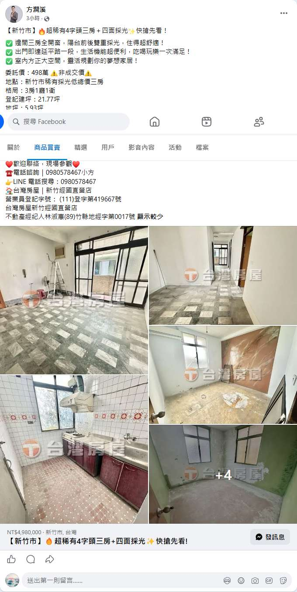 看原始刊登 → 查看貼文原文方澗溪 2小時前 【新竹市】 超稀有4字頭三房＋四面採光 快搶先看！ 邊間三房全開窗，陽台前後雙重採光，住得超舒適！ 出門即達延平路一段，生活機能超便利，吃喝玩樂一次滿足！ 室內方正大空間，靈活規劃你的夢想家居！ 委託價：498萬 非成交價 地點：新竹市稀有採光低總價三房 格局：3房1廳1衛 登記建坪：21.77坪 地坪：5.93坪 屋齡約：47年 建物樓層：4/5樓 朝向：座西北朝東南 心動不如馬上行動！機會難得，錯過不再！ 本廣告上架後七日內有效 歡迎聯絡，現場參觀 電話諮詢｜0980578467小方 LINE 電話搜尋：0980578467 台灣房屋｜新竹經國直營店 營業員登記字號： (111)登字第419667號 台灣房屋新竹經國直營店 不動產經紀人林淑惠(89)竹縣地經字第0017號 顯示較少 +4 NT$4,980,000 · 新竹市, 台灣 【新竹市】🔥超稀有4字頭三房+四面採光✨快搶先看! 發訊息 送出第一則留言…… 貼文內有 1 個連結（已檢查）
| 498 萬 | — | 3房—廳1衛 差一點 | 21.77 坪 | 未註明 | 未註明 | — | — 年 | 5F | FB 貼文 0980578467 |
 看原始刊登 → 同一物件另有 2 筆刊登（不同仲介） | 499 萬 | 16.23萬/坪 | 3房2廳2衛 完全符合 | 30.74 坪 | 583 | 無 | 無 | 32 年 | 5F/5F | 有巢氏房屋 |
 | 499 萬 | 14.51萬/坪 | 3房2廳2衛 完全符合 | 34.39 坪 | 未註明 | 未註明 | 無 | 32 年 | 5F/5F | 信義房屋 |
 看原始刊登 → 同一物件另有 2 筆刊登（不同仲介）
| 520 萬 | 19.22萬/坪 | 3房2廳2衛 完全符合 | 27.06 坪 | 無 | 無 | 無 | 32 年 | 3F/5F | 仲介 陳智美 |
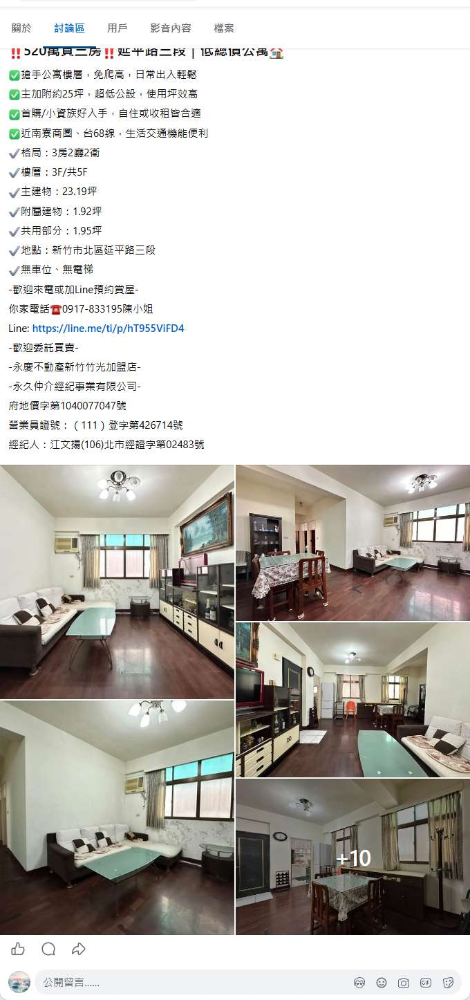 看原始刊登 → 查看貼文原文Chihmei Chen 520萬買三房 延平路三段｜低總價公寓 搶手公寓樓層，免爬高，日常出入輕鬆 主加附約25坪，超低公設，使用坪效高 首購/小資族好入手，自住或收租皆合適 近南寮商圈、台68線，生活交通機能便利 格局：3房2廳2衛 樓層：3F/共5F 主建物：23.19坪 附屬建物：1.92坪 共用部分：1.95坪 地點：新竹市北區延平路三段 無車位、無電梯 -歡迎來電或加Line預約賞屋- 你家電話 0917-833195陳小姐 Line: -歡迎委託買賣- -永慶不動產新竹竹光加盟店- -永久仲介經紀事業有限公司- 府地價字第1040077047號 營業員證號：（111）登字第426714號 經紀人：江文揚(106)北市經證字第02483號 +10 公開留言…… 貼文內有 2 個連結（已檢查）
| 520 萬 | — | 3房—廳2衛 完全符合 | 25.0 坪 | 未註明 | 無 | 無 | — 年 | — | FB 貼文 0917-833195 |
 看原始刊登 → 同一物件另有 3 筆刊登（不同仲介）
| 538 萬 | 18.32萬/坪 | 3房2廳2衛 完全符合 | 29.37 坪 | 2400元/年 | 無 | 無 | 29 年 | 4F/5F | 仲介 謝秉哲 |
| 538 萬 | 21.11萬/坪 | 3房2廳1衛 差一點 | 25.48 坪 | 未註明 | 未註明 | 無 | 45.7 年 | 4F/5F | 信義房屋 | |
 看原始刊登 → 同一物件另有 4 筆刊登（不同仲介）
| 550 萬 | 29.79萬/坪 | 3房2廳2衛 完全符合 | 18.47 坪 | 1250元/月 | 無 | 有 | 31 年 | 4F/5F | 仲介 吳小姐 |
 | 558 萬 | 22.29萬/坪 | 3房2廳2衛 完全符合 | 25.04 坪 | 未註明 | 無 | 無 | 45 年 | 5F/5F | 仲介 王小姐 |
 | 568 萬 | 20.34萬/坪 | 3房2廳2衛 完全符合 | 27.92 坪 | 無 | 無 | 無 | 35 年 | 4F/5F | 仲介 謝雨蓉 |
| 568 萬 | 20.08萬/坪 | 3房2廳1衛 差一點 | 28.28 坪 | 未註明 | 無 | 無 | 32.4 年 | 4F/5F | 有巢氏房屋 | |
| 568 萬 | 20.74萬/坪 | 3房2廳2衛 完全符合 | 27.39 坪 | 未註明 | 未註明 | 無 | 44.8 年 | 4F/5F | 永慶房屋 | |
 | 586 萬 | 16.96萬/坪 | 3房2廳2衛 完全符合 | 34.56 坪 | 1500元/月 | 無 | 無 | 34 年 | 5F/5F | 仲介 汪忠政 |
 | 588 萬 | 16.17萬/坪 | 3房2廳2衛 完全符合 | 36.36 坪 | 3600元/季度 | 平面式，已含售金內 | 無 | 33 年 | 5F/5F | 仲介 謝家寶 |
| 588 萬 | 26.23萬/坪 | 3房2廳1衛 差一點 | 22.42 坪 | 未註明 | 新北市土城區中正路 | 無 | 43.6 年 | 2F/4F | 永慶房屋 | |
| 588 萬 | 23.49萬/坪 | 3房2廳2衛 完全符合 | 25.03 坪 | 無 | 無 | 無 | 45 年 | 5F/5F | 仲介 林育賢 | |
| 588 萬 | 20.56萬/坪 | 3房2廳2衛 完全符合 | 28.6 坪 | 未註明 | 坡道平面固定車位 | 無 | 33.9 年 | 5F/5F | 有巢氏房屋 | |
| 588 萬 | 23.4萬/坪 | 3房2廳1衛 差一點 | 25.13 坪 | 未註明 | 無 | 無 | 35.2 年 | 3F/5F | 有巢氏房屋 | |
 看原始刊登 → 同一物件另有 3 筆刊登（不同仲介）
| 598 萬 | 22.04萬/坪 | 3房2廳1衛 差一點 | 27.13 坪 | 無 | 無 | 無 | 34 年 | 4F/5F | 屋主 吳小姐 |
 | 598 萬 | 24.44萬/坪 | 3房2廳1衛 差一點 | 24.47 坪 | 無 | 無 | 無 | 28 年 | 5F/5F | 仲介 林宜賢 |
| 598 萬 | 22.05萬/坪 | 3房2廳2衛 完全符合 | 27.12 坪 | 無 | 無 | 無 | 34 年 | 4F/5F | 仲介 黃仲和 | |
 | 598 萬 | 23.86萬/坪 | 3房2廳2衛 完全符合 | 25.06 坪 | 無 | 無 | 無 | 43 年 | 5F/5F | 仲介 詹小予 |
 | 598 萬 | 23.86萬/坪 | 3房2廳1衛 差一點 | 25.06 坪 | 無 | 無 | 無 | 43 年 | 5F/5F | 仲介 孫振耘 |
| 598 萬 | 17.41萬/坪 | 3房2廳2衛 完全符合 | 34.34 坪 | 583 | 坡道平面固定車位 | 無 | 32 年 | 5F/5F | 有巢氏房屋 | |
 | 598 萬 | 19.71萬/坪 | 3房2廳2衛 完全符合 | 30.34 坪 | 未註明 | 無 | 無 | 47.2 年 | 3F/5F | 有巢氏房屋 |
| 598 萬 | 16.92萬/坪 | 4房2廳2衛 超規格 | 35.34 坪 | 未註明 | 無 | — | 34.3 年 | 1-2F/2F | 有巢氏房屋 | |
| 598 萬 | 52.32萬/坪 | 2房—廳2衛 差一點 | 11.43 坪 | 未註明 | 電梯華廈NO.4 | 無 | 35.4 年 | 1F/5F | 永慶房屋 | |
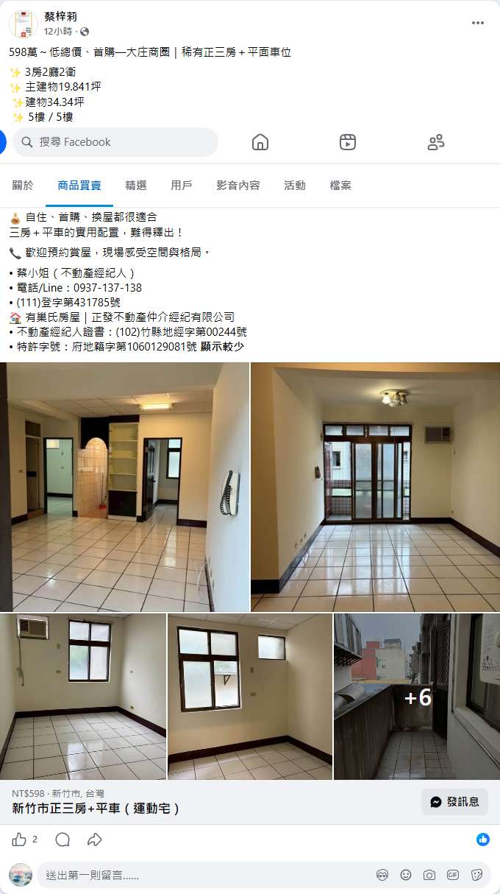 看原始刊登 → 查看貼文原文蔡梓莉 598萬～低總價、首購—大庄商圈｜稀有正三房＋平面車位 3房2廳2衛 主建物19.841坪 建物34.34坪 5樓／5樓 屋齡約31年 平面車位，停車更方便 格局方正，三房空間實用 大庄商圈生活機能成熟，採買、交通一次滿足 搶先入主價：598萬 自住、首購、換屋都很適合 三房＋平車的實用配置，難得釋出！ 歡迎預約賞屋，現場感受空間與格局。 • 蔡小姐（不動產經紀人） • 電話/Line：0937-137-138 • (111)登字第431785號 有巢氏房屋｜正發不動產仲介經紀有限公司 • 不動產經紀人證書：(102)竹縣地經字第00244號 • 特許字號：府地籍字第1060129081號 顯示較少 +6 NT$598 · 新竹市, 台灣 新竹市正三房+平車（運動宅） 發訊息 送出第一則留言…… 貼文內有 1 個連結（已檢查）
| 598 萬 | — | 3房—廳2衛 完全符合 | 19.841 坪 | 未註明 | 有 | — | — 年 | 5F/5F | FB 貼文 0937-137-138 |
| 598 萬 | 22.8萬/坪 | 3房2廳2衛 完全符合 | 26.23 坪 | 無 | 無 | 無 | 46 年 | 2F/5F | 仲介 詹小予 | |
| 598 萬 | 21.75萬/坪 | 3房2廳2衛 完全符合 | 27.49 坪 | — | 未註明 | 無 | 45 年 | 3F/5F | 仲介 陳小姐 | |
| 598 萬 | 24.21萬/坪 | 4房2廳1衛 差一點 | 24.7 坪 | — | 未註明 | 無 | 44 年 | 5F/5F | 仲介 彭啟亮 | |
| 614 萬 | 14.62萬/坪 | 3房2廳2衛 完全符合 | 42.0 坪 | 未註明 | 無 | 有 | 32 年 | 3F/7F | — | |
| 628 萬 | 21.22萬/坪 | 3房2廳2衛 完全符合 | 29.6 坪 | 無 | 無 | 無 | 42 年 | 3F/5F | 仲介 王小姐 | |
 看原始刊登 → 同一物件另有 5 筆刊登（不同仲介）
| 638 萬 | 25.57萬/坪 | 3房2廳2衛 完全符合 | 24.95 坪 | 無 | 無 | 無 | 46 年 | 1F/5F | 仲介 楊家渝 |
| 638 萬 | 25.57萬/坪 | 3房2廳2衛 完全符合 | 24.95 坪 | 無 | 無 | 無 | 46 年 | 1F/5F | 仲介 林于之 | |
| 638 萬 | 27.96萬/坪 | 3房2廳1衛 差一點 | 22.82 坪 | 未註明 | 無 | 無 | 44.9 年 | 5F/5F | 有巢氏房屋 | |
| 638 萬 | 21.76萬/坪 | 5房—廳3衛 超規格 | 29.32 坪 | 無 | 未註明 | 無 | 47 年 | 5F/5F | 仲介 施智睿 | |
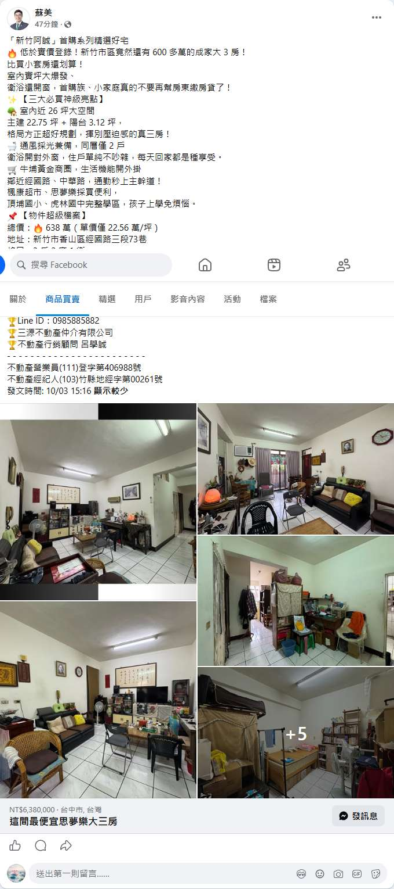 看原始刊登 → 查看貼文原文蘇美 47分鐘前 「新竹阿誠」首購系列精選好宅 低於實價登錄！新竹市區竟然還有 600 多萬的成家大 3 房！ 比買小套房還划算！ 室內實坪大爆發、 衛浴還開窗，首購族、小家庭真的不要再幫房東繳房貸了！ 【三大必買神級亮點】 室內近 26 坪大空間 主建 22.75 坪 + 陽台 3.12 坪， 格局方正超好規劃，揮別壓迫感的真三房！ 通風採光兼備，同層僅 2 戶 衛浴開對外窗，住戶單純不吵雜，每天回家都是種享受。 牛埔黃金商圈，生活機能開外掛 鄰近經國路、中華路，通勤秒上主幹道！ 楓康超市、思夢樂採買便利， 頂埔國小、虎林國中完整學區，孩子上學免煩惱。 【物件超級檔案】 總價： 638 萬（單價僅 22.56 萬/坪） 地址：新竹市香山區經國路三段73巷 格局：3 房 2 廳 1 衛 建坪：28.275 坪 樓層：4 樓 / 共 5 樓（公寓） 這種價格與大空間，秒殺速度絕對超乎想像！ 別等賣掉了才後悔，手刀預約看屋！ - - - - - - - - - - - - - - - - - - - - - - - - 搶購專線：0985885882 Line ID：0985885882 三源不動產仲介有限公司 不動產行銷顧問 呂學誠 - - - - - - - - - - - - - - - - - - - - - - - - 不動產營業員(111)登字第406988號 不動產經紀人(103)竹縣地經字第00261號 發文時間: 10/03 15:16 顯示較少 +5 NT$6,380,000 · 台中市, 台灣 這間最便宜思夢樂大三房 發訊息 送出第一則留言…… 貼文內有 1 個連結（已檢查）
| 638 萬 | — | 3房—廳1衛 差一點 | 26.0 坪 | 未註明 | 未註明 | 無 | — 年 | 4F | FB 貼文 0985885882 |
 看原始刊登 → 同一物件另有 3 筆刊登（不同仲介）
| 650 萬 | 19.11萬/坪 | 3房2廳2衛 完全符合 | 34.02 坪 | 無 | 無 | 無 | 44 年 | 4F/5F | 仲介 林子鈞 |
| 650 萬 | 17.03萬/坪 | 4房2廳2衛 超規格 | 38.16 坪 | 未註明 | 未註明 | 無 | 36.6 年 | 5F/5F | 信義房屋 | |
| 650 萬 | 19.1萬/坪 | 3房2廳1衛 差一點 | 34.03 坪 | 未註明 | 未註明 | 無 | 44.9 年 | 4F/5F | 信義房屋 | |
| 652 萬 | 19.18萬/坪 | 3房2廳2衛 完全符合 | 34.0 坪 | 未註明 | 無 | 無 | 37 年 | 1F/5F | — | |
 看原始刊登 → 同一物件另有 6 筆刊登（不同仲介）
| 658 萬 | 22.17萬/坪 | 3房2廳1衛 差一點 | 29.68 坪 | 100元/月 | 無 | 無 | 46 年 | 3F/4F | 仲介 賴美君 |
 | 658 萬 | 27.89萬/坪 | 3房2廳2衛 完全符合 | 23.6 坪 | 900元/月 | 無 | 有 | — 年 | 3F/7F | 代理人 梁小姐 |
 | 658 萬 | 23.94萬/坪 | 4房2廳2衛 超規格 | 27.48 坪 | 未註明 | 未註明 | 有 | 31 年 | 5F/5F | 中信房屋 南大加盟店 |
| 658 萬 | 21.26萬/坪 | 3房2廳2衛 完全符合 | 30.95 坪 | 未註明 | 可抽籤 | 無 | 37.3 年 | 3F/5F | 永慶房屋 | |
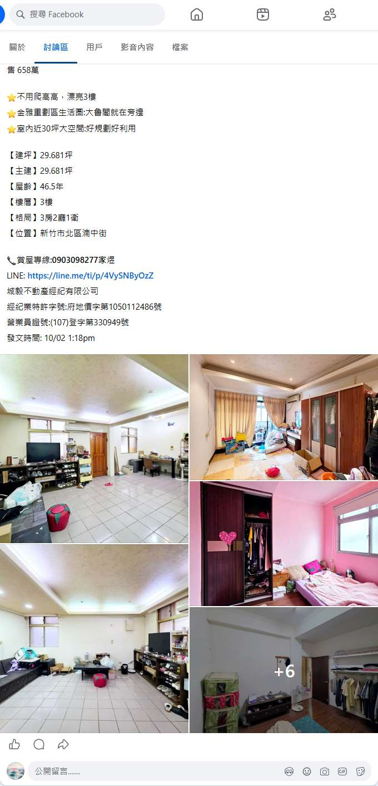 看原始刊登 → 查看貼文原文邱家煜 51分鐘前 使用面積近30坪》武陵湳雅｜金雅旁寬敞三房美寓 售 658萬 不用爬高高，漂亮3樓 金雅重劃區生活圈:大魯閣就在旁邊 室內近30坪大空間:好規劃好利用 【建坪】29.681坪 【主建】29.681坪 【屋齡】46.5年 【樓層】3樓 【格局】3房2廳1衛 【位置】新竹市北區湳中街 賞屋專線:0903098277家煜 LINE: 城毅不動產經紀有限公司 經紀業特許字號:府地價字第1050112486號 營業員證號:(107)登字第330949號 發文時間: 10/02 1:18pm +6 公開留言…… 貼文內有 2 個連結（已檢查）
| 658 萬 | — | 3房—廳1衛 差一點 | 30.0 坪 | 未註明 | 未註明 | — | — 年 | 3F | FB 貼文 0903098277 |
 | 668 萬 | 36.18萬/坪 | 3房2廳2衛 完全符合 | 18.47 坪 | 3750元/月 | 無 | 有 | 31 年 | 4F/5F | 仲介 黎小姐 |
| 668 萬 | 24.81萬/坪 | 3房2廳1衛 差一點 | 26.93 坪 | 未註明 | 無 | 無 | 36.8 年 | 4F/5F | 有巢氏房屋 | |
 | 668 萬 | 22.78萬/坪 | 5房3廳3衛 超規格 | 29.32 坪 | 未註明 | 未註明 | 有 | 47 年 | 5F/5F | 中信房屋 |
 | 668 萬 | 17.14萬/坪 | 3房2廳2衛 完全符合 | 38.97 坪 | 未註明 | 有 | — | — 年 | 5F/5F | 永義房屋 |
| 668 萬 | 22.82萬/坪 | 3房2廳2衛 完全符合 | 29.27 坪 | 未註明 | 可抽籤 | 無 | 31.1 年 | 2F/5F | 永慶房屋 | |
| 668 萬 | 33.43萬/坪 | 3房2廳1衛 差一點 | 19.98 坪 | 無 | 無 | 無 | 44 年 | 3F/5F | 仲介 曾建發 | |
| 668 萬 | 33.43萬/坪 | 3房2廳2衛 完全符合 | 19.98 坪 | 無 | 無 | 無 | 44 年 | 3F/5F | 仲介 值班小姐 | |
| 685 萬 | 22.13萬/坪 | 3房2廳2衛 完全符合 | 30.95 坪 | 未註明 | 無 | 無 | 37 年 | 3F/5F | 仲介 榮筱玲 | |
 | 685 萬 | 15.09萬/坪 | 3房2廳2衛 完全符合 | 45.4 坪 | 未註明 | 有 | 有 | 31.1 年 | 6F/11F | 信義房屋 |
 看原始刊登 → 同一物件另有 6 筆刊登（不同仲介）
| 688 萬 | 19.26萬/坪 | 3房2廳2衛 完全符合 | 35.72 坪 | 無 | 無 | 無 | 47 年 | 5F/5F | 仲介 陳俞樺 |
| 688 萬 | 17.65萬/坪 | 2房2廳2衛 差一點 | 38.97 坪 | 3600元/季度 | 平面式 | 無 | 33 年 | 5F/5F | 仲介 杜小姐 | |
| 688 萬 | 56.95萬/坪 | 3房2廳2衛 完全符合 | 12.08 坪 | 800 | 無 | 有 | 19.4 年 | 3F/10F | 有巢氏房屋 | |
| 688 萬 | 27.9萬/坪 | 4房2廳1衛 差一點 | 24.66 坪 | 未註明 | 無 | 無 | 44.7 年 | 5F/5F | 有巢氏房屋 | |
| 688 萬 | 21.87萬/坪 | 3房2廳2衛 完全符合 | 31.46 坪 | 未註明 | 未註明 | 無 | 29.5 年 | 5F/5F | 信義房屋 | |
 | 688 萬 | 11.91萬/坪 | 3房2廳3衛 超規格 | 57.76 坪 | 未註明 | 未註明 | 無 | 37.4 年 | 4-5F/5F | 信義房屋 |
| 688 萬 | 22.54萬/坪 | 7房—廳7衛 超規格 | 30.53 坪 | 未註明 | 資訊 | — | 44.6 年 | 1-2F/2F | 永慶房屋 | |
| 688 萬 | 28.27萬/坪 | 7房2廳2衛 超規格 | 24.34 坪 | 未註明 | 可抽籤 | 無 | — 年 | 5F/5F | 永慶房屋 | |
 | 698 萬 | 33.66萬/坪 | 2房2廳2衛 差一點 | 20.74 坪 | 無 | 無 | 無 | 31 年 | 2F/5F | 仲介 駱詠潔 |
| 698 萬 | 15.61萬/坪 | 3房2廳2衛 完全符合 | 44.72 坪 | 未註明 | 坡道平面固定車位 | 無 | 28.3 年 | 5F/5F | 有巢氏房屋 | |
 看原始刊登 → 同一物件另有 5 筆刊登（不同仲介）
| 698 萬 | 23.44萬/坪 | 3房2廳1衛 差一點 | 29.78 坪 | 無 | 無 | 無 | 35 年 | 1F/5F | 仲介 胡治豪 |
 看原始刊登 → 同一物件另有 3 筆刊登（不同仲介）
| 698 萬 | 30.16萬/坪 | 3房2廳1衛 差一點 | 23.14 坪 | 無 | 無 | — | 47 年 | 1F~2F/2F | 仲介 李沂庭 |
 | 698 萬 | 21.42萬/坪 | 5房2廳2衛 超規格 | 32.59 坪 | 1000元/月 | 無 | 無 | — 年 | 5F/5F | 仲介 盧俊全 |
| 698 萬 | 22.56萬/坪 | 3房2廳1衛 差一點 | 30.94 坪 | 未註明 | 無 | 無 | 41.9 年 | 2F/5F | 有巢氏房屋 | |
 | 698 萬 | 24.41萬/坪 | 3房2廳2衛 完全符合 | 28.6 坪 | 未註明 | 有 | 無 | 34.1 年 | 5F/5F | 信義房屋 |
 | 698 萬 | 19.07萬/坪 | 3房2廳2衛 完全符合 | 36.6 坪 | 未註明 | 資訊 | 無 | 32.9 年 | 4F/5F | 永慶房屋 |
| 698 萬 | 17.6萬/坪 | 4房4廳2衛 超規格 | 39.67 坪 | 未註明 | 未註明 | 無 | 44.6 年 | 4F/5F | 信義房屋 | |
 | 698 萬 | 17.86萬/坪 | 6房2廳3衛 超規格 | 39.09 坪 | 未註明 | 未註明 | 無 | 32.9 年 | 5F/5F | 信義房屋 |
 | 698 萬 | 23.03萬/坪 | 3房2廳1衛 差一點 | 30.31 坪 | 未註明 | 未註明 | 無 | 39.4 年 | 5F/0F | 信義房屋 |
| 698 萬 | 21.2萬/坪 | 3房2廳2衛 完全符合 | 32.92 坪 | 未註明 | 新竹市香山區宮口街 | 有 | 31.1 年 | 2F/11F | 永慶房屋 | |
| 698 萬 | 23.48萬/坪 | 3房2廳1衛 差一點 | 29.73 坪 | 未註明 | 新竹市東區明湖路 | 無 | 33.5 年 | 5F/5F | 永慶房屋 | |
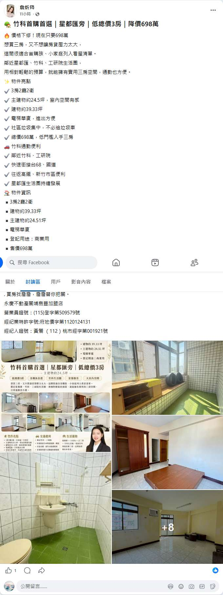 看原始刊登 → 查看貼文原文詹炘筠 9小時前 竹科首購首選｜星都匯旁｜低總價3房｜降價698萬 價格下修！現在只要698萬 想買三房，又不想讓房貸壓力太大， 這間很適合首購族、小家庭列入看屋清單。 鄰近星都匯、竹科、工研院生活圈， 用相對輕鬆的預算，就能擁有實用三房空間，通勤也方便。 物件亮點 3房2廳2衛 主建物約24.5坪，室內空間有感 建物約39.33坪 電梯華廈，進出方便 社區垃圾集中，不必追垃圾車 總價698萬，低門檻入手三房 竹科通勤便利 鄰近竹科、工研院 快速銜接台68、國道 往返高鐵、新竹市區便利 星都匯生活圈持續發展 物件資訊 3房2廳2衛 建物約39.33坪 主建物約24.51坪 電梯華廈 登記用途：商業用 售價698萬 698萬 × 大室內 × 正三房 × 竹科生活圈 想找竹科周邊低總價三房，這次降價真的可以來看看 24H賞屋專線：0984331410 LINE ID : 9352719 . 買房找詹詹，詹詹替你把關。 永慶不動產關埔峊豐加盟店 營業員證號：(115)登字第509579號 經紀業特許字號:府地價字第1120124131 經紀人證號：黃鶯 （112）桃市經字第001921號 +8 公開留言…… 貼文內有 1 個連結（已檢查）
| 698 萬 | — | 3房—廳2衛 完全符合 | 24.5 坪 | 未註明 | 未註明 | 有 | — 年 | — | FB 貼文 0984331410 |
| 698 萬 | 30.97萬/坪 | 3房2廳1衛 差一點 | 22.54 坪 | 無 | 無 | 無 | 46 年 | 1F/4F | 仲介 傅煜茗 | |
| 698 萬 | 22.53萬/坪 | 3房2廳2衛 完全符合 | 30.98 坪 | 未註明 | 未註明 | 有 | 42 年 | 5F/5F | 中信房屋 北屯崇德加盟店 | |
| 698 萬 | 35.23萬/坪 | 3房2廳1衛 差一點 | 19.81 坪 | 未註明 | 無 | 無 | — 年 | 4F/4F | 仲介 彭立宇 | |
| 698 萬 | 34.93萬/坪 | 3房2廳1衛 差一點 | 19.98 坪 | — | 未註明 | 無 | 44 年 | 3F/5F | 仲介 王世俊 | |
| 698 萬 | 31.51萬/坪 | 3房2廳3衛 超規格 | 22.15 坪 | — | 未註明 | 有 | — 年 | 5F/5F | — | |
 | 699 萬 | 22.66萬/坪 | 3房2廳2衛 完全符合 | 30.85 坪 | 無 | 無 | 無 | — 年 | 5F/5F | 仲介 林子鈞 |
| 699 萬 | 26.93萬/坪 | 3房2廳1衛 差一點 | 25.96 坪 | 未註明 | 未註明 | 無 | 46.5 年 | 1F/4F | 信義房屋 | |
| 699 萬 | 27.22萬/坪 | 3房2廳2衛 完全符合 | 25.68 坪 | 未註明 | 未註明 | — | — 年 | 5F/5F | 永慶不動產 | |
 | 700 萬 | 18.07萬/坪 | 3房2廳2衛 完全符合 | 38.74 坪 | 未註明 | 有 | 無 | 29.3 年 | 4F/5F | 信義房屋 |
 | 728 萬 | 16.03萬/坪 | 3房2廳2衛 完全符合 | 45.4 坪 | 1300元/月 | 平面式，已含售金內 | 有 | 31 年 | 5F/10F | 仲介 值班姐姐 |
 | 728 萬 | 32.08萬/坪 | 3房2廳2衛 完全符合 | 22.69 坪 | 無 | 無 | 無 | — 年 | 3F/4F | 仲介 盧俊全 |
 | 728 萬 | 18.79萬/坪 | 3房2廳2衛 完全符合 | 38.74 坪 | 未註明 | 。 | 無 | 29.3 年 | 4F/5F | 永慶房屋 |
| 728 萬 | 29.18萬/坪 | 3房2廳2衛 完全符合 | 24.95 坪 | 無 | 無 | 無 | 46 年 | 1F/5F | 仲介 值班 | |
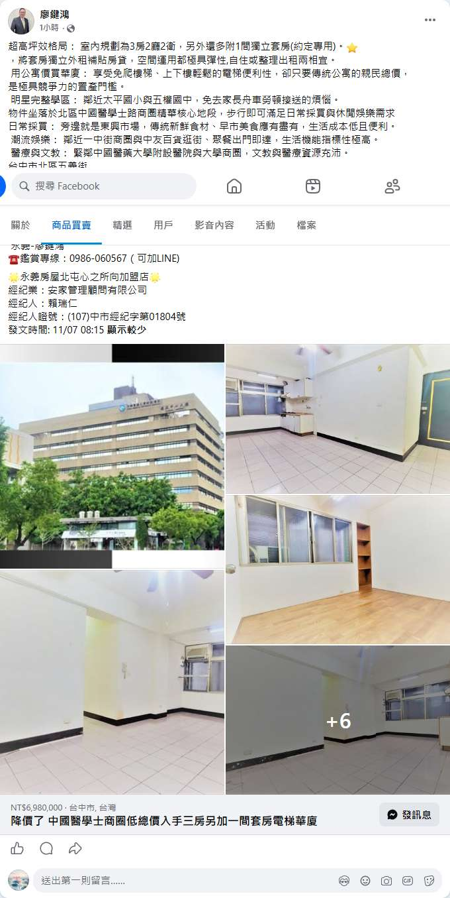 看原始刊登 → 查看貼文原文廖鍵鴻 21分鐘前 2026年11月7日 星期六上午8:22 超高坪效格局： 室內規劃為3房2廳2衛，另外還多附1間獨立套房(約定專用)。 ，將套房獨立外租補貼房貸，空間運用都極具彈性,自住或整理出租兩相宜。 用公寓價買華廈： 享受免爬樓梯、上下樓輕鬆的電梯便利性，卻只要傳統公寓的親民總價， 是極具競爭力的置產門檻。 明星完整學區： 鄰近太平國小與五權國中，免去家長舟車勞頓接送的煩惱。 物件坐落於北區中國醫學士路商圈精華核心地段，步行即可滿足日常採買與休閒娛樂需求 日常採買： 旁邊就是東興市場，傳統新鮮食材、早市美食應有盡有，生活成本低且便利。 潮流娛樂： 鄰近一中街商圈與中友百貨逛街、聚餐出門即達，生活機能指標性極高。 醫療與文教： 緊鄰中國醫藥大學附設醫院與大學商圈，文教與醫療資源充沛。 台中市北區五義街 總價：730萬 總坪：23.44坪 主建：14.69坪( 地坪：4.36坪 格局：4房2廳3衛 屋齡：33.2年 樓層：2 / 7樓 型態：電梯華廈 永義-廖鍵鴻 鑑賞專線：0986-060567（可加LINE) 永義房屋北屯心之所向加盟店 經紀業：安家管理顧問有限公司 經紀人：賴瑞仁 經紀人證號：(107)中市經紀字第01804號 發文時間: 11/07 08:15 顯示較少 +6 NT$6,980,000 · 台中市, 台灣 降價了 中國醫學士商圈低總價入手三房另加一間套房電梯華廈 發訊息 送出第一則留言…… 貼文內有 1 個連結（已檢查）
| 730 萬 | — | 3房2廳2衛 完全符合 | 23.44 坪 | 未註明 | 未註明 | 有 | — 年 | 7F | FB 貼文 0986-060567 |
| 738 萬 | 17.41萬/坪 | 3房2廳2衛 完全符合 | 42.39 坪 | 未註明 | 坡道平面固定車位 | 無 | 29.3 年 | 3F/5F | 有巢氏房屋 | |
 看原始刊登 → 同一物件另有 11 筆刊登（不同仲介）
| 738 萬 | 30.32萬/坪 | 3房2廳1衛 差一點 | 24.34 坪 | 未註明 | 無 | 無 | 0 年 | 2F/5F | 有巢氏房屋 |
| 738 萬 | 24.49萬/坪 | 4房—廳4衛 超規格 | 30.14 坪 | 未註明 | 無 | 無 | 0 年 | 5F/5F | 有巢氏房屋 | |
 | 738 萬 | 30.32萬/坪 | 3房2廳2衛 完全符合 | 24.34 坪 | 未註明 | 未註明 | 無 | 46.8 年 | 2F/5F | 永慶房屋 |
| 738 萬 | 9.24萬/坪 | 3房2廳2衛 完全符合 | 79.86 坪 | 未註明 | 無 | — | 45 年 | 整棟/2F | — | |
 | 738 萬 | 25.78萬/坪 | 5房—廳5衛 超規格 | 28.63 坪 | 未註明 | 未註明 | 有 | 42 年 | 5F/5F | 中信房屋 環南誠家加盟店 |
| 738 萬 | 18.9萬/坪 | 3房2廳2衛 完全符合 | 39.04 坪 | — | 未註明 | 有 | 28 年 | 2F/10F | 仲介 陳俍錕 | |
 | 739 萬 | 18.43萬/坪 | 3房2廳2衛 完全符合 | 40.09 坪 | 未註明 | 可以停 但無產權 | 無 | 38.6 年 | 5F/5F | 永慶房屋 |
 看原始刊登 → 同一物件另有 7 筆刊登（不同仲介）
| 750 萬 | 28.74萬/坪 | 4房2廳2衛 超規格 | 26.1 坪 | 無 | 無 | — | 44 年 | 1F~2F/2F | 仲介 范銘淳 |
| 750 萬 | 27.85萬/坪 | 3房2廳2衛 完全符合 | 26.93 坪 | 未註明 | 未註明 | 無 | 38.5 年 | 5F/5F | 永慶房屋 | |
| 750 萬 | 27.32萬/坪 | 3房2廳1衛 差一點 | 27.45 坪 | 未註明 | 屋況需整理，可依喜好重新 | 無 | 45.9 年 | 2F/4F | 永慶房屋 | |
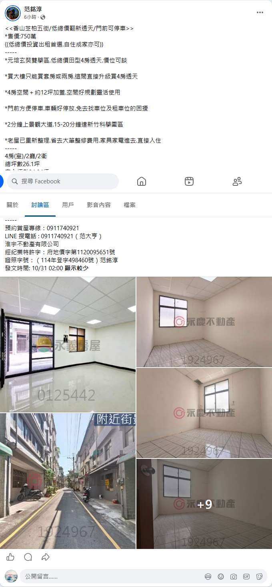 看原始刊登 → 查看貼文原文范銘淳 6小時前 <<香山芝柏五街/低總價翻新透天/門前可停車>> *售價:750萬 ((低總價投資出租首選.自住成家亦可)) ----- *元培玄奘雙學區.低總價田型4房透天.價位可談 *買大樓只能買套房或兩房.這間直接升級買4房透天 *4房空間＋約12坪加蓋.空間好規劃靈活使用 *門前方便停車.車輛好停放.免去找車位及租車位的困擾 *2分鐘上景觀大道.15-20分鐘達新竹科學園區 *老屋已重新整理.省去大筆整修費用.家具家電進去.直接入住 ----- 4房(室)/2廳/2衛 總坪數26.1坪 室內坪數24.04坪 陽台坪數2.05坪 土地坪數18.02坪 加蓋坪數12坪 樓層1-2樓/總樓層2樓 屋齡44年 ----- 預約賞屋專線：0911740921 LINE 搜電話 : 0911740921（范大亨） 淮宇不動產有限公司 經紀業特許字：府地價字第1120095651號 證照字號：（114年登字498460號）范銘淳 發文時間: 10/31 02:00 顯示較少 +9 公開留言…… 貼文內有 1 個連結（已檢查）
| 750 萬 | — | 4房—廳2衛 超規格 | 12.0 坪 | 未註明 | 未註明 | — | — 年 | 2F | FB 貼文 0911740921 |
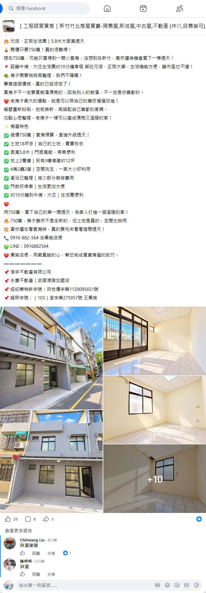 看原始刊登 → 查看貼文原文Teresia Wang AI 內容 8小時前 750萬！你沒看錯，套房價格竟然可以買透天！ 與其買一間小套房，不如買下一棟自己的透天厝！ 元培・玄奘生活圈｜5.8米大面寬透天 開價只要750萬！真的很難得！ 現在750萬，可能只買得到一間小套房，沒想到在新竹，竟然還有機會買下一棟透天！ 距離牛埔、大庄生活圈約10分鐘車程 鄰近元培、玄奘大學，生活機能方便，離市區也不遠！ 房子需要稍微再整理，我們不隱瞞！ 畢竟這個價格，真的已經很低了！ 買房子不一定要買裝潢漂亮的，因為別人的裝潢，不一定是你喜歡的。 老房子最大的優點，就是可以照自己的喜好慢慢改造！ 牆壁重新粉刷、地板換新，再搭配自己喜歡的家具。 花點心思整理，老房子一樣可以變成漂亮又溫暖的家！ 房屋特色 總價750萬｜套房預算，直接升級透天！ 土地18坪多｜自己的土地，實實在在 面寬5.8米｜門面寬敞，停車便利 地上2層樓｜另有3樓增建約12坪 4房2廳2衛｜空間充足，一家大小好利用 衛浴已整理｜減少部分裝修費用 門前好停車｜生活更加方便 約10分鐘到牛埔、大庄｜生活圈便利 用750萬，買下自己的第一間透天，為家人打造一個溫暖的家！ 750萬，房子雖然不是全新的，但土地是真的，空間也夠用 當你還在看套房時，真的要先來看看這間透天！ 0916-882-564 洽秉瑜店長 LINE：0916882564 秉瑜店長，用最真誠的心，幫您完成買賣房屋的託付。 淮宇不動產有限公司 永慶不動產｜武陵湳雅加盟店 經紀業特許字號：府地價字第1120095651號 證照字號：（103）登字第275957號 王秉瑜 +10 查看更多留言 ChiHsiang Liu 詳資謝謝 回覆 陳桐桐 詳資 回覆 送出第一則留言…… 貼文內有 1 個連結（已檢查）
| 750 萬 | — | 4房2廳2衛 超規格 | 18.0 坪 | 未註明 | 未註明 | — | — 年 | 3F | FB 貼文 0916-882-564 |
| 750 萬 | 20.06萬/坪 | 3房2廳2衛 完全符合 | 37.38 坪 | — | 未註明 | — | 47 年 | 整棟/3F | 仲介 莊先生 | |
 看原始刊登 → 同一物件另有 5 筆刊登（不同仲介）
| 758 萬 | 29.82萬/坪 | 3房2廳1衛 差一點 | 25.42 坪 | 無 | 無 | 無 | 44 年 | 4F/5F | 仲介 張佳偉 |
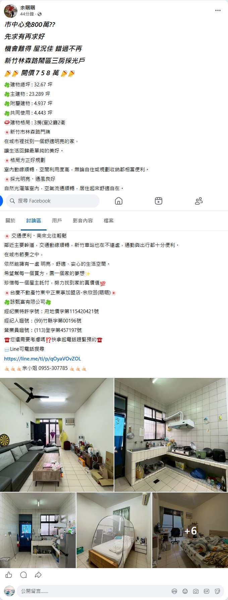 看原始刊登 → 查看貼文原文余睏睏 44分鐘前 市中心免800萬?? 先求有再求好 機會難得 屋況佳 錯過不再 新竹林森路鬧區三房採光戶 開價 7 5 8 萬 建物總坪 : 32.67 坪 主建物 : 23.289 坪 附屬建物 : 4.937 坪 共同使用 : 4.443 坪 建物格局 : 3房(室)2廳2衛 新竹市林森路門牌 在城市裡找到一個舒適明亮的家， 讓生活回歸最單純的美好。 格局方正好規劃 室內動線順暢，空間利用度高，無論自住或規劃收納都相當便利。 採光明亮・通風良好 自然光灑落室內，空氣流通順暢，居住起來舒適自在。 簡約裝潢・屋況維護良好 屋主用心維護，整體屋況良好，簡單整理即可入住。 生活機能完善 位於新竹市林森路生活圈，周邊商店、餐飲與日常採買方便，生活機能成熟。 交通便利・南來北往輕鬆 鄰近主要幹道，交通動線順暢，新竹車站也在不遠處，通勤與出行都十分便利。 在城市節奏之中， 依然能擁有一處 明亮、舒適、安心的生活空間。 希望幫每一個買方，圓一個家的夢想 珍惜每一個屋主託付，努力找到家的真價值 台慶不動產竹東中正東寧加盟店-余欣芸(睏睏) 詠甄富有限公司 經紀業特許字號：府地價字第115420421號 經紀人證號：(99)竹縣字第00196號 營業員證號：(113)登字第457197號 您還需要考慮嗎 快拿起電話趕緊預約 Line可電話搜尋 余小姐 0955-307785 +6 公開留言…… 貼文內有 2 個連結（已檢查）
| 758 萬 | — | 3房—廳2衛 完全符合 | 32.67 坪 | 未註明 | 未註明 | — | — 年 | — | FB 貼文 0955-307785 |
| 758 萬 | 25.1萬/坪 | 4房2廳1衛 差一點 | 30.2 坪 | 無 | 無 | — | 48 年 | 整棟/2F | 仲介 徐佩瑜 | |
| 758 萬 | 36.56萬/坪 | 2房2廳2衛 差一點 | 20.74 坪 | — | 未註明 | 無 | 31 年 | 2F/5F | 仲介 黃郁倫 | |
 | 768 萬 | 21.46萬/坪 | 3房2廳2衛 完全符合 | 35.78 坪 | 無 | 無 | 無 | 41 年 | 5F/5F | 仲介 王秉瑜 |
 | 768 萬 | 22.8萬/坪 | 2房2廳2衛 差一點 | 33.68 坪 | 500元/月 | 機械式，已含售金內 | 有 | 31 年 | 4F/8F | 仲介 楊小姐 |
| 768 萬 | 37.32萬/坪 | 2房—廳2衛 差一點 | 20.58 坪 | 未註明 | 計算 | 有 | 34.8 年 | 7F/7F | 永慶房屋 | |
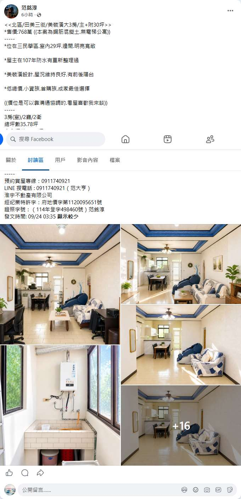 看原始刊登 → 查看貼文原文范銘淳 5小時前 <<北區/田美三街/美裝潢大3房/主+附30坪>> *售價:768萬 ((本案為鋼筋混擬土.無電梯公寓)) ----- *位在三民學區.室內29坪.邊間.明亮寬敞 *屋主在107年防水有重新整理過 *美裝潢設計.屋況維持良好.有前後陽台 *低總價.小資族.首購族.成家最佳選擇 ((價位是可以靠溝通協調的.看屋喜歡我來談)) ----- 3房(室)/2廳/2衛 總坪數35.78坪 室內坪數29.72坪 陽台坪數0.79坪 共同使用坪數5.27坪 土地坪數7.29坪 樓層5樓/總樓層5樓 屋齡41年 ----- 預約賞屋專線：0911740921 LINE 搜電話 : 0911740921（范大亨） 淮宇不動產有限公司 經紀業特許字：府地價字第1120095651號 證照字號：（114年登字498460號）范銘淳 發文時間: 09/24 03:35 顯示較少 +16 公開留言…… 貼文內有 1 個連結（已檢查）
| 768 萬 | — | 3房—廳2衛 完全符合 | 30.0 坪 | 未註明 | 未註明 | 無 | — 年 | 5F | FB 貼文 0911740921 |
 | 780 萬 | 29.43萬/坪 | 3房2廳2衛 完全符合 | 26.5 坪 | 無 | 無 | 無 | 42 年 | 3F/5F | 仲介 王筱慧 |
| 780 萬 | 29.35萬/坪 | 3房2廳1衛 差一點 | 26.58 坪 | 未註明 | 無 | 無 | 42.3 年 | 3F/5F | 有巢氏房屋 | |
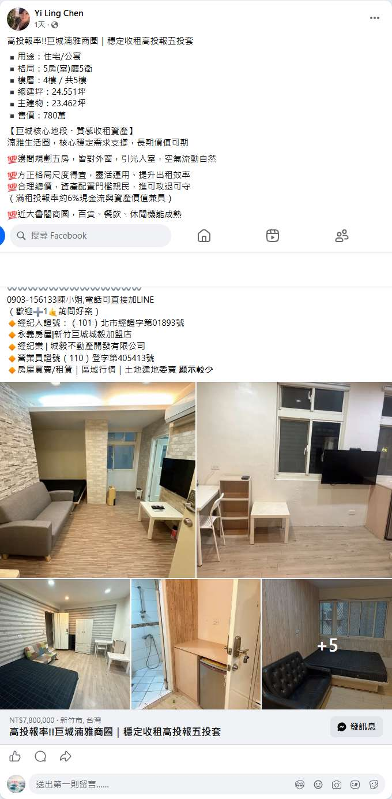 看原始刊登 → 查看貼文原文Yi Ling Chen 2小時前 高投報率!!巨城湳雅商圈｜穩定收租高投報五投套 用途：住宅/公寓 格局：5房(室)廳5衛 樓層：4樓 / 共5樓 總建坪：24.551坪 主建物：23.462坪 售價：780萬 【巨城核心地段・質感收租資產】 湳雅生活圈，核心穩定需求支撐，長期價值可期 邊間規劃五房，皆對外窗，引光入室，空氣流動自然 方正格局尺度得宜，靈活運用、提升出租效率 合理總價，資產配置門檻親民，進可攻退可守 （滿租投報率約6%現金流與資產價值兼具） 近大魯閣商圈，百貨、餐飲、休閒機能成熟 鄰全聯與果菜市場，日常採買從容便利 經國路軸線，串聯城市動脈，進出從容有序 為講究穩定收益的投資者而生， 一席兼具流動性與收益性的配置選擇， 在城市核心，收藏一份長期現金流。 0903-156133陳小姐,電話可直接加LINE （歡迎 詢問好案） 經紀人證號：（101）北市經證字第01893號 永義房屋|新竹巨城城毅加盟店 經紀業 | 城毅不動產開發有限公司 營業員證號（110）登字第405413號 房屋買賣/租賃｜區域行情｜土地建地委賣 顯示較少 +5 NT$7,800,000 · 新竹市, 台灣 高投報率!!巨城湳雅商圈｜穩定收租高投報五投套 發訊息 送出第一則留言…… 貼文內有 1 個連結（已檢查）
| 780 萬 | — | 5房—廳5衛 超規格 | 24.551 坪 | 未註明 | 未註明 | 無 | — 年 | 4F | FB 貼文 0903-156133 |
 | 785 萬 | 36.98萬/坪 | 3房2廳2衛 完全符合 | 21.23 坪 | 無 | 無 | — | 48 年 | 1F~2F/2F | 仲介 林秀惠 |
 看原始刊登 → 同一物件另有 5 筆刊登（不同仲介）
| 788 萬 | 24.27萬/坪 | 3房2廳2衛 完全符合 | 32.47 坪 | 無 | 平 | 無 | 31 年 | 4F/5F | 仲介 徐定緯 |
| 788 萬 | 28.06萬/坪 | 3房2廳2衛 完全符合 | 28.08 坪 | 980 | 無 | 有 | 0 年 | 6F/7F | 有巢氏房屋 | |
 | 788 萬 | 20.65萬/坪 | 3房2廳2衛 完全符合 | 38.17 坪 | 300元/月 | 無 | 無 | 36 年 | 2F/5F | 仲介 黃先生 |
| 788 萬 | 24.12萬/坪 | 3房2廳2衛 完全符合 | 32.67 坪 | 無 | 無 | — | 44 年 | 1F~2F/2F | 仲介 鄭鈺憲 | |
 看原始刊登 → 同一物件另有 4 筆刊登（不同仲介）
| 788 萬 | 35.26萬/坪 | 3房2廳2衛 完全符合 | 22.35 坪 | 無 | 無 | 無 | 44 年 | 2F/5F | 仲介 呂秉蓁 |
| 788 萬 | 25.11萬/坪 | 3房2廳3衛 超規格 | 31.39 坪 | 無 | 無 | 無 | — 年 | 5F/5F | 仲介 許秉曜 | |
| 788 萬 | 35.26萬/坪 | 3房2廳1衛 差一點 | 22.35 坪 | 未註明 | 未註明 | 無 | 44.4 年 | 2F/5F | 信義房屋 | |
| 788 萬 | 25.1萬/坪 | 4房2廳3衛 超規格 | 31.39 坪 | 未註明 | 未註明 | 無 | — 年 | 5F/5F | 永慶房屋 | |
 | 788 萬 | 32.37萬/坪 | 3房2廳1衛 差一點 | 24.34 坪 | 未註明 | 新竹市東區明湖路 | 無 | 46.2 年 | 2F/5F | 永慶房屋 |
| 788 萬 | 24.12萬/坪 | 3房2廳2衛 完全符合 | 32.67 坪 | 無 | 無 | — | 44 年 | 整棟/2F | 仲介 林于之 | |
| 788 萬 | 24.18萬/坪 | 5房3廳2衛 超規格 | 32.59 坪 | 1000元/月 | 無 | 無 | 39 年 | 5F/5F | 仲介 陳嘉宏 | |
| 788 萬 | 30.18萬/坪 | 4房2廳2衛 超規格 | 26.11 坪 | 未註明 | 無 | — | 44.5 年 | 1-2F/2F | 有巢氏房屋 | |
| 788 萬 | 21.61萬/坪 | 3房2廳1衛 差一點 | 36.47 坪 | 未註明 | 有 | — | — 年 | 2F/5F | 永慶不動產 | |
| 789 萬 | 26.38萬/坪 | 3房2廳2衛 完全符合 | 29.91 坪 | 未註明 | 未註明 | 有 | 46 年 | 3F/7F | 信義房屋 | |
| 790 萬 | 21.63萬/坪 | 3房2廳2衛 完全符合 | 36.52 坪 | 未註明 | 計算 | 無 | 33.4 年 | 1-5F/5F | 永慶房屋 | |
| 790 萬 | 21.63萬/坪 | 3房2廳2衛 完全符合 | 36.52 坪 | 未註明 | 未註明 | 無 | 33.4 年 | 3F/5F | 信義房屋 | |
| 796 萬 | 9.67萬/坪 | 3房2廳2衛 完全符合 | 82.33 坪 | — | 未註明 | — | 38 年 | 整棟/2F | — | |
 | 798 萬 | 22.89萬/坪 | 3房2廳2衛 完全符合 | 34.86 坪 | 無 | 無 | 有 | 32 年 | 2F/4F | 仲介 值班姐姐 |
| 798 萬 | 20.41萬/坪 | 6房2廳3衛 超規格 | 39.1 坪 | 1200元/月 | 平面式，已含售金內 | 無 | 32 年 | 5F~6F/6F | 仲介 值班人員 | |
 看原始刊登 → 同一物件另有 3 筆刊登（不同仲介）
| 798 萬 | 42.84萬/坪 | 2房1廳2衛 不符 | 18.63 坪 | 4500元/季度 | 無 | 有 | 17 年 | 3F/7F | 仲介 賴美君 |
 看原始刊登 → 同一物件另有 3 筆刊登（不同仲介）
| 798 萬 | 21.88萬/坪 | 3房2廳2衛 完全符合 | 36.47 坪 | 1200 | 坡道平面固定車位 | 無 | 33.1 年 | 4F/5F | 有巢氏房屋 |
 | 798 萬 | 18.91萬/坪 | 3房2廳2衛 完全符合 | 42.21 坪 | 未註明 | 坡道平面固定車位 | 無 | 29.5 年 | 3F/5F | 有巢氏房屋 |
 | 798 萬 | 24.15萬/坪 | 3房2廳2衛 完全符合 | 33.05 坪 | 2000元/年 | 無 | 無 | 36 年 | 5F/5F | 仲介 林坤明 |
| 798 萬 | 25.71萬/坪 | 3房2廳1衛 差一點 | 31.04 坪 | 未註明 | 無 | 無 | 46.3 年 | 2F/5F | 有巢氏房屋 | |
| 798 萬 | 24.79萬/坪 | 3房2廳2衛 完全符合 | 32.19 坪 | 未註明 | 無 | 無 | 44.4 年 | 5F/5F | 有巢氏房屋 | |
 | 798 萬 | 18.28萬/坪 | 3房2廳2衛 完全符合 | 43.66 坪 | 300 | 坡道平面固定車位 | 有 | 32.3 年 | 2F/5F | 有巢氏房屋 |
| 798 萬 | 23.13萬/坪 | 4房2廳2衛 超規格 | 34.5 坪 | 未註明 | 無 | 無 | 47.1 年 | 5F/5F | 有巢氏房屋 | |
| 798 萬 | 21.93萬/坪 | 4房2廳3衛 超規格 | 36.39 坪 | 未註明 | 無 | — | 41 年 | 整棟/3F | 仲介 彭立宇 | |
 | 798 萬 | 24.81萬/坪 | 4房—廳4衛 超規格 | 32.16 坪 | 500元/月 | 無 | 無 | 35 年 | 5F/5F | 仲介 楊小姐 |
| 798 萬 | 23.13萬/坪 | 4房2廳1衛 差一點 | 34.5 坪 | 未註明 | 無 | 無 | 45 年 | 5F/5F | 仲介 陳店長 | |
| 798 萬 | 18.44萬/坪 | 3房2廳2衛 完全符合 | 43.28 坪 | 未註明 | 新竹市東區明湖路 | 無 | 29.5 年 | 5F/5F | 永慶房屋 | |
| 798 萬 | 21.88萬/坪 | 2房2廳2衛 差一點 | 36.47 坪 | 未註明 | 出入均有警衛管理 安全無 | 無 | 33.1 年 | 4F/5F | 永慶房屋 | |
| 798 萬 | 23.14萬/坪 | 3房2廳1衛 差一點 | 34.48 坪 | 未註明 | 基本資訊 | 有 | 28.8 年 | 3F/6F | 永慶房屋 | |
 | 798 萬 | 19.31萬/坪 | 3房2廳2衛 完全符合 | 41.32 坪 | 未註明 | 未註明 | 無 | 38.3 年 | 5F/5F | 信義房屋 |
| 798 萬 | 31.97萬/坪 | 3房2廳2衛 完全符合 | 24.96 坪 | 未註明 | 未註明 | 有 | 46.2 年 | 3F/6F | 信義房屋 | |
| 798 萬 | 22.17萬/坪 | 5房1廳2衛 差一點 | 36 坪 | 未註明 | 未註明 | 無 | 46.7 年 | 5F/5F | 信義房屋 | |
 | 798 萬 | 27.56萬/坪 | 3房2廳2衛 完全符合 | 28.95 坪 | 未註明 | 未註明 | 有 | — 年 | 2F/8F | 永義房屋 |
| 798 萬 | 19.31萬/坪 | 3房2廳2衛 完全符合 | 41.32 坪 | 未註明 | 可抽籤 | 無 | 38.3 年 | 5F/5F | 永慶房屋 | |
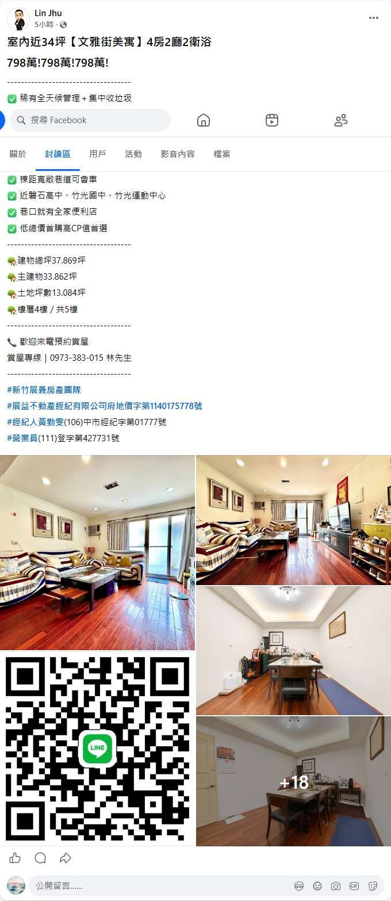 看原始刊登 → 查看貼文原文Lin Jhu 4小時前 室內近34坪【文雅街美寓】4房2廳2衛浴 798萬!798萬!798萬! ------------------------------------ 稀有全天候管理＋集中收垃圾 社區隨到隨停汽機車位 一層兩戶，邊間採光通風良好 格局方正大4房，廚房跟房間一樣大 前後大陽台空間好利用 棟距寬敞巷道可會車 近磐石高中、竹光國中、竹光運動中心 巷口就有全家便利店 低總價首購高CP值首選 ------------------------------------ 建物總坪37.869坪 主建物33.862坪 土地坪數13.084坪 樓層4樓 / 共5樓 ------------------------------------ 歡迎來電預約賞屋 賞屋專線｜0973-383-015 林先生 ------------------------------------ #新竹展義房產團隊 #展益不動產經紀有限公司府地價字第1140175778號 #經紀人黃勤雯(106)中市經紀字第01777號 #營業員(111)登字第427731號 +18 公開留言…… 貼文內有 1 個連結（已檢查）
| 798 萬 | — | 4房2廳2衛 超規格 | 34.0 坪 | 未註明 | 未註明 | — | — 年 | 4F | FB 貼文 0973-383-015 |
| 798 萬 | 27.03萬/坪 | 3房2廳2衛 完全符合 | 29.53 坪 | 1800元/季度 | 無 | 有 | 32 年 | 5F/5F | 仲介 彭曉凡 | |
| 798 萬 | 18.91萬/坪 | 4房2廳2衛 超規格 | 42.19 坪 | 未註明 | 無 | 無 | 45.9 年 | 2F/5F | 有巢氏房屋 | |
| 798 萬 | 33.74萬/坪 | 3房2廳1衛 差一點 | 23.65 坪 | 未註明 | 無 | 無 | 42.3 年 | 2F/5F | 有巢氏房屋 | |
| 798 萬 | 23.15萬/坪 | 2房2廳2衛 差一點 | 34.48 坪 | 1500元/月 | 無 | 有 | 28 年 | 3F/6F | 仲介 廖呈叡 | |
| 798 萬 | 21.07萬/坪 | 4房2廳2衛 超規格 | 37.87 坪 | 1200元/月 | 無 | 無 | — 年 | 4F/5F | 仲介 廖呈叡 | |
| 798 萬 | 21.93萬/坪 | 2房2廳3衛 差一點 | 36.39 坪 | 未註明 | 計算 | — | 42.4 年 | 1-2F/2F | 永慶房屋 | |
| 798 萬 | 40.13萬/坪 | 2房2廳2衛 差一點 | 19.88 坪 | — | 未註明 | 有 | 34 年 | 5F/6F | 仲介 蔡一男 | |
| 798 萬 | 36.94萬/坪 | 2房1廳2衛 不符 | 21.6 坪 | — | 未註明 | 有 | 31 年 | 7F/7F | 仲介 吳浩毓 | |
 | 799 萬 | 50.22萬/坪 | 3房2廳2衛 完全符合 | 15.91 坪 | 2400元/季度 | 無 | 有 | 30 年 | 5F/5F | 仲介 盧俊全 |
| 799 萬 | 34.07萬/坪 | 4房3廳3衛 超規格 | 23.45 坪 | 未註明 | 新竹市東區振興路 | 無 | 44.9 年 | 3F/5F | 永慶房屋 | |
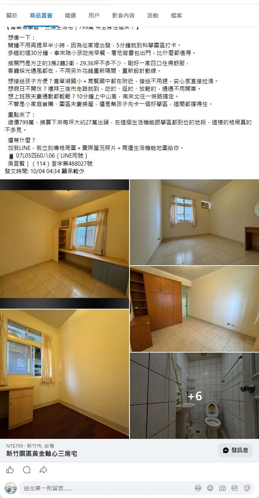 看原始刊登 → 查看貼文原文吳筱梅 勤於回覆 6小時前 【青草湖學區．三房生活宅｜799萬 帶全家住進來！】 想像一下： 鬧鐘不用再提早半小時，因為從家裡出發，5分鐘就到科學園區打卡。 多睡的這30分鐘，拿來陪小孩吃完早餐、看他背書包出門，比什麼都值得。 推開門是方正的3房2廳2衛，29.36坪不多不少，剛好一家四口住得舒服， 客廳採光通風都在，不用另外花錢重新隔間、重新設計動線。 想接送孩子方便？青草湖國小＋育賢國中都在附近，接送不用趕，安心感直接拉滿。 想假日不開伙？禮拜三夜市走路就到，吃的、逛的、放鬆的，通通不用開車。 想上班族夫妻通勤都輕鬆？10分鐘上中山高，南來北往一條路搞定。 不管是小家庭首購、園區夫妻換屋，還是幫孩子先卡一個好學區，這間都撐得住。 重點來了： 總價799萬，換算下來每坪大約27萬出頭，在這個生活機能跟學區都到位的地段，這樣的格局真的不多見。 還等什麼？ 加我LINE，我立刻傳格局圖＋實際屋況照片＋周邊生活機能地圖給你。 0九05四60八06（LINE同號） 吳昱賢｜（114）登字第488027號 發文時間: 10/04 04:34 顯示較少 +6 NT$799 · 新竹市, 台灣 新竹園區黃金軸心三房宅 發訊息 送出第一則留言…… 貼文內有 1 個連結（已檢查）
| 799 萬 | — | 3房—廳2衛 完全符合 | 29.36 坪 | 未註明 | 未註明 | — | — 年 | — | FB 貼文 |
| 800 萬 | 36.36萬/坪 | 3房2廳2衛 完全符合 | 22.0 坪 | 未註明 | 平面式+機械式，已含售金內 | 有 | 24 年 | 5F/6F | — | |
| 800 萬 | 29.35萬/坪 | 4房4廳4衛 超規格 | 27.26 坪 | 未註明 | 未註明 | 有 | 46 年 | 1F/0F | 中信房屋 | |
| 800 萬 | 29.35萬/坪 | 4房—廳4衛 超規格 | 27.26 坪 | 未註明 | 未註明 | 無 | — 年 | 1F/5F | 永慶房屋 | |
 | 800 萬 | 38.72萬/坪 | 3房2廳2衛 完全符合 | 20.66 坪 | 未註明 | 新竹市北區湳中街 | 無 | 46 年 | 1F/4F | 永慶房屋 |
 | 828 萬 | 32.53萬/坪 | 4房2廳2衛 超規格 | 25.45 坪 | 750元/月 | 平面式 | 有 | 31 年 | 1F/5F | 仲介 王先生 |
| 828 萬 | 33.73萬/坪 | 3房2廳2衛 完全符合 | 24.55 坪 | 無 | 無 | 無 | — 年 | 2F/5F | 仲介 孫振耘 | |
 看原始刊登 → 同一物件另有 8 筆刊登（不同仲介）
| 828 萬 | 33.73萬/坪 | 3房2廳1衛 差一點 | 24.55 坪 | 未註明 | 無 | 無 | 0 年 | 2F/5F | 有巢氏房屋 |
 | 838 萬 | 24.31萬/坪 | 3房2廳2衛 完全符合 | 34.47 坪 | 1500元/月 | 無 | 有 | 28 年 | 5F/6F | 仲介 丁皇期 |
 看原始刊登 → 同一物件另有 2 筆刊登（不同仲介）
| 838 萬 | 38.34萬/坪 | 2房1廳2衛 不符 | 21.86 坪 | 4500元/季度 | 機械式，已含售金內 | 有 | 17 年 | 7F/7F | 仲介 黃畇程 |
 | 838 萬 | 29.93萬/坪 | 4房2廳2衛 超規格 | 28.0 坪 | 1500元/月 | 無 | 有 | 31 年 | 2F/5F | 仲介 莊雅茹 |
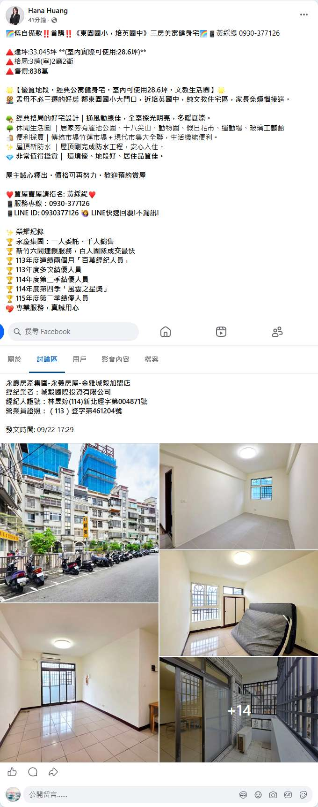 看原始刊登 → 查看貼文原文Hana Huang 低自備款 首購 《東園國小，培英國中》三房美寓健身宅 黃綵緹 0930-377126 建坪:33.045坪 **(室內實際可使用:28.6坪)** 格局:3房(室)2廳2衛 售價:838萬 【優質地段・經典公寓健身宅・室內可使用28.6坪・文教生活圈】 孟母不必三遷的好房 鄰東園國小大門口，近培英國中，純文教住宅區，家長免煩惱接送。 經典格局的好宅設計｜通風動線佳，全室採光明亮，冬暖夏涼。 休閒生活圈 ｜居家旁有麗池公園、十八尖山、動物園、假日花市、運動場、玻璃工藝館 便利採買｜傳統市場竹蓮市場＋現代市集大全聯，生活機能便利。 屋頂新防水 ｜屋頂剛完成防水工程，安心入住。 非常值得鑑賞｜ 環境優、地段好、居住品質佳。 屋主誠心釋出・價格可再努力・歡迎預約賞屋 買屋賣屋請指名: 黃綵緹 服務專線：0930-377126 LINE ID: 0930377126 LINE快速回覆!不漏訊! 榮耀紀錄 永慶集團：一人委託、千人銷售 新竹六間連鎖服務，百人團隊成交最快 113年度連續兩個月「百萬經紀人員」 113年度多次績優人員 114年度第二季績優人員 114年度第四季「風雲之星獎」 115年度第二季績優人員 專業服務，真誠用心 稅務諮詢｜行情分析｜房地相關 搬家清潔｜室內設計｜生活便利 自住、投資皆安心，成交快速又放心 永慶房產集團-永義房屋-金雅城毅加盟店 經紀業者：城毅國際投資有限公司 經紀人證號：林昱婷(114)新北經字第004871號 營業員證照：（113）登字第461204號 發文時間: 09/22 17:29 +14 公開留言…… 貼文內有 1 個連結（已檢查）
| 838 萬 | — | 3房—廳2衛 完全符合 | 33.045 坪 | 未註明 | 未註明 | 無 | — 年 | — | FB 貼文 0930-377126 |
| 838 萬 | 32.17萬/坪 | 4房—廳4衛 超規格 | 26.05 坪 | 600元 | 無 | 有 | 30 年 | 3F/6F | 仲介 王建嘉 | |
| 838 萬 | 27.0萬/坪 | 3房2廳1衛 差一點 | 31.04 坪 | 無 | 無 | 無 | 46 年 | 2F/5F | 仲介 粘瀞尹 | |
| 838 萬 | 22.83萬/坪 | 3房2廳2衛 完全符合 | 36.71 坪 | — | 未註明 | 有 | 31 年 | 2F/5F | 仲介 陳先生 | |
| 838 萬 | 24.92萬/坪 | 3房2廳2衛 完全符合 | 33.63 坪 | — | 未註明 | 有 | 30 年 | 6F/12F | 仲介 陳先生 | |
| 838 萬 | 25.39萬/坪 | 3房2廳2衛 完全符合 | 33.0 坪 | — | 未註明 | — | 44 年 | 整棟/2F | 仲介 胡梅芳 | |
| 848 萬 | 22.06萬/坪 | 3房2廳2衛 完全符合 | 38.44 坪 | 584元/月 | 機 | 有 | 20 年 | 6F/6F | 仲介 翁詠誼 | |
 | 850 萬 | 33.39萬/坪 | 4房2廳2衛 超規格 | 25.46 坪 | 750 | 無 | 有 | 32 年 | 1F/5F | 有巢氏房屋 |
 | 850 萬 | 33.39萬/坪 | 4房2廳3衛 超規格 | 25.46 坪 | 未註明 | ，採取每半年抽籤一次，每 | 有 | 32 年 | 1F/5F | 永慶房屋 |
 | 850 萬 | 22.51萬/坪 | 3房2廳2衛 完全符合 | 37.76 坪 | 未註明 | 未註明 | 有 | 33 年 | 5F/7F | 信義房屋 |
| 858 萬 | 35.4萬/坪 | 2房2廳2衛 差一點 | 24.24 坪 | 1200元/月 | 2坪 | 有 | 30 年 | 7F/7F | 仲介 王秉瑜 | |
 看原始刊登 → 同一物件另有 5 筆刊登（不同仲介）
| 858 萬 | 27.38萬/坪 | 3房2廳2衛 完全符合 | 31.34 坪 | 無 | 無 | 無 | 38 年 | 5F/5F | 仲介 邱靖雯 |
 | 858 萬 | 35.75萬/坪 | 3房2廳2衛 完全符合 | 24.0 坪 | 無 | 無 | 無 | 45 年 | 4F/5F | 仲介 呂秉蓁 |
 | 858 萬 | 54.24萬/坪 | 4房—廳4衛 超規格 | 15.82 坪 | 無 | 無 | 無 | 46 年 | 2F/4F | 仲介 楊佩玟 |
 | 858 萬 | 25.21萬/坪 | 3房2廳2衛 完全符合 | 34.04 坪 | 未註明 | 計算 | 有 | 31.6 年 | 4F/7F | 永慶房屋 |
| 858 萬 | 25.47萬/坪 | 3房2廳2衛 完全符合 | 33.69 坪 | 未註明 | 《六年輕屋齡》 | 有 | 31 年 | 7F/8F | 永慶房屋 | |
| 858 萬 | 33.85萬/坪 | 3房2廳2衛 完全符合 | 25.35 坪 | 未註明 | 未註明 | 無 | 43.6 年 | 3F/5F | 信義房屋 | |
| 858 萬 | 37.0萬/坪 | 2房1廳2衛 不符 | 23.19 坪 | 未註明 | 《有天然氣供應！》 | 有 | 17.9 年 | 7F/7F | 永慶房屋 | |
| 858 萬 | 30.64萬/坪 | 4房2廳3衛 超規格 | 28 坪 | 未註明 | 由管委會統一管理，目前於 | 有 | 32 年 | 2F/5F | 永慶房屋 | |
 看原始刊登 → 同一物件另有 13 筆刊登（不同仲介）
| 868 萬 | 33.5萬/坪 | 3房2廳1衛 差一點 | 25.91 坪 | 未註明 | 無 | 有 | 0 年 | 8F/12F | 有巢氏房屋 |
 看原始刊登 → 同一物件另有 8 筆刊登（不同仲介）
| 868 萬 | 33.5萬/坪 | 3房2廳1衛 差一點 | 25.91 坪 | 未註明 | 無 | 有 | 32.4 年 | 8F/12F | 有巢氏房屋 |
| 868 萬 | 55.64萬/坪 | 3房2廳2衛 完全符合 | 15.6 坪 | 2814元/季度 | 無 | 有 | 3 年 | 4F/7F | 仲介 王秀麗 | |
 看原始刊登 → 同一物件另有 19 筆刊登（不同仲介）
| 868 萬 | 37.72萬/坪 | 3房2廳1衛 差一點 | 23.01 坪 | 865元/月 | 無 | 有 | 35 年 | 2F/7F | 仲介 曾欣怡 |
 看原始刊登 → 同一物件另有 3 筆刊登（不同仲介）
| 868 萬 | 23.64萬/坪 | 3房2廳2衛 完全符合 | 36.71 坪 | 375 | 無 | 有 | 32.3 年 | 2F/5F | 有巢氏房屋 |
| 868 萬 | 38.84萬/坪 | 3房2廳2衛 完全符合 | 22.35 坪 | 未註明 | 無 | 無 | 44 年 | 2F/5F | 仲介 吳怜瑤 | |
| 870 萬 | 30.05萬/坪 | 3房2廳1衛 差一點 | 28.95 坪 | 10000元/年 | 無 | 有 | 33 年 | 2F/8F | 仲介 游舒晴 | |
| 870 萬 | 30.05萬/坪 | 3房2廳2衛 完全符合 | 28.95 坪 | 10000元/年 | 無 | 有 | 32 年 | 2F/8F | 仲介 蕭洛霏 | |
 | 880 萬 | 22.71萬/坪 | 3房2廳2衛 完全符合 | 38.75 坪 | 500元/月 | 無 | 無 | 46 年 | 4F/5F | 仲介 邱先生 |
| 880 萬 | 23.15萬/坪 | 3房2廳2衛 完全符合 | 38.01 坪 | 未註明 | 無 | 無 | 42.2 年 | 4F/5F | 有巢氏房屋 | |
| 880 萬 | 24.73萬/坪 | 3房2廳1衛 差一點 | 35.59 坪 | 未註明 | 無 | 無 | 42.5 年 | 5F/5F | 有巢氏房屋 | |
 | 880 萬 | 27.06萬/坪 | 5房—廳5衛 超規格 | 32.52 坪 | 700元/月 | 無 | 無 | — 年 | 3F/5F | 仲介 張小姐 |
 | 880 萬 | 33.95萬/坪 | 3房2廳2衛 完全符合 | 25.92 坪 | 未註明 | 未註明 | 無 | 42.7 年 | 5F/5F | 信義房屋 |
 | 880 萬 | 34.08萬/坪 | 3房2廳1衛 差一點 | 25.82 坪 | 未註明 | 未註明 | 有 | 32.9 年 | 3F/8F | 信義房屋 |
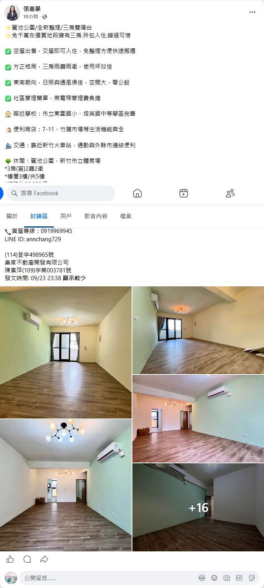 看原始刊登 → 查看貼文原文張嘉晏 9小時前 麗池公園/全新整理/三房雙陽台 免千萬在優質地段擁有三房.拎包入住.錯過可惜 空屋出售，交屋即可入住，免整理方便快速搬遷 方正格局，三房兩廳兩衛，使用坪效佳 東南朝向，日照與通風俱佳，空間大，零公設 社區管理簡單，無電梯管理費負擔 鄰近學校：市立東園國小、培英國中等學區完善 便利商店：7-11，竹蓮市場等生活機能齊全 交通：靠近新竹火車站，通勤與外縣市連結便利 休閒：麗池公園，新竹市立體育場 *3房(室)2廳2衛 *樓層3樓/共5樓 *總建物23.359坪 *室內坪數23.359坪 *土地坪數9.043坪 售價880萬 永慶新竹親水文化加盟店 賞屋專線：0919969945 LINE ID: annchang729 (114)登字498965號 彙家不動產開發有限公司 陳素萍(109)字第003781號 發文時間: 09/23 23:38 顯示較少 +16 公開留言…… 貼文內有 1 個連結（已檢查）
| 880 萬 | — | 3房—廳2衛 完全符合 | 23.359 坪 | 未註明 | 未註明 | — | — 年 | 3F | FB 貼文 0919969945 |
| 886 萬 | 30.14萬/坪 | 3房2廳2衛 完全符合 | 29.4 坪 | 1300元/月 | 無 | 無 | 32 年 | 5F/5F | 屋主 張小姐 | |
 看原始刊登 → 同一物件另有 5 筆刊登（不同仲介）
| 888 萬 | 33.84萬/坪 | 3房2廳2衛 完全符合 | 26.24 坪 | 1400元/月 | 無 | 有 | 4 年 | 7F/7F | 仲介 温小姐 |
| 888 萬 | 30.83萬/坪 | 2房2廳2衛 差一點 | 28.8 坪 | 500元/月 | 平面式，已含售金內 | 有 | 22 年 | 2F/5F | 仲介 王小姐 | |
 | 888 萬 | 35.85萬/坪 | 2房2廳2衛 差一點 | 24.77 坪 | 未註明 | 無 | 有 | 32 年 | 5F/5F | 仲介 張凱亮 |
| 888 萬 | 27.77萬/坪 | 3房2廳1衛 差一點 | 31.98 坪 | 250 | 無 | 無 | 46.5 年 | 4F/5F | 有巢氏房屋 | |
 | 888 萬 | 32.27萬/坪 | 2房2廳2衛 差一點 | 27.52 坪 | 700 | 無 | 有 | 0 年 | 6F/8F | 有巢氏房屋 |
 | 888 萬 | 34.58萬/坪 | 3房2廳2衛 完全符合 | 25.68 坪 | 未註明 | 無 | 無 | 42 年 | 5F/5F | 仲介 劉享倍 |
 看原始刊登 → 同一物件另有 7 筆刊登（不同仲介）
| 888 萬 | 22.84萬/坪 | 4房2廳2衛 超規格 | 38.88 坪 | 無 | 無 | 無 | 37 年 | 5F/5F | 仲介 洪煊惠 |
| 888 萬 | 40.6萬/坪 | 3房2廳1衛 差一點 | 21.87 坪 | 無 | 無 | 無 | — 年 | 4F/5F | 仲介 羅媛萍 | |
| 888 萬 | 22.02萬/坪 | 3房2廳2衛 完全符合 | 40.32 坪 | 3500 | 新竹市香山區宮口街 | 無 | 32 年 | 3F/5F | 永慶房屋 | |
| 888 萬 | 22.84萬/坪 | 5房2廳2衛 超規格 | 38.88 坪 | 未註明 | 未註明 | 無 | 37.6 年 | 5F/5F | 永慶房屋 | |
 | 888 萬 | 24.35萬/坪 | 3房2廳2衛 完全符合 | 36.47 坪 | 未註明 | 有 | — | — 年 | 1F/5F | 永義房屋 |
| 888 萬 | 43.49萬/坪 | 3房2廳2衛 完全符合 | 20.42 坪 | 未註明 | 計算 | — | — 年 | 1-2F/2F | 永慶房屋 | |
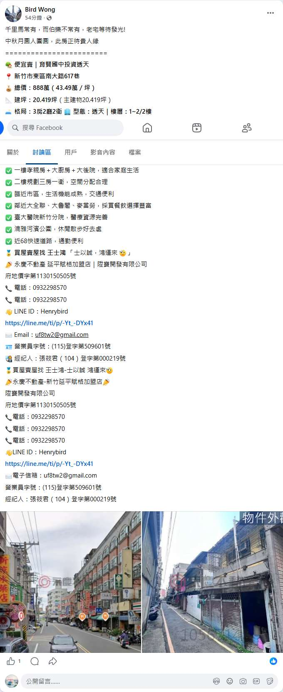 看原始刊登 → 查看貼文原文Bird Wong 54分鐘前 千里馬常有，而伯樂不常有，老宅等待發光! 中秋月圓人團圓，此房正待貴人緣 ======================== 便宜賣｜育賢國中投資透天 新竹市東區南大路617巷 總價：888萬（43.49萬／坪） 建坪：20.419坪（主建物20.419坪） 格局：3房2廳2衛 型態：透天｜樓層：1~2/2樓 屋齡：約39.6年 登記用途：住家用 學區：新竹國小、育賢國中 物件特色 前院空間可改室內車庫，具改造潛力 一樓孝親房＋大廚房＋大後院，適合家庭生活 二樓規劃三房一衛，空間分配合理 臨近市區，生活機能成熟，交通便利 鄰近大全聯、大魯閣、麥當勞，採買餐飲選擇豐富 臺大醫院新竹分院，醫療資源完善 湳雅河濱公園，休閒散步好去處 近68快速道路，通勤便利 買屋賣屋找 王士鴻 「士以誠，鴻運來 」 永慶不動產 延平賦格加盟店｜陞寶開發有限公司 府地價字第1130150505號 電話：0932298570 電話：0932298570 LINE ID：Henrybird Email：uf8tw2@gmail.com 營業員字號：(115)登字第509601號 經紀人：張筱君（104）登字第000219號 買屋賣屋找 王士鴻-士以誠 鴻運來 永慶不動產-新竹延平賦格加盟店 陞寶開發有限公司 府地價字第1130150505號 電話：0932298570 電話：0932298570 電話：0932298570 LINE ID：Henrybird 電子信箱：uf8tw2@gmail.com 營業員字號：(115)登字第509601號 經紀人：張筱君（104）登字第000219號 公開留言…… 貼文內有 2 個連結（已檢查）
| 888 萬 | — | 3房2廳2衛 完全符合 | 20.419 坪 | 未註明 | 未註明 | — | — 年 | 2F | FB 貼文 0932298570 |
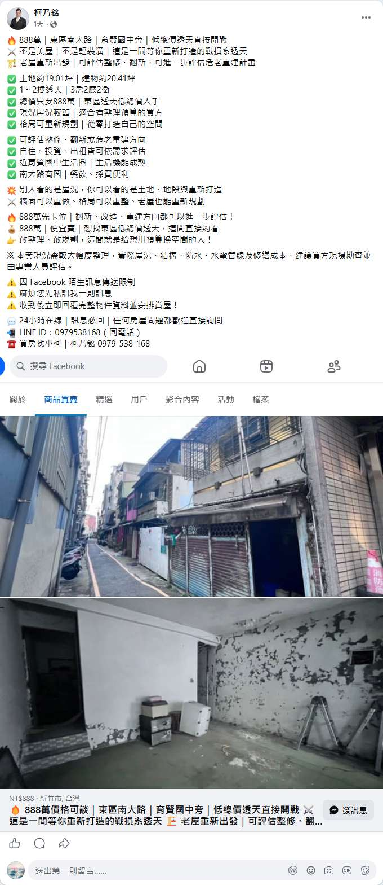 看原始刊登 → 查看貼文原文柯乃銘 1 天前 2026年11月3日 星期二下午7:42 888萬｜東區南大路｜育賢國中旁｜低總價透天直接開戰 不是美屋｜不是輕裝潢｜這是一間等你重新打造的戰損系透天 老屋重新出發｜可評估整修、翻新，可進一步評估危老重建計畫 土地約19.01坪｜建物約20.41坪 1～2樓透天｜3房2廳2衛 總價只要888萬｜東區透天低總價入手 現況屋況較舊｜適合有整理預算的買方 格局可重新規劃｜從零打造自己的空間 可評估整修、翻新或危老重建方向 自住、投資、出租皆可依需求評估 近育賢國中生活圈｜生活機能成熟 南大路商圈｜餐飲、採買便利 別人看的是屋況，你可以看的是土地、地段與重新打造 牆面可以重做、格局可以重整、老屋也能重新規劃 888萬先卡位｜翻新、改造、重建方向都可以進一步評估！ 888萬｜便宜賣｜想找東區低總價透天，這間直接約看 敢整理、敢規劃，這間就是給想用預算換空間的人！ ※ 本案現況需較大幅度整理，實際屋況、結構、防水、水電管線及修繕成本，建議買方現場勘查並由專業人員評估。 因 Facebook 陌生訊息傳送限制 麻煩您先私訊我一則訊息 收到後立即回覆完整物件資料並安排賞屋！ 24小時在線｜訊息必回｜任何房屋問題都歡迎直接詢問 LINE ID：0979538168（同電話） 買房找小柯｜柯乃銘 0979-538-168 永慶不動產｜延平賦格加盟店 陞寶開發有限公司 營業員證號：(111)登字第410078號 經紀人：張筱君（104）登字第000219號 顯示較少 NT$888 · 新竹市, 台灣 🔥 888萬價格可談｜東區南大路｜育賢國中旁｜低總價透天直接開戰 ⚔️ 這是一間等你重新打造的戰損系透天 🏗️ 老屋重新出發｜可評估整修、翻新� 發訊息 送出第一則留言…… 貼文內有 1 個連結（已檢查）
| 888 萬 | — | 3房2廳2衛 完全符合 | 19.01 坪 | 未註明 | 未註明 | — | — 年 | 2F | FB 貼文 0979538168 |
| 888 萬 | 36.3萬/坪 | 2房1廳2衛 不符 | 24.46 坪 | 未註明 | 新竹市北區少年街 | 有 | 30.5 年 | 2F/6F | 永慶房屋 | |
| 888 萬 | 37.0萬/坪 | 3房2廳2衛 完全符合 | 24.0 坪 | — | 未註明 | 無 | 44 年 | 4F/5F | 仲介 謝時純 | |
| 888 萬 | 43.53萬/坪 | 3房1廳3衛 差一點 | 20.4 坪 | — | 未註明 | 有 | 31 年 | 1F/5F | 仲介 謝秀珍 | |
| 888 萬 | 36.32萬/坪 | 2房—廳2衛 差一點 | 24.45 坪 | — | 未註明 | 有 | — 年 | 2F/6F | — | |
 看原始刊登 → 同一物件另有 4 筆刊登（不同仲介）
| 898 萬 | 28.16萬/坪 | 3房2廳2衛 完全符合 | 31.89 坪 | 1600元/月 | 無 | 有 | 32 年 | 2F/7F | 仲介 吳美玲 |
 | 898 萬 | 26.38萬/坪 | 3房2廳2衛 完全符合 | 34.04 坪 | 8596元/季度 | 無 | 有 | 31 年 | 4F/4F | 仲介 刁君豪 |
| 898 萬 | 26.1萬/坪 | 3房2廳2衛 完全符合 | 34.4 坪 | 6280元/季度 | 機 | 有 | 17 年 | 12F/14F | 仲介 丁健弘 | |
| 898 萬 | 28.24萬/坪 | 3房2廳2衛 完全符合 | 31.8 坪 | 1600元/月 | 無 | 有 | 32 年 | 2F/7F | 仲介 高小姐 | |
 看原始刊登 → 同一物件另有 21 筆刊登（不同仲介）
| 898 萬 | 23.7萬/坪 | 4房2廳2衛 超規格 | 37.89 坪 | 無 | 無 | 無 | 45 年 | 5F/5F | 仲介 呂宥萱 |
 看原始刊登 → 同一物件另有 3 筆刊登（不同仲介）
| 898 萬 | 24.57萬/坪 | 2房2廳2衛 差一點 | 36.55 坪 | 1500元/月 | 無 | 有 | 32 年 | 8F/12F | 仲介 戴先生 |
| 898 萬 | 24.57萬/坪 | 3房2廳2衛 完全符合 | 36.55 坪 | 1500元/月 | 無 | 有 | 32 年 | 8F/12F | 仲介 黃信議 | |
 | 898 萬 | 28.88萬/坪 | 3房2廳2衛 完全符合 | 31.1 坪 | 400元 | 無 | 有 | 43 年 | 5F/5F | 仲介 趙泓斌 |
 | 898 萬 | 32.03萬/坪 | 4房2廳3衛 超規格 | 28.04 坪 | 1250 | 無 | 有 | 32 年 | 5F/5F | 有巢氏房屋 |
 看原始刊登 → 同一物件另有 4 筆刊登（不同仲介）
| 898 萬 | 28.88萬/坪 | 5房—廳5衛 超規格 | 31.09 坪 | 3500元/季度 | 無 | 有 | 42 年 | 5F/5F | 仲介 游舒晴 |
 | 898 萬 | 16.9萬/坪 | 4房2廳2衛 超規格 | 53.14 坪 | 350元 | 1 | 無 | 29 年 | 5F/5F | 仲介 吳培聚 |
| 898 萬 | 35.16萬/坪 | 3房2廳1衛 差一點 | 25.54 坪 | 未註明 | 無 | 無 | 44.6 年 | 2F/5F | 有巢氏房屋 | |
 | 898 萬 | 28.93萬/坪 | 3房2廳1衛 差一點 | 31.04 坪 | 未註明 | 無 | 無 | 0 年 | 2F/5F | 有巢氏房屋 |
 | 898 萬 | 32.03萬/坪 | 4房2廳3衛 超規格 | 28.04 坪 | 未註明 | 好租，每半年抽籤一次，租 | 有 | 32 年 | 4F/5F | 永慶房屋 |
 看原始刊登 → 同一物件另有 7 筆刊登（不同仲介）
| 898 萬 | 36.64萬/坪 | 2房2廳2衛 差一點 | 24.51 坪 | 未註明 | 新竹市東區民生路 | 有 | 36.5 年 | 3F/12F | 永慶房屋 |
| 898 萬 | 34.66萬/坪 | 3房2廳1衛 差一點 | 25.91 坪 | 未註明 | 未註明 | 有 | — 年 | 8F/12F | 中信房屋 延平站前加盟店 | |
| 898 萬 | 26.17萬/坪 | 4房2廳2衛 超規格 | 34.31 坪 | 未註明 | 未註明 | 無 | 44.9 年 | 5F/5F | 永慶房屋 | |
| 898 萬 | 36.64萬/坪 | 2房—廳2衛 差一點 | 24.51 坪 | 未註明 | 無 | 有 | 36.5 年 | 3F/12F | 有巢氏房屋 | |
| 898 萬 | 33.73萬/坪 | 2房2廳2衛 差一點 | 26.62 坪 | 未註明 | 未註明 | 無 | 33.3 年 | 5F/5F | 信義房屋 | |
| 898 萬 | 26.77萬/坪 | 4房2廳1衛 差一點 | 33.54 坪 | 未註明 | 未註明 | — | 47.7 年 | 1-3F/3F | 永慶房屋 | |
| 898 萬 | 29.48萬/坪 | 3房2廳2衛 完全符合 | 30.46 坪 | 未註明 | 新竹市香山區頂埔路 | 有 | 31.4 年 | 8F/10F | 永慶房屋 | |
| 898 萬 | 28.93萬/坪 | 3房2廳1衛 差一點 | 31.04 坪 | 未註明 | 新竹市北區成德路 | 無 | 46.3 年 | 2F/5F | 永慶房屋 | |
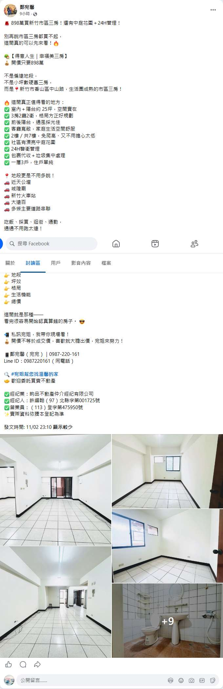 看原始刊登 → 查看貼文原文鄭宛馨 8小時前 2026年11月2日 星期一下午11:11 898萬買新竹市區三房！還有中庭花園＋24H管理！ 別再說市區三房都買不起， 這間真的可以先來看！ 【得意人生｜幸福美三房】 開價只要898萬 不是偏遠地段， 不是小坪數硬塞三房， 而是 新竹市香山區中山路，生活圈成熟的市區三房！ 這間真正值得看的地方： 室內＋陽台約 25坪，空間實在 3房2廳2衛，格局方正好規劃 前後陽台，通風採光佳 客廳寬敞，家庭生活空間舒服 2樓／共7樓，免爬高、又不用擔心太低 社區有漂亮中庭花園 24H警衛管理 包裹代收＋垃圾集中處理 一層3戶，住戶單純 地段更是不用多說！ 近天公壇 城隍廟 新竹火車站 大遠百 多條主要道路串聯 吃飯、採買、逛街、通勤， 通通不用跑太遠！ 31.887坪｜3房2廳2衛｜898萬 很多人買房只看屋齡， 但真正懂買的人，看的其實是： 地段 坪效 格局 生活機能 總價 這間就是那種—— 看完很容易開始認真算錢的房子。 私訊宛姐，我帶你現場看！ 開價不等於成交價，喜歡就大膽出價，宛姐來努力！ 鄭宛馨（宛宛）｜0987-220-161 Line ID：0987220161（同電話） #宛姐幫您找溫馨的家 歡迎委託買賣不動產 經紀業：畇品不動產仲介經紀有限公司 經紀人：許縉翰（97）北縣字第001725號 營業員：（113）登字第475950號 實際資料依謄本登記為準 發文時間: 11/02 23:10 顯示較少 +9 公開留言…… 貼文內有 1 個連結（已檢查）
同一物件另有 2 筆刊登（不同仲介） | 898 萬 | — | 3房—廳2衛 完全符合 | 25.0 坪 | 未註明 | 未註明 | — | — 年 | 2F | FB 貼文 0987-220-161 |
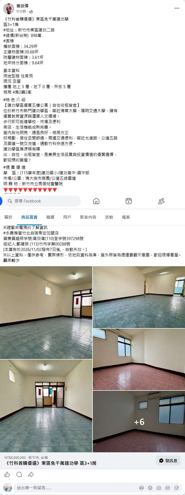 看原始刊登 → 查看貼文原文曾欣偉 14小時前 2026年11月2日 星期一下午4:33 《竹科首購優選》東區免千萬建功學 區3+1房 #地址：新竹市東區建功二路 #總價(新台幣) 898萬 #面積 權狀面積：34.29坪 主建物面積:30.68坪 附屬建物面積：3.61坪 地坪持分面積：9.64坪 基本資料 用途型態 住家用 現況 空屋 樓層 地上 5 層，地下 0 層，所在 5 層 格局 4房2廳2衛 #特 色 介 紹 【建功學區優質五樓公寓｜自住收租皆宜】 位於新竹市熱門建功學區，鄰近清華大學、陽明交通大學，擁有 優質教育資源與濃厚人文環境。 步行即可抵達學校、市場及便利 商店，生活機能成熟完善。 室內採光明亮、通風良好，格局方正 好規劃，居住空間舒適。周邊交通便利，鄰近光復路、公道五路 及國道一號交流道，通勤竹科快速方便。 建功學區房源稀有釋 出，自住、出租皆宜，是兼具生活品質與投資價值的優質選擇， 歡迎預約賞屋！ #週 圍 環 境 學 區：(115學年度)建功國小/建功高中-國中部 市場/公園：清大夜市商圈/公道五綠園道 明 顯 物：新竹市立馬偕兒童醫院 歡迎指名 ＃永義竹北自強宥宏加盟店曾欣偉0972750166 #全國年度風雲經紀人員達成 #單月三百萬經紀人員 #多次單月百萬經紀人員 #這次別再錯過了 ※趕緊來電預約了解資訊 #永義房屋竹北自強宥宏加盟店 營業員證照字號:曾欣偉(110)登字號397298號 經紀人:鄭建榮 (113)竹市字第00288號 [本廣告於2026/11/02發佈7日後,，自動失效。] ※以上資料，僅供參考，實際情形，依地政資料為準，室外照皆為週邊景觀示意圖，歡迎現場看屋~ 顯示較少 +6 NT$8,980,000 · 新竹市, 台灣 《竹科首購優選》東區免千萬建功學 區3+1房 發訊息 送出第一則留言…… 貼文內有 1 個連結（已檢查）
同一物件另有 1 筆刊登（不同仲介）
| 898 萬 | — | 3房—廳2衛 完全符合 | 34.29 坪 | 未註明 | 未註明 | 無 | — 年 | — | FB 貼文 0972750166 |
看原始刊登 → 查看貼文原文楊百祿 23小時前 三民學區優質3房｜自住首選 售價：898萬 格局：3 房 2 廳 2 衛 主+附：28.24坪 * 三民學區，孩子就學便利。 * 屋況佳、免大整理，可直接入住。 * 鄰近巨城百貨，購物、美食、娛樂一次滿足。 * 周邊商家林立，生活機能成熟便利。 * 交通四通八達，通勤輕鬆無負擔。 * 格局方正、採光通風佳，居住舒適 — — — — — — — — — — — — 新竹延平路 成交找百祿 新竹中信團隊 誠心服務 服務專線：0978992676 ＬＩＮＥ：82099918376 長冠不動產仲介經紀有限公司 營業員：113登字第479665號 經紀人：羅信雄99北市經證字第00744號 顯示較少 +5 公開留言…… 貼文內有 1 個連結（已檢查）
| 898 萬 | — | 3房—廳2衛 完全符合 | 28.24 坪 | 未註明 | 未註明 | — | — 年 | — | FB 貼文 0978992676 |
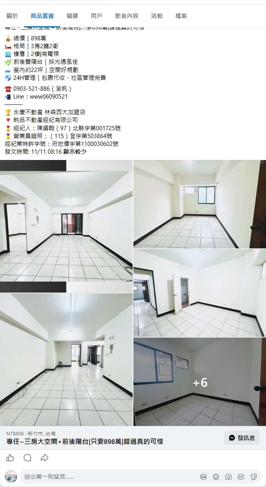 看原始刊登 → 查看貼文原文陳渝帆 6分鐘前 2026年11月11日 星期三上午8:24 專任~三房大空間＋前後陽台|只要898萬|錯過真的可惜 總價｜898萬 格局｜3房2廳2衛 樓層｜2樓|有電梯 前後雙陽台｜採光通風佳 室內約22坪｜空間好規劃 24H管理｜包裹代收、社區管理完善 0903-521-886（渝帆） Line：www06090521 ——— 永慶不動產 林森西大加盟店 畇品不動產經紀有限公司 經紀人：陳縉翰（97）北縣字第001725號 營業員證照：（115）登字第503864號 經紀業特許字號：府地價字第1100030602號 發文時間: 11/11 08:16 顯示較少 +6 NT$898 · 新竹市, 台灣 專任~三房大空間+前後陽台|只要898萬|錯過真的可惜 發訊息 送出第一則留言…… 貼文內有 1 個連結（已檢查）
| 898 萬 | — | 3房—廳2衛 完全符合 | 22.0 坪 | 未註明 | 未註明 | — | — 年 | 2F | FB 貼文 0903-521-886 |
| 898 萬 | 27.98萬/坪 | 3房2廳2衛 完全符合 | 32.1 坪 | 無 | 無 | 無 | 37 年 | 4F/5F | 仲介 蘇先生 | |
| 898 萬 | 28.93萬/坪 | 3房2廳2衛 完全符合 | 31.04 坪 | 未註明 | 未註明 | 有 | — 年 | 6F/12F | 永慶不動產 | |
| 898 萬 | 24.53萬/坪 | 3房2廳2衛 完全符合 | 36.61 坪 | 無 | 無 | 有 | 31 年 | 5F/6F | 仲介 曾于菖 | |
| 899 萬 | 31.05萬/坪 | 3房2廳2衛 完全符合 | 28.95 坪 | 未註明 | 無 | 有 | 32 年 | 2F/8F | 仲介 房仲奶爸 | |
 看原始刊登 → 同一物件另有 6 筆刊登（不同仲介）
| 899 萬 | 37.46萬/坪 | 3房2廳2衛 完全符合 | 24 坪 | 未註明 | 無 | 無 | 0 年 | 3F/5F | 有巢氏房屋 |
 | 919 萬 | 27.77萬/坪 | 3房2廳2衛 完全符合 | 33.09 坪 | 未註明 | 無 | 無 | 35.7 年 | 5F/5F | 有巢氏房屋 |
 | 928 萬 | 25.44萬/坪 | 3房2廳2衛 完全符合 | 36.48 坪 | 1200元/月 | 平面式， | 無 | 32 年 | 1F/5F | 仲介 何宗穎 |
 看原始刊登 → 同一物件另有 6 筆刊登（不同仲介）
| 928 萬 | 57.46萬/坪 | 2房2廳2衛 差一點 | 16.15 坪 | 無 | 無 | 有 | — 年 | 5F/5F | 仲介 鄭文康 |
| 928 萬 | 22.4萬/坪 | 3房2廳2衛 完全符合 | 41.43 坪 | 未註明 | 未註明 | 無 | 42.2 年 | 4F/5F | 永慶房屋 | |
| 928 萬 | 28.41萬/坪 | 4房1廳3衛 差一點 | 32.67 坪 | 未註明 | 未註明 | — | — 年 | 1-2F/2F | 永慶房屋 | |
| 928 萬 | 27.46萬/坪 | 5房—廳5衛 超規格 | 33.79 坪 | 未註明 | 未註明 | 無 | — 年 | 5F/5F | 永慶房屋 | |
| 928 萬 | 24.41萬/坪 | 3房2廳2衛 完全符合 | 38.01 坪 | 未註明 | 可抽籤 | 無 | 42.2 年 | 4F/5F | 永慶房屋 | |
| 928 萬 | 31.74萬/坪 | 3房2廳1衛 差一點 | 29.24 坪 | 未註明 | 《鄰近竹科通勤便利》 | 有 | 30.8 年 | 3F/14F | 永慶房屋 | |
 | 938 萬 | 27.24萬/坪 | 2房2廳2衛 差一點 | 34.44 坪 | 8000元/年 | 無 | 有 | 32 年 | 5F/5F | 仲介 呂秀珍 |
 看原始刊登 → 同一物件另有 3 筆刊登（不同仲介）
| 938 萬 | 27.86萬/坪 | 2房2廳2衛 差一點 | 33.67 坪 | 4000元/季度 | 機械式，已含售金內 | 有 | 31 年 | 8F/8F | 仲介 楊程雄 |
| 938 萬 | 36.2萬/坪 | 3房2廳1衛 差一點 | 25.91 坪 | 未註明 | 無 | 有 | 32.3 年 | 8F/12F | 有巢氏房屋 | |
| 938 萬 | 36.2萬/坪 | 3房2廳1衛 差一點 | 25.91 坪 | 未註明 | 無 | 有 | 32.3 年 | 8F/12F | 有巢氏房屋 | |
 | 938 萬 | 36.87萬/坪 | 2房2廳2衛 差一點 | 25.44 坪 | 未註明 | 無 | 有 | 12.6 年 | 2F/5F | 有巢氏房屋 |
 | 938 萬 | 37.24萬/坪 | 2房2廳2衛 差一點 | 25.19 坪 | 未註明 | 3.890坪) | 有 | 12.6 年 | 5F/5F | 永慶房屋 |
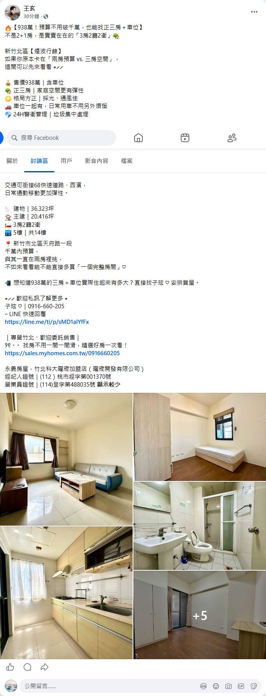 看原始刊登 → 查看貼文原文王玄 30分鐘前 【938萬！預算不用破千萬，也能找正三房＋車位】 不是2+1房，是實實在在的「3房2廳2衛」 新竹北區【煙波行館】 如果你原本卡在「兩房預算 vs. 三房空間」， 這間可以先來看看 ⋆⸝⸝ 售價938萬｜含車位 正三房｜家庭空間更有彈性 格局方正｜採光、通風佳 車位一起有，日常用車不用另外煩惱 24H警衛管理｜垃圾集中處理 而且社區公設很完整 ♡ 季節開放游泳池 健身房 閱覽室 兒童遊戲區 韻律教室＋宴會廳 交通可銜接68快速道路、西濱， 日常通勤移動更加彈性。 建物｜36.323坪 主建｜20.416坪 3房2廳2衛 5樓｜共14樓 新竹市北區天府路一段 千萬內預算， 與其一直在兩房裡挑， 不如來看看能不能直接多買「一個完整房間」♡ 想知道938萬的三房＋車位實際住起來有多大？直接找子玹 ♡ 安排賞屋。 ⋆⸝⸝ 歡迎私訊了解更多 ⋆ 子玹 ♡｜0916-660-205 ⑅ LINE 快速回覆 ｜專營竹北・歡迎委託銷售｜ ୨୧ ⠂⠂ 找房不用一間一間滑，精選好房一次看！ 永義房屋－竹北科大曜宬加盟店（曜宬開發有限公司） 經紀人證號｜(112）桃市經字第001370號 營業員證號｜(114)登字第488035號 顯示較少 +5 公開留言…… 貼文內有 3 個連結（已檢查）
| 938 萬 | — | 3房—廳2衛 完全符合 | 36.323 坪 | 未註明 | 有 | — | — 年 | 5F | FB 貼文 0916-660-205 |
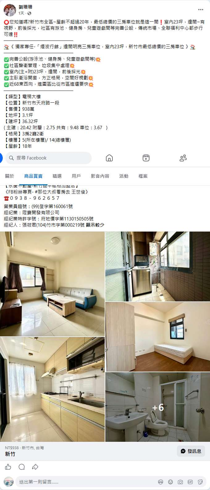 看原始刊登 → 查看貼文原文劉珊珊 您知道嗎?新竹市全區~屋齡不超過20年，最低總價的三房車位就是這一間 室內23坪，邊間~有視野，前後採光，社區有游池、健身房、兒童遊戲間等完善公設，傳統市場、全聯福利中心都步行可達 ——————————————— 《 獨家專任-「煙波行館」邊間明亮三房車位，室內23坪，新竹市最低總價的三房車位 》 ——————————————— 完善公設(游泳池、健身房、兒童遊戲間等) 社區警衛管理、垃圾集中處理 室內(主+附)23坪，邊間，前後採光 主臥衛浴開窗，方正格局，空間好規劃 近68東西向，進園區比從市區進還要快 ——————————————— 【類型】電梯大樓 【位置】新竹市天府路一段 【售價】938萬 【地坪】3.1坪 【建坪】36.32坪 ( 主建：20.42 附屬：2.75 共有：9.48 車位：3.67 ) 【格局】3房2廳2衛 【樓層】5(所在樓層)/ 14(總樓層) 【屋齡】18年 【車位】坡道機械式 ——————————————— 因受FB主動傳訊數量限制，請直接私訊我 或 Line (ID：d5500e1y)詢問 立馬給您完整資訊不隱藏 【永慶不動產-新竹延平賦格加盟店】 《FB粉絲專頁- #那位大叔看房去 王世俊》 ０９３８－９６２６５７ 營業員證號：(99)登字第160061號 經紀業：陞寶開發有限公司 經紀業特許字號：府地價字第1130150505號 經紀人：張筱君(104)竹市字第000219號 顯示較少 +6 NT$938 · 新竹市, 台灣 新竹 發訊息 送出第一則留言…… 貼文內有 1 個連結（已檢查）
| 938 萬 | — | 3房—廳2衛 完全符合 | 23.0 坪 | 未註明 | 未註明 | 有 | — 年 | — | FB 貼文 0938-962657 |
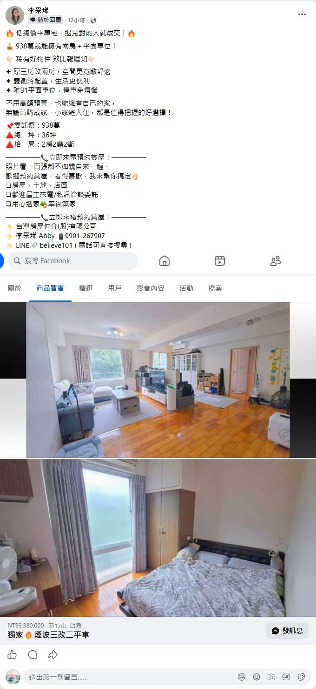 看原始刊登 → 查看貼文原文李采琋 勤於回覆 11小時前 低總價平車宅，遇見對的人就成交！ 938萬就能擁有兩房＋平面車位！ 琋有好物件 欸比報哩知 ✦ 原三房改兩房，空間更寬敞舒適 ✦ 雙衛浴配置，生活更便利 ✦ 附B1平面車位，停車免煩惱 不用高額預算，也能擁有自己的家， 無論首購成家、小家庭入住，都是值得把握的好選擇！ 委託價：938萬 總 坪：36坪 格 局：2房2廳2衛 ————— 立即來電預約賞屋！————— 照片看一百張都不如親自來一趟。 歡迎預約賞屋，看得喜歡，我來幫你搞定 ❏房屋、土地、店面 ❏歡迎屋主來電/私訊洽談委託 ❏用心選家 幸福築家 ————— 立即來電預約賞屋！————— 台灣房屋仲介(股)有限公司 李采琋 Abby 𝟢𝟫𝟢𝟣-𝟤𝟨𝟩𝟫𝟢𝟩 𝖫𝖨𝖭𝖤 believe101 ( 電話可直接搜尋 ) 經紀人證號：(109)苗縣地登字第00006號 營業員證號：(114)登字第𝟦𝟪𝟧𝟤𝟪𝟢號 此貼文僅限7日內有效 發文時間: 10/30 20:01 顯示較少 NT$9,380,000 · 新竹市, 台灣 獨家🔥煙波三改二平車 發訊息 送出第一則留言…… 貼文內有 1 個連結（已檢查）
| 938 萬 | — | 2房—廳2衛 差一點 | 36.0 坪 | 未註明 | 有 | — | — 年 | — | FB 貼文 0901-267907 |
| 938 萬 | 25.21萬/坪 | 3房2廳2衛 完全符合 | 37.2 坪 | 1200元/月 | 無 | 有 | 32 年 | 6F/7F | 仲介 蔡小姐 | |
| 938 萬 | 37.95萬/坪 | 2房2廳185衛 差一點 | 24.72 坪 | — | 未註明 | 有 | 29 年 | 5F/16F | 仲介 蕭小姐 | |
| 948 萬 | 36.57萬/坪 | 5房—廳5衛 超規格 | 25.92 坪 | 未註明 | 無 | 無 | 45 年 | 3F/4F | 仲介 鄧月華 | |
| 948 萬 | 38.4萬/坪 | 2房1廳2衛 不符 | 24.69 坪 | 未註明 | 有 | 有 | 17.9 年 | 4F/7F | 信義房屋 | |
| 948 萬 | 27.55萬/坪 | 3房2廳2衛 完全符合 | 34.41 坪 | — | 未註明 | 有 | 18 年 | 12F/14F | 仲介 劉思潔 | |
 看原始刊登 → 同一物件另有 8 筆刊登（不同仲介）
| 950 萬 | 23.35萬/坪 | 3房2廳2衛 完全符合 | 40.69 坪 | 1300元/月 | 機 | 有 | 30 年 | 7F/10F | 仲介 莊先生 |
 | 950 萬 | 29.36萬/坪 | 3房2廳2衛 完全符合 | 32.36 坪 | 1000元/月 | 機械式，已含售金內 | 有 | 33 年 | 5F/5F | 仲介 林秀惠 |
 | 950 萬 | 27.1萬/坪 | 3房2廳2衛 完全符合 | 35.05 坪 | 未註明 | 無 | 有 | 31 年 | 6F/6F | 仲介 杜先生 |
 看原始刊登 → 同一物件另有 5 筆刊登（不同仲介）
| 950 萬 | 25.91萬/坪 | 3房2廳2衛 完全符合 | 36.67 坪 | 1500元/季度 | 機械式 | 有 | 31 年 | 2F/10F | 仲介 郭浩群 |
| 950 萬 | 23.35萬/坪 | 2房2廳2衛 差一點 | 40.69 坪 | 1300元/月 | 平 | 有 | 30 年 | 7F/10F | 仲介 劉宸菲 | |
 | 950 萬 | 37.23萬/坪 | 3房2廳2衛 完全符合 | 25.52 坪 | 未註明 | 無 | 無 | 45 年 | 4F/5F | 仲介 彭立宇 |
| 950 萬 | 37.17萬/坪 | 6房2廳3衛 超規格 | 25.56 坪 | 未註明 | 無 | — | 49.3 年 | 1F/1F | 有巢氏房屋 | |
| 950 萬 | 21.86萬/坪 | 3房2廳2衛 完全符合 | 43.45 坪 | 未註明 | 新竹市北區延平路三段 | 有 | 32 年 | 2F/7F | 永慶房屋 | |
 | 950 萬 | 24.52萬/坪 | 3房2廳2衛 完全符合 | 38.75 坪 | 未註明 | 未註明 | 無 | 46.5 年 | 4F/5F | 信義房屋 |
| 950 萬 | 30.78萬/坪 | 3房2廳2衛 完全符合 | 30.86 坪 | 300 | 坪數 | 有 | — 年 | 1F/11F | 住商不動產 | |
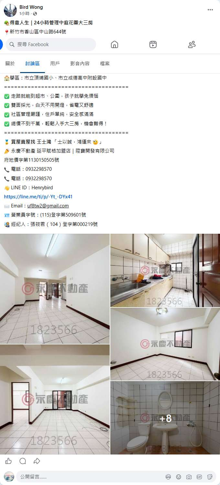 看原始刊登 → 查看貼文原文Bird Wong 大約 1 小時前 得意人生｜24小時管理中庭花園大三房 新竹市香山區中山路644號 總價：950萬（29.79萬／坪） 建坪：31.887坪｜主建：22.385坪｜土地：5.797坪 格局：3房2廳2衛 樓層：2樓／共7樓 屋齡：32.8年 用途：住宅／華廈 學區：市立頂埔國小、市立成德高中附設國中 ===================================== 走路就能到超市、公園，孩子就學免煩惱 雙面採光，白天不用開燈，省電又舒適 社區管理嚴謹，住戶單純，安全感滿滿 總價不到千萬，輕鬆入手大三房，機會難得！ ===================================== 買屋賣屋找 王士鴻 「士以誠，鴻運來 」 永慶不動產 延平賦格加盟店｜陞寶開發有限公司 府地價字第1130150505號 電話：0932298570 電話：0932298570 LINE ID：Henrybird Email：uf8tw2@gmail.com 營業員字號：(115)登字第509601號 經紀人：張筱君（104）登字第000219號 +8 公開留言…… 貼文內有 2 個連結（已檢查）
同一物件另有 1 筆刊登（不同仲介） | 950 萬 | — | 3房—廳2衛 完全符合 | 31.887 坪 | 未註明 | 未註明 | 有 | — 年 | 2F | FB 貼文 0932298570 |
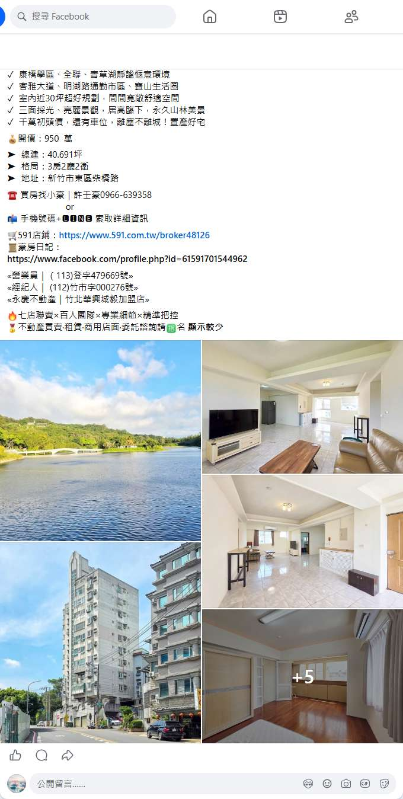 看原始刊登 → 查看貼文原文許壬豪 2分鐘前 免千萬有車位！青草湖畔 15分鐘進園區 超大三房景觀戶 低總價，新成屋沒有的大坪數 ✓ 康橋學區、全聯、青草湖靜謐愜意環境 ✓ 客雅大道、明湖路通勤市區、寶山生活圈 ✓ 室內近30坪超好規劃，間間寬敞舒適空間 ✓ 三面採光、亮麗景觀，居高臨下，永久山林美景 ✓ 千萬初頭價，還有車位，離塵不離城！置產好宅 開價：950 萬 ➤ 總建：40.691坪 ➤ 格局：3房2廳2衛 ➤ 地址：新竹市東區柴橋路 買房找小豪｜許壬豪0966-639358 or 手機號碼+🅻🅸🅽🅴 索取詳細資訊 591店鋪： 豪房日記： «營業員｜（113)登字479669號» «經紀人｜ (112)竹市字000276號» «永慶不動產｜竹北華興城毅加盟店» 七店聯賣×百人團隊×專業細節×精準把控 不動產買賣·租賃·商用店面·委託諮詢請 名 顯示較少 +5 公開留言…… 貼文內有 3 個連結（已檢查）
| 950 萬 | — | 3房—廳2衛 完全符合 | 30.0 坪 | 未註明 | 有 | — | — 年 | — | FB 貼文 0966-639358 |
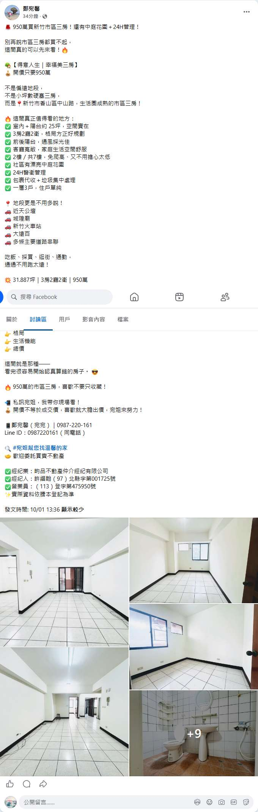 看原始刊登 → 查看貼文原文鄭宛馨 34分鐘前 950萬買新竹市區三房！還有中庭花園＋24H管理！ 別再說市區三房都買不起， 這間真的可以先來看！ 【得意人生｜幸福美三房】 開價只要950萬 不是偏遠地段， 不是小坪數硬塞三房， 而是 新竹市香山區中山路，生活圈成熟的市區三房！ 這間真正值得看的地方： 室內＋陽台約 25坪，空間實在 3房2廳2衛，格局方正好規劃 前後陽台，通風採光佳 客廳寬敞，家庭生活空間舒服 2樓／共7樓，免爬高、又不用擔心太低 社區有漂亮中庭花園 24H警衛管理 包裹代收＋垃圾集中處理 一層3戶，住戶單純 地段更是不用多說！ 近天公壇 城隍廟 新竹火車站 大遠百 多條主要道路串聯 吃飯、採買、逛街、通勤， 通通不用跑太遠！ 31.887坪｜3房2廳2衛｜950萬 很多人買房只看屋齡， 但真正懂買的人，看的其實是： 地段 坪效 格局 生活機能 總價 這間就是那種—— 看完很容易開始認真算錢的房子。 950萬的市區三房，喜歡不要只收藏！ 私訊宛姐，我帶你現場看！ 開價不等於成交價，喜歡就大膽出價，宛姐來努力！ 鄭宛馨（宛宛）｜0987-220-161 Line ID：0987220161（同電話） #宛姐幫您找溫馨的家 歡迎委託買賣不動產 經紀業：畇品不動產仲介經紀有限公司 經紀人：許縉翰（97）北縣字第001725號 營業員：（113）登字第475950號 實際資料依謄本登記為準 發文時間: 10/01 13:36 顯示較少 +9 公開留言…… 貼文內有 1 個連結（已檢查）
同一物件另有 2 筆刊登（不同仲介） | 950 萬 | — | 3房—廳2衛 完全符合 | 25.0 坪 | 未註明 | 未註明 | — | — 年 | 2F | FB 貼文 0987-220-161 |
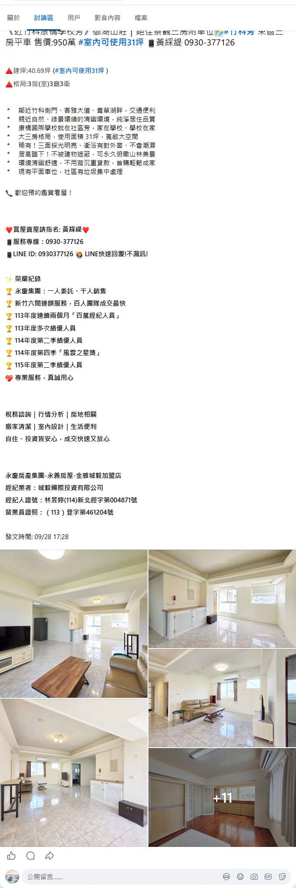 看原始刊登 → 查看貼文原文Hana Huang 42分鐘前 《近竹科康橋學校旁》御湖山莊｜絕佳景觀三房附車位 #竹科旁 東區三房平車 售價:950萬 #室內可使用31坪 黃綵緹 0930-377126 建坪:40.69坪 (#室內可使用31坪 ) 格局:3房(室)3廳3衛 ＊ 鄰近竹科側門、客雅大道、青草湖畔，交通便利 ＊ 親近自然、綠景環繞的清幽環境，純淨居住品質 ＊ 康橋國際學校就在社區旁，家在學校、學校在家 ＊ 大三房格局，使用面積 31坪，寬敞大空間 ＊ 稀有！三面採光明亮、衛浴有對外窗、不會潮濕 ＊ 居高臨下！不被建物遮蔽，可永久俯瞰山林美景 ＊ 環境清幽舒適，不用背沉重貸款，首購輕鬆成家 ＊ 現有平面車位，社區有垃圾集中處理 歡迎預約鑑賞看屋！ 買屋賣屋請指名: 黃綵緹 服務專線：0930-377126 LINE ID: 0930377126 LINE快速回覆!不漏訊! 榮耀紀錄 永慶集團：一人委託、千人銷售 新竹六間連鎖服務，百人團隊成交最快 113年度連續兩個月「百萬經紀人員」 113年度多次績優人員 114年度第二季績優人員 114年度第四季「風雲之星獎」 115年度第二季績優人員 專業服務，真誠用心 稅務諮詢｜行情分析｜房地相關 搬家清潔｜室內設計｜生活便利 自住、投資皆安心，成交快速又放心 永慶房產集團-永義房屋-金雅城毅加盟店 經紀業者：城毅國際投資有限公司 經紀人證號：林昱婷(114)新北經字第004871號 營業員證照：（113）登字第461204號 發文時間: 09/28 17:28 +11 公開留言…… 貼文內有 1 個連結（已檢查）
| 950 萬 | — | 3房—廳3衛 超規格 | 31.0 坪 | 未註明 | 有 | — | — 年 | — | FB 貼文 0930-377126 |
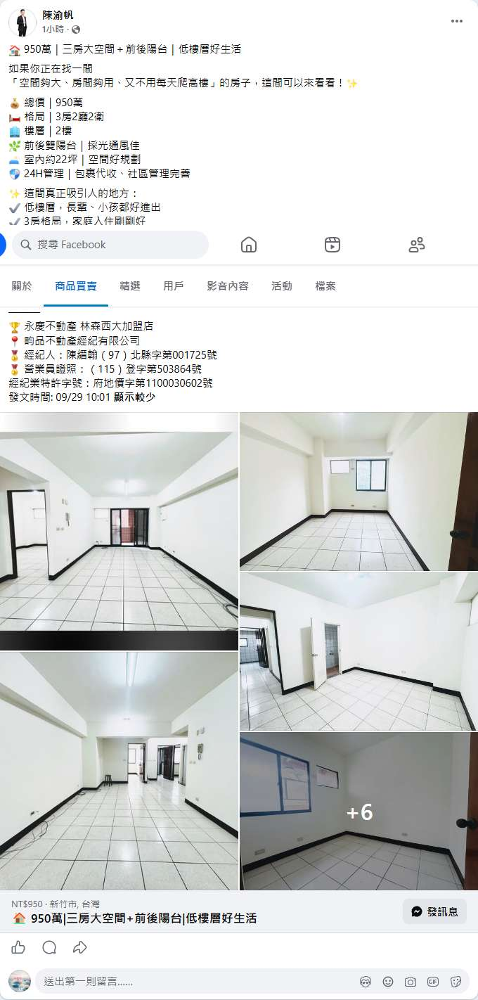 看原始刊登 → 查看貼文原文陳渝帆 大約 1 小時前 950萬｜三房大空間＋前後陽台｜低樓層好生活 如果你正在找一間 「空間夠大、房間夠用、又不用每天爬高樓」的房子，這間可以來看看！ 總價｜950萬 格局｜3房2廳2衛 樓層｜2樓 前後雙陽台｜採光通風佳 室內約22坪｜空間好規劃 24H管理｜包裹代收、社區管理完善 這間真正吸引人的地方： 低樓層，長輩、小孩都好進出 3房格局，家庭入住剛剛好 前後陽台，通風採光更舒服 屋況乾淨，簡單整理即可入住 社區戶數約159戶，管理完善 0903-521-886（渝帆） Line：www06090521 ——— 永慶不動產 林森西大加盟店 畇品不動產經紀有限公司 經紀人：陳縉翰（97）北縣字第001725號 營業員證照：（115）登字第503864號 經紀業特許字號：府地價字第1100030602號 發文時間: 09/29 10:01 顯示較少 +6 NT$950 · 新竹市, 台灣 🏠 950萬|三房大空間+前後陽台|低樓層好生活 發訊息 送出第一則留言…… 貼文內有 1 個連結（已檢查）
| 950 萬 | — | 3房—廳2衛 完全符合 | 22.0 坪 | 未註明 | 未註明 | — | — 年 | 2F | FB 貼文 0903-521-886 |
| 950 萬 | 28.75萬/坪 | 3房2廳2衛 完全符合 | 33.04 坪 | — | 未註明 | 有 | 3 年 | 7F/7F | 仲介 温小姐 | |
 看原始刊登 → 同一物件另有 5 筆刊登（不同仲介）
| 958 萬 | 30.93萬/坪 | 3房2廳2衛 完全符合 | 30.97 坪 | 4000元/季度 | 無 | 有 | 33 年 | 4F/6F | 仲介 鄭文康 |
 看原始刊登 → 同一物件另有 4 筆刊登（不同仲介）
| 958 萬 | 34.21萬/坪 | 3房2廳2衛 完全符合 | 28.0 坪 | 1000元/月 | 無 | 有 | 34 年 | 5F/5F | 仲介 羅先生 |
| 958 萬 | 30.92萬/坪 | 3房2廳3衛 超規格 | 30.98 坪 | 4000元/季度 | 無 | 有 | 33 年 | 4F/6F | 仲介 姜祖浩 | |
 看原始刊登 → 同一物件另有 5 筆刊登（不同仲介）
| 958 萬 | 44.98萬/坪 | 2房2廳2衛 差一點 | 21.3 坪 | 4380元/季度 | 機 | 有 | 28 年 | 8F/10F | 仲介 陳芷晴 |
 看原始刊登 → 同一物件另有 5 筆刊登（不同仲介）
| 958 萬 | 32.05萬/坪 | 2房2廳2衛 差一點 | 29.89 坪 | 1310元/月 | 平面式 | 有 | 33 年 | 4F/6F | 仲介 廖傑銘 |
 看原始刊登 → 同一物件另有 5 筆刊登（不同仲介）
| 958 萬 | 24.53萬/坪 | 3房2廳1衛 差一點 | 39.05 坪 | 2730元/月 | 無 | 有 | 31 年 | 7F/20F | 仲介 許晴涵 |
 | 958 萬 | 31.71萬/坪 | 3房2廳2衛 完全符合 | 30.21 坪 | 未註明 | 無 | 有 | 35 年 | 1F/6F | 仲介 彭凱翎 |
 | 958 萬 | 28.25萬/坪 | 5房—廳5衛 超規格 | 33.91 坪 | 未註明 | 無 | 無 | 44.9 年 | 4F/5F | 有巢氏房屋 |
| 958 萬 | 29.32萬/坪 | 3房2廳2衛 完全符合 | 32.67 坪 | 未註明 | 未註明 | 無 | 46.5 年 | 1F/5F | 信義房屋 | |
| 958 萬 | 29.32萬/坪 | 3房2廳1衛 差一點 | 32.67 坪 | 未註明 | 未註明 | 有 | 46 年 | 1F/0F | 中信房屋 | |
| 958 萬 | 34.21萬/坪 | 3房2廳1衛 差一點 | 28 坪 | 未註明 | 新竹市東區振興路 | 有 | 34.4 年 | 5F/5F | 永慶房屋 | |
 看原始刊登 → 同一物件另有 3 筆刊登（不同仲介）
| 960 萬 | 33.73萬/坪 | 4房—廳4衛 超規格 | 28.46 坪 | 無 | 無 | 無 | 47 年 | 4F/4F | 仲介 林子鈞 |
 | 960 萬 | 46.15萬/坪 | 3房2廳1衛 差一點 | 20.8 坪 | 未註明 | 無 | 無 | 44.4 年 | 2F/5F | 有巢氏房屋 |
 | 960 萬 | 31.33萬/坪 | 3房2廳2衛 完全符合 | 30.64 坪 | 未註明 | 未註明 | 有 | 18.5 年 | 13F/14F | 信義房屋 |
 看原始刊登 → 同一物件另有 5 筆刊登（不同仲介）
| 968 萬 | 30.45萬/坪 | 3房2廳2衛 完全符合 | 31.79 坪 | 無 | 無 | 無 | 41 年 | 4F/5F | 仲介 莊富琦 |
 看原始刊登 → 同一物件另有 2 筆刊登（不同仲介）
| 968 萬 | 30.38萬/坪 | 3房2廳2衛 完全符合 | 31.86 坪 | 1000 | 有 | 有 | 31.1 年 | 7F/11F | 有巢氏房屋 |
 | 968 萬 | 38.65萬/坪 | 3房2廳2衛 完全符合 | 25.05 坪 | 無 | 無 | 無 | 47 年 | 2F/4F | 仲介 廖呈叡 |
| 968 萬 | 47.78萬/坪 | 3房2廳3衛 超規格 | 20.26 坪 | 無 | 無 | — | — 年 | 整棟/3F | 仲介 朱立人 | |
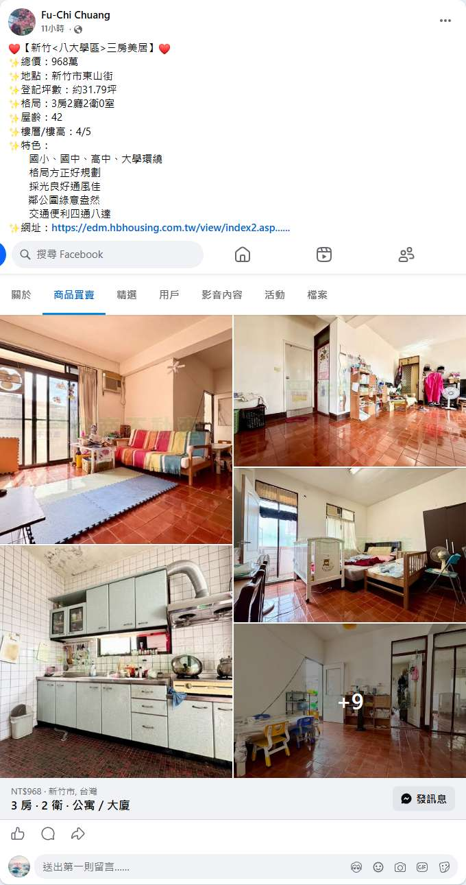 看原始刊登 → 查看貼文原文Fu-Chi Chuang 11小時前 【新竹<八大學區>三房美居】 總價：968萬 地點：新竹市東山街 登記坪數：約31.79坪 格局：3房2廳2衛0室 屋齡：42 樓層/樓高：4/5 特色： 國小、國中、高中、大學環繞 格局方正好規劃 採光良好通風佳 鄰公園綠意盎然 交通便利四通八達 網址： 銷售編號：FS224203 住商不動產 台南安中加盟店 裕群房地產開發有限公司 莊富琦 0919052095 (可直接加Line) 不動產營業員證號：(105)登字第310742號 經紀人：黃永全 證號：(91)高市字第00088號 顯示較少 +9 NT$968 · 新竹市, 台灣 3 房 · 2 衛 · 公寓／大廈 發訊息 送出第一則留言…… 貼文內有 2 個連結（已檢查）
| 968 萬 | — | 3房—廳2衛 完全符合 | 31.79 坪 | 未註明 | 未註明 | 無 | — 年 | 42F | FB 貼文 0919052095 |
 看原始刊登 → 同一物件另有 6 筆刊登（不同仲介）
| 980 萬 | 26.77萬/坪 | 3房2廳2衛 完全符合 | 36.61 坪 | 無 | 無 | 有 | 31 年 | 3F/6F | 仲介 張芷婕 |
 看原始刊登 → 同一物件另有 7 筆刊登（不同仲介）
| 980 萬 | 27.92萬/坪 | 3房2廳2衛 完全符合 | 35.1 坪 | 6240元/季度 | 4.536坪，機械式，已含售金內 | 有 | 18 年 | 12F/14F | 仲介 郭佳儒 |
 看原始刊登 → 同一物件另有 5 筆刊登（不同仲介）
| 980 萬 | 32.58萬/坪 | 3房2廳1衛 差一點 | 30.08 坪 | 1400元/月 | 無 | 有 | 32 年 | 7F/12F | 仲介 值先生 |
| 980 萬 | 32.58萬/坪 | 3房2廳2衛 完全符合 | 30.08 坪 | 1400元/月 | 無 | 有 | 32 年 | 7F/12F | 仲介 林莉華 | |
 | 980 萬 | 36.3萬/坪 | 3房2廳1衛 差一點 | 27.0 坪 | 無 | 無 | 無 | 40 年 | 2F/5F | 仲介 陳添旺 |
| 980 萬 | 26.77萬/坪 | 3房2廳2衛 完全符合 | 36.61 坪 | 未註明 | 計算 | 有 | 32 年 | 4F/6F | 永慶房屋 | |
| 980 萬 | 27.03萬/坪 | 3房2廳2衛 完全符合 | 36.25 坪 | 未註明 | 計算 | 有 | 32 年 | 2F/6F | 永慶房屋 | |
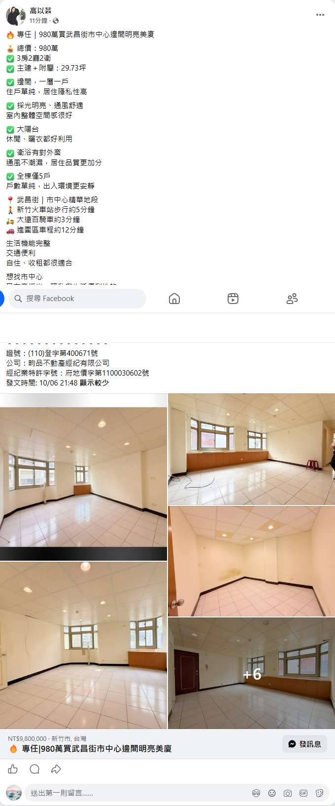 看原始刊登 → 查看貼文原文高以芸 11分鐘前 專任｜980萬買武昌街市中心邊間明亮美廈 總價：980萬 3房2廳2衛 主建＋附屬：29.73坪 邊間，一層一戶 住戶單純，居住隱私性高 採光明亮、通風舒適 室內整體空間感很好 大陽台 休閒、曬衣都好利用 衛浴有對外窗 通風不潮濕，居住品質更加分 全棟僅5戶 戶數單純，出入環境更安靜 武昌街｜市中心精華地段 新竹火車站步行約5分鐘 大遠百騎車約3分鐘 進園區車程約12分鐘 生活機能完整 交通便利 自住、收租都很適合 想找市中心 又在意採光、隱私與生活便利性的 這間真的可以安排看看 歡迎來電／以芸為您服務 0927-830623 LINE ID：a50096 －－－－－－－－－－－－－－ 證號：(110)登字第400671號 公司：畇品不動產經紀有限公司 經紀業特許字號：府地價字第1100030602號 發文時間: 10/06 21:48 顯示較少 +6 NT$9,800,000 · 新竹市, 台灣 🔥 專任|980萬買武昌街市中心邊間明亮美廈 發訊息 送出第一則留言…… 貼文內有 1 個連結（已檢查）
同一物件另有 1 筆刊登（不同仲介）
| 980 萬 | — | 3房2廳2衛 完全符合 | 29.73 坪 | 未註明 | 未註明 | — | — 年 | — | FB 貼文 0927-830623 |
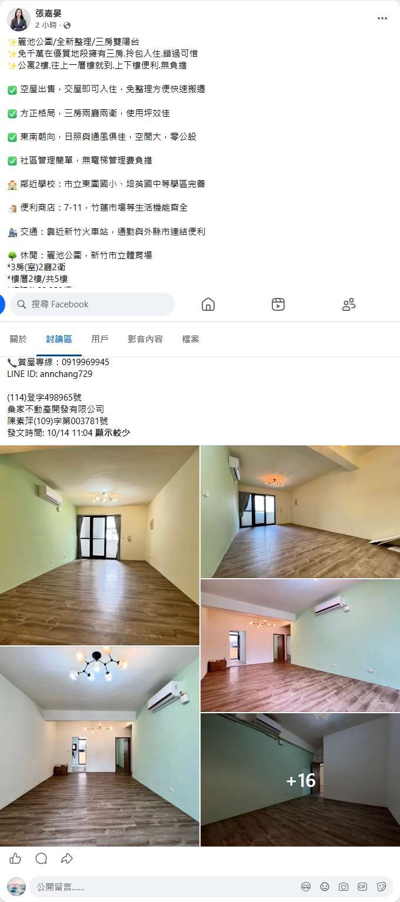 看原始刊登 → 查看貼文原文張嘉晏 41分鐘前 n͏ e͏ d͏ S͏ r͏ p͏ s͏ o͏ t͏ o͏ h͏ c͏ u͏ 4͏ 3͏ t͏ 4͏ 分͏ 7͏ f͏ i͏ g͏ 8͏ 7͏ t͏ f͏ c͏ m͏ 6͏ c͏ 6͏ l͏ 1͏ 4͏ l͏ 4͏ t͏ 5͏ 3͏ l͏ 9͏ u͏ u͏ a͏ 7͏ 3͏ ͏ g͏ 0͏ i͏ l͏ i͏ a͏ l͏ 1͏ 鐘͏ c͏ 8͏ 1͏ 8͏ 麗池公園/全新整理/三房雙陽台 免千萬在優質地段擁有三房.拎包入住.錯過可惜 公寓2樓.往上一層樓就到.上下樓便利.無負擔 空屋出售，交屋即可入住，免整理方便快速搬遷 方正格局，三房兩廳兩衛，使用坪效佳 東南朝向，日照與通風俱佳，空間大，零公設 社區管理簡單，無電梯管理費負擔 鄰近學校：市立東園國小、培英國中等學區完善 便利商店：7-11，竹蓮市場等生活機能齊全 交通：靠近新竹火車站，通勤與外縣市連結便利 休閒：麗池公園，新竹市立體育場 *3房(室)2廳2衛 *樓層2樓/共5樓 *總建物23.359坪 *室內坪數23.359坪 *土地坪數9.043坪 售價980萬 永慶新竹親水文化加盟店 賞屋專線：0919969945 LINE ID: annchang729 (114)登字498965號 彙家不動產開發有限公司 陳素萍(109)字第003781號 發文時間: 10/14 11:04 顯示較少 +16 公開留言…… 貼文內有 1 個連結（已檢查）
| 980 萬 | — | 3房—廳2衛 完全符合 | 23.359 坪 | 未註明 | 未註明 | 無 | — 年 | 2F | FB 貼文 0919969945 |
| 980 萬 | 28.48萬/坪 | 3房2廳2衛 完全符合 | 34.41 坪 | 700 | 無 | 無 | 35.4 年 | 1F/5F | 有巢氏房屋 | |
| 980 萬 | 25.92萬/坪 | 3房2廳2衛 完全符合 | 37.81 坪 | 未註明 | 有 | 有 | 30 年 | 6F/6F | 信義房屋 | |
| 980 萬 | 32.47萬/坪 | 4房2廳1衛 差一點 | 30.18 坪 | 未註明 | 未註明 | — | — 年 | 1-2F/2F | 永慶房屋 | |
| 980 萬 | 32.48萬/坪 | 4房2廳2衛 超規格 | 30.17 坪 | — | 未註明 | — | — 年 | 1F~2F/2F | 仲介 曾子瑜 | |
 看原始刊登 → 同一物件另有 5 筆刊登（不同仲介）
| 988 萬 | 33.1萬/坪 | 3房2廳2衛 完全符合 | 29.85 坪 | 2000元/月 | 無 | 有 | 29 年 | 11F/13F | 仲介 林小姐 |
| 988 萬 | 31.01萬/坪 | 3房2廳2衛 完全符合 | 31.86 坪 | 未註明 | 1. | 有 | 31 年 | 7F/11F | 仲介 朱鑫可 | |
 看原始刊登 → 同一物件另有 2 筆刊登（不同仲介）
| 988 萬 | 43.72萬/坪 | 3房2廳1衛 差一點 | 22.6 坪 | 無 | 無 | 無 | 47 年 | 3F/4F | 仲介 凃于淵 |
 | 988 萬 | 40.31萬/坪 | 2房1廳2衛 不符 | 24.51 坪 | 1600 | 無 | 有 | 36.5 年 | 3F/12F | 有巢氏房屋 |
 看原始刊登 → 同一物件另有 3 筆刊登（不同仲介）
| 988 萬 | 27.68萬/坪 | 3房2廳2衛 完全符合 | 35.69 坪 | 未註明 | 無 | 有 | 32 年 | 7F/7F | 仲介 林翊筑 |
 看原始刊登 → 同一物件另有 16 筆刊登（不同仲介）
| 988 萬 | 32.85萬/坪 | 3房2廳2衛 完全符合 | 30.08 坪 | 未註明 | 無 | 無 | 39.3 年 | 3F/5F | 有巢氏房屋 |
| 988 萬 | 35.53萬/坪 | 3房2廳2衛 完全符合 | 27.81 坪 | 3000 | 無 | 有 | 32.8 年 | 10F/12F | 有巢氏房屋 | |
 | 988 萬 | 26.14萬/坪 | 3房2廳2衛 完全符合 | 37.79 坪 | 未註明 | 有 | 有 | 32 年 | 3F/5F | 信義房屋 |
 | 988 萬 | 27.47萬/坪 | 4房2廳2衛 超規格 | 35.97 坪 | 未註明 | 無 | 無 | 43.8 年 | 5F/5F | 有巢氏房屋 |
 看原始刊登 → 同一物件另有 20 筆刊登（不同仲介）
| 988 萬 | 36.57萬/坪 | 3房2廳1衛 差一點 | 27.02 坪 | 未註明 | 無 | 無 | 43 年 | 2F/5F | 有巢氏房屋 |
| 988 萬 | 30.76萬/坪 | 3房2廳2衛 完全符合 | 32.12 坪 | 未註明 | 新竹市北區金竹路 | 無 | 38.3 年 | 5F/5F | 永慶房屋 | |
 看原始刊登 → 同一物件另有 2 筆刊登（不同仲介）
| 988 萬 | 36.62萬/坪 | 5房—廳5衛 超規格 | 26.98 坪 | 208 | 無 | 無 | 47.2 年 | 2F/5F | 有巢氏房屋 |
| 988 萬 | 49.18萬/坪 | 3房2廳1衛 差一點 | 20.09 坪 | 未註明 | 新竹市東區經國路一段 | 無 | — 年 | 3F/4F | 永慶房屋 | |
| 988 萬 | 29.83萬/坪 | 7房3廳2衛 超規格 | 33.12 坪 | 未註明 | 未註明 | 無 | 48.6 年 | 1-2F/2F | 信義房屋 | |
 | 988 萬 | 36.87萬/坪 | 3房2廳2衛 完全符合 | 26.8 坪 | 未註明 | 未註明 | — | — 年 | 3F/5F | 永慶不動產 |
 | 988 萬 | 40.86萬/坪 | 2房2廳2衛 差一點 | 24.18 坪 | 未註明 | 未註明 | 有 | — 年 | 3F/11F | 永慶不動產 |
| 988 萬 | 32.85萬/坪 | 3房2廳1衛 差一點 | 30.08 坪 | 無 | 坪數 | 無 | — 年 | 3F/5F | 住商不動產 | |
| 988 萬 | 27.47萬/坪 | 4房2廳2衛 超規格 | 35.97 坪 | 未註明 | 新竹市東區明湖路 | 無 | 43.8 年 | 5F/5F | 永慶房屋 | |
| 988 萬 | 24.11萬/坪 | 5房1廳5衛 差一點 | 40.98 坪 | 未註明 | ！ | 無 | 36.5 年 | 4F/5F | 永慶房屋 | |
| 988 萬 | 53.84萬/坪 | 2房—廳2衛 差一點 | 18.35 坪 | 未註明 | 新竹市北區經國路二段 | 有 | 11.5 年 | 5F/7F | 永慶房屋 | |
| 988 萬 | 43.72萬/坪 | 3房2廳1衛 差一點 | 22.6 坪 | 未註明 | 新竹市東區明湖路 | 無 | — 年 | 4F/4F | 永慶房屋 | |
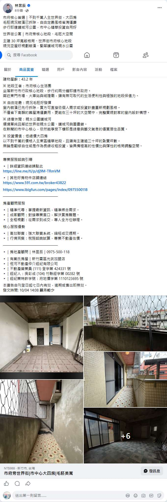 看原始刊登 → 查看貼文原文林昱辰 8分鐘前 市府核心首選｜不到千萬入主世界街，大四房 毛胚現況裝潢已拆除，自由定義風格省清運費 步行即達護城河公園，市中心精華投資自用好 世界街公寓｜市府旁核心地段・毛胚大空間 主建 30 坪寬敞格局・世界街市府核心地段 現況空屋好規劃裝潢・緊鄰護城河親水公園 新竹市東區 世界街 開價｜988 萬 建物總坪：35.97 坪 主建坪數：30.317 坪 格局配置：4 房 2 廳 2 衛 建物屋齡：43.2 年 ※ 地段王者：市府核心生活圈 坐落新竹市行政核心地段，步行約兩分鐘即達市政府。 鄰近東門市場、火車站與城隍廟，擁有無可取代的生活便利性與極強的地段保值力。 ※ 自由定義：現況毛胚好發揮 室內裝潢已先行拆除，買方可直接依個人需求或投資計畫重新規劃風格。 不僅省下高額的舊屋清運費用，更能在三十坪的大空間中，完整實現對家的室內設計構想。 ※ 綠意休閒：親水公園護城河 環境單純且鄰近世界街親水公園、護城河與圖書館。 在熱鬧的市中心核心，依然能享受下樓即是綠意與藝文氣息的優質居住品質。 ※ 投資價值：低總價大四房 以不到千萬的價格入主東區精華地段，且擁有主建逾三十坪的紮實坪數。 無論是翻修自住或是作為長線收租投資，皆具備極高的性價比與彈性的格局調整空間。 ───────────────────── 專業服務諮詢引導 ▸｜詳細資訊連結請點此 ▸｜其他好房物件店鋪連結 ───────────────────── 房產顧問服務 ▸｜精準代尋：掌握最新資訊，精準媒合需求。 ▸｜成家顧問：對接專業窗口，解決買房難題。 ▸｜全程規劃：從需求到成交，專人全方位辦理。 核心服務優勢 ▸｜高效聯賣：強大聯賣系統，縮短成交週期。 ▸｜行情洞察：稅務諮詢試算，專業不動產估價。 ───────────────────── ▸｜房地產顧問｜林昱辰｜0975-500-118 ▸｜有巢氏房屋｜新竹園區光武加盟店 ▸｜恆河不動產仲介經紀有限公司 ▸｜不動產營業員 (111) 登字第 424331 號 ▸｜經紀人：吳彩成 (104) 竹縣經字第 00282 號 ▸｜經紀業特許字號：府地價字第 1110123695 號 本廣告自刊登日起七日內有效，逾期或售出即無效。 發文時間: 10/04 14:08 顯示較少 +6 NT$988 · 新竹市, 台灣 市府旁世界街|市中心大四房|毛胚美寓 發訊息 送出第一則留言…… 貼文內有 4 個連結（已檢查）
| 988 萬 | — | 4房—廳2衛 超規格 | 30.0 坪 | 未註明 | 未註明 | 無 | — 年 | — | FB 貼文 0975-500-118 |
| 988 萬 | 30.97萬/坪 | 3房2廳3衛 超規格 | 31.9 坪 | 未註明 | 無 | — | 21 年 | 整棟/2F | 仲介 田雅文 | |
| 988 萬 | 40.31萬/坪 | 2房—廳2衛 差一點 | 24.51 坪 | 1450 | 無 | 有 | 36.4 年 | 3F/12F | 有巢氏房屋 | |
| 988 萬 | 26.99萬/坪 | 3房2廳1衛 差一點 | 36.6 坪 | 未註明 | 有 | 無 | 33 年 | 1F/5F | 信義房屋 | |
| 988 萬 | 45.18萬/坪 | 3房2廳1衛 差一點 | 21.87 坪 | 未註明 | 《近竹科康橋學校旁》 | 無 | — 年 | 4F/5F | 永慶房屋 | |
| 990 萬 | 20.3萬/坪 | 4房2廳2衛 超規格 | 48.76 坪 | 未註明 | 新竹市東區花園街 | 無 | 46.5 年 | 5F/5F | 永慶房屋 | |
| 990 萬 | 35.37萬/坪 | 3房2廳2衛 完全符合 | 27.99 坪 | 500元/月 | 平面式 | 有 | 31 年 | 3F/5F | 仲介 翁青山 | |
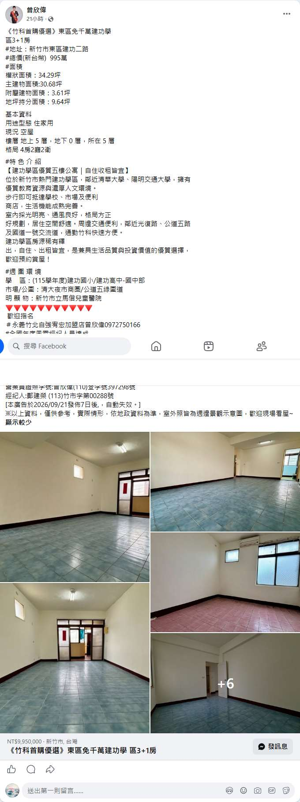 看原始刊登 → 查看貼文原文曾欣偉 《竹科首購優選》東區免千萬建功學 區3+1房 #地址：新竹市東區建功二路 #總價(新台幣) 995萬 #面積 權狀面積：34.29坪 主建物面積:30.68坪 附屬建物面積：3.61坪 地坪持分面積：9.64坪 基本資料 用途型態 住家用 現況 空屋 樓層 地上 5 層，地下 0 層，所在 5 層 格局 4房2廳2衛 #特 色 介 紹 【建功學區優質五樓公寓｜自住收租皆宜】 位於新竹市熱門建功學區，鄰近清華大學、陽明交通大學，擁有 優質教育資源與濃厚人文環境。 步行即可抵達學校、市場及便利 商店，生活機能成熟完善。 室內採光明亮、通風良好，格局方正 好規劃，居住空間舒適。周邊交通便利，鄰近光復路、公道五路 及國道一號交流道，通勤竹科快速方便。 建功學區房源稀有釋 出，自住、出租皆宜，是兼具生活品質與投資價值的優質選擇， 歡迎預約賞屋！ #週 圍 環 境 學 區：(115學年度)建功國小/建功高中-國中部 市場/公園：清大夜市商圈/公道五綠園道 明 顯 物：新竹市立馬偕兒童醫院 歡迎指名 ＃永義竹北自強宥宏加盟店曾欣偉0972750166 #全國年度風雲經紀人員達成 #單月三百萬經紀人員 #多次單月百萬經紀人員 #這次別再錯過了 ※趕緊來電預約了解資訊 #永義房屋竹北自強宥宏加盟店 營業員證照字號:曾欣偉(110)登字號397298號 經紀人:鄭建榮 (113)竹市字第00288號 [本廣告於2026/09/21發佈7日後,，自動失效。] ※以上資料，僅供參考，實際情形，依地政資料為準，室外照皆為週邊景觀示意圖，歡迎現場看屋~ 顯示較少 +6 NT$9,950,000 · 新竹市, 台灣 《竹科首購優選》東區免千萬建功學 區3+1房 發訊息 送出第一則留言…… 貼文內有 1 個連結（已檢查）
| 995 萬 | — | 3房—廳2衛 完全符合 | 34.29 坪 | 未註明 | 未註明 | 無 | — 年 | — | FB 貼文 0972750166 |
| 995 萬 | 29.0萬/坪 | 4房2廳2衛 超規格 | 34.31 坪 | 無 | 無 | 無 | 44 年 | 5F/5F | 仲介 吳家輝 | |
 | 998 萬 | 29.56萬/坪 | 3房2廳2衛 完全符合 | 33.76 坪 | 10000元/年 | 無 | 有 | 33 年 | 3F/8F | 仲介 許育豪 |
 看原始刊登 → 同一物件另有 8 筆刊登（不同仲介）
| 998 萬 | 37.79萬/坪 | 3房2廳2衛 完全符合 | 26.41 坪 | 6000元/年 | 平面式 | 有 | 35 年 | 2F/5F | 仲介 蔡林騰威 |
 | 998 萬 | 27.22萬/坪 | 3房2廳2衛 完全符合 | 36.66 坪 | 730元/月 | 機械式，已含售金內 | 有 | 31 年 | 2F/10F | 仲介 黃信議 |
 看原始刊登 → 同一物件另有 3 筆刊登（不同仲介）
| 998 萬 | 29.54萬/坪 | 3房2廳2衛 完全符合 | 33.78 坪 | 2191元/月 | 1.22坪，機械式，已含售金內 | 有 | 18 年 | 7F/14F | 仲介 莊先生 |
 | 998 萬 | 32.42萬/坪 | 3房2廳2衛 完全符合 | 30.78 坪 | 無 | 無 | 有 | 34 年 | 5F/5F | 仲介 張宏寧 |
 看原始刊登 → 同一物件另有 8 筆刊登（不同仲介）
| 998 萬 | 25.05萬/坪 | 3房2廳2衛 完全符合 | 39.84 坪 | 1890元/月 | 9.1 | 有 | 18 年 | 6F/14F | 仲介 夏品翰 |
| 998 萬 | 23.4萬/坪 | 4房2廳2衛 超規格 | 42.65 坪 | 500元/月 | 平面式 | 無 | 18 年 | 4F/5F | 仲介 葉詩云 | |
| 998 萬 | 29.04萬/坪 | 3房2廳1衛 差一點 | 34.37 坪 | 6000元/季度 | 機械式， | 有 | 32 年 | 2F/7F | 仲介 楊嬿蓉 | |
 看原始刊登 → 同一物件另有 38 筆刊登（不同仲介）
| 998 萬 | 37.24萬/坪 | 3房2廳2衛 完全符合 | 26.8 坪 | 1000 | 無 | 無 | 39.7 年 | 3F/5F | 有巢氏房屋 |
 看原始刊登 → 同一物件另有 5 筆刊登（不同仲介）
| 998 萬 | 26.97萬/坪 | 3房2廳2衛 完全符合 | 37.01 坪 | 250 | 無 | 有 | 28.2 年 | 6F/6F | 有巢氏房屋 |
 看原始刊登 → 同一物件另有 3 筆刊登（不同仲介）
| 998 萬 | 25.59萬/坪 | 4房2廳2衛 超規格 | 39.0 坪 | 800元/月 | 無 | 無 | 39 年 | 5F/5F | 仲介 張先生 |
 | 998 萬 | 43.47萬/坪 | 4房1廳2衛 差一點 | 22.96 坪 | 未註明 | 無 | 無 | 42.5 年 | 5F/5F | 有巢氏房屋 |
| 998 萬 | 28.72萬/坪 | 2房2廳2衛 差一點 | 34.75 坪 | 2772元/月 | 無 | 有 | 11 年 | 4F/14F | 仲介 值班姐姐 | |
| 998 萬 | 47.52萬/坪 | 2房2廳2衛 差一點 | 21.0 坪 | 1280元/月 | 無 | 有 | 28 年 | 21F/22F | 仲介 廖斌信 | |
 | 998 萬 | 37.24萬/坪 | 3房2廳2衛 完全符合 | 26.8 坪 | 1000 | 無 | 無 | 39.7 年 | 3F/5F | 有巢氏房屋 |
 | 998 萬 | 27.75萬/坪 | 4房2廳2衛 超規格 | 35.97 坪 | 未註明 | 無 | 無 | 43.8 年 | 5F/5F | 有巢氏房屋 |
| 998 萬 | 42.13萬/坪 | 6房2廳3衛 超規格 | 23.69 坪 | 未註明 | 無 | — | 49.3 年 | 1-2F/2F | 有巢氏房屋 | |
 | 998 萬 | 55.69萬/坪 | 3房2廳1衛 差一點 | 17.92 坪 | 未註明 | 無 | 無 | 44.8 年 | 1F/5F | 有巢氏房屋 |
| 998 萬 | 49.67萬/坪 | 3房2廳1衛 差一點 | 20.09 坪 | 未註明 | 無 | 無 | 47 年 | 3F/4F | 仲介 彭立宇 | |
 看原始刊登 → 同一物件另有 4 筆刊登（不同仲介）
| 998 萬 | 53.47萬/坪 | 2房—廳2衛 差一點 | 18.66 坪 | 無 | 無 | 無 | 42 年 | 1F/5F | 仲介 吳美玲 |
| 998 萬 | 29.74萬/坪 | 3房2廳2衛 完全符合 | 33.56 坪 | 未註明 | 新竹市香山區東華路 | 有 | 32.3 年 | 4F/12F | 永慶房屋 | |
| 998 萬 | 38.05萬/坪 | 5房—廳5衛 超規格 | 26.23 坪 | 未註明 | 無 | 無 | 46.5 年 | 4F/4F | 有巢氏房屋 | |
| 998 萬 | 22.3萬/坪 | 4房2廳2衛 超規格 | 44.75 坪 | 未註明 | 有 | 無 | 29.5 年 | 3F/5F | 信義房屋 | |
| 998 萬 | 29.99萬/坪 | 2房—廳2衛 差一點 | 33.28 坪 | 7590元/季度 | 平面 | 有 | 21 年 | 8F/10F | 仲介 呂紹麒 | |
| 998 萬 | 42.72萬/坪 | 3房2廳2衛 完全符合 | 23.36 坪 | 未註明 | 《近竹科首購宅》 | 無 | — 年 | 2F/5F | 永慶房屋 | |
| 998 萬 | 38.31萬/坪 | 3房2廳1衛 差一點 | 26.05 坪 | 未註明 | 未註明 | — | 44 年 | 1F/1F | 中信房屋 延平站前加盟店 | |
| 998 萬 | 29.74萬/坪 | 3房2廳1衛 差一點 | 33.56 坪 | 未註明 | 未註明 | 有 | 32.4 年 | 4F/12F | 信義房屋 | |
 | 998 萬 | 35.38萬/坪 | 5房0廳5衛 不符 | 28.21 坪 | 未註明 | 未註明 | 有 | 47 年 | 4F/0F | 中信房屋 |
 | 998 萬 | 27.34萬/坪 | 3房2廳2衛 完全符合 | 36.5 坪 | 未註明 | 有 | — | — 年 | 4F/5F | 永義房屋 |
| 998 萬 | 22.32萬/坪 | 3房2廳2衛 完全符合 | 44.72 坪 | 未註明 | 有 | — | — 年 | 3F/5F | 永義房屋 | |
 | 998 萬 | 28.71萬/坪 | 3房2廳2衛 完全符合 | 34.76 坪 | 未註明 | 未註明 | 有 | — 年 | 4F/14F | 永慶不動產 |
 | 998 萬 | 35.07萬/坪 | 2房2廳2衛 差一點 | 28.46 坪 | 未註明 | 未註明 | — | — 年 | 3F/5F | 永義房屋 |
 | 998 萬 | 33.18萬/坪 | 3房2廳2衛 完全符合 | 30.08 坪 | 未註明 | 新竹市東區民生路 | 無 | 39.3 年 | 3F/5F | 永慶房屋 |
| 998 萬 | 24.94萬/坪 | 3房2廳2衛 完全符合 | 40.02 坪 | 未註明 | 計算 | 有 | 31.6 年 | 4F/9F | 永慶房屋 | |
| 998 萬 | 24.94萬/坪 | 3房2廳2衛 完全符合 | 40.02 坪 | 未註明 | 計算 | 有 | 31.6 年 | 5F/9F | 永慶房屋 | |
| 998 萬 | 34.11萬/坪 | 2房2廳2衛 差一點 | 29.26 坪 | 未註明 | 計算 | 有 | 21.5 年 | 9F/10F | 永慶房屋 | |
| 998 萬 | 46.68萬/坪 | 3房2廳1衛 差一點 | 21.38 坪 | 未註明 | 計算 | 無 | — 年 | 1F/5F | 永慶房屋 | |
| 998 萬 | 29.99萬/坪 | 2房2廳2衛 差一點 | 33.28 坪 | 未註明 | 計算 | 有 | 21.5 年 | 8F/10F | 永慶房屋 | |
| 998 萬 | 33.76萬/坪 | 3房2廳2衛 完全符合 | 29.56 坪 | 未註明 | 未註明 | 無 | 46 年 | 2F/5F | 永慶房屋 | |
| 998 萬 | 43.47萬/坪 | 5房—廳2衛 超規格 | 22.96 坪 | 未註明 | 新竹市東區光復路二段 | 無 | 43.4 年 | 5F/5F | 永慶房屋 | |
| 998 萬 | 34.41萬/坪 | 7房—廳7衛 超規格 | 29.0 坪 | 未註明 | 無 | 無 | 41 年 | 5F/5F | 仲介 高小姐 | |
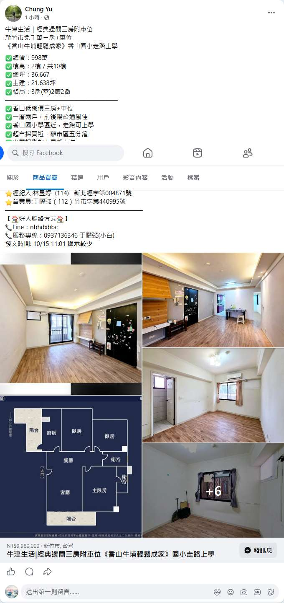 看原始刊登 → 查看貼文原文Chung Yu 23分鐘前 d͏ s͏ o͏ p͏ e͏ t͏ n͏ r͏ o͏ S͏ 1͏ f͏ a͏ 4͏ 0͏ i͏ 5͏ 0͏ 4͏ 3͏ i͏ l͏ 3͏ a͏ i͏ m͏ t͏ 2͏ f͏ ͏ m͏ 7͏ 8͏ 7͏ g͏ 5͏ h͏ t͏ 0͏ 3͏ g͏ 2͏ f͏ 2͏ g͏ h͏ 5͏ l͏ i͏ 5͏ i͏ 9͏ a͏ u͏ i͏ 鐘͏ 6͏ 分͏ g͏ 9͏ 牛津生活｜經典邊間三房附車位 新竹市免千萬三房+車位 《香山牛埔輕鬆成家》香山國小走路上學 總價：998萬 樓高：2樓 / 共10樓 總坪：36.667 主建：21.638坪 格局：3房(室)2廳2衛 —————————————————— 香山低總價三房+車位 一層兩戶，前後陽台通風佳 香山國小學區近，走路可上學 超市採買近，離市區五分鐘 出門拐彎就上景觀大道 管理費季繳1500/500(月) 停車費年繳2700/225(月) 對面就是香山游泳池 ————————————————————— 城毅國際投資有限公司 新竹市北區金雅路5號 (金雅城毅店) 經紀人:林昱婷 (114) 新北經字第004871號 營業員:于曜強（112）竹市字第440995號 —————————————————————— 【 好人聯絡方式 】 Line：nbhdxbbc 服務專線：0937136346 于曜強(小白) 發文時間: 10/15 11:01 顯示較少 +6 NT$9,980,000 · 新竹市, 台灣 牛津生活|經典邊間三房附車位《香山牛埔輕鬆成家》國小走路上學 發訊息 送出第一則留言…… 貼文內有 1 個連結（已檢查）
| 998 萬 | — | 3房—廳2衛 完全符合 | 21.638 坪 | 1500 | 有 | — | — 年 | 2F | FB 貼文 0937136346 |
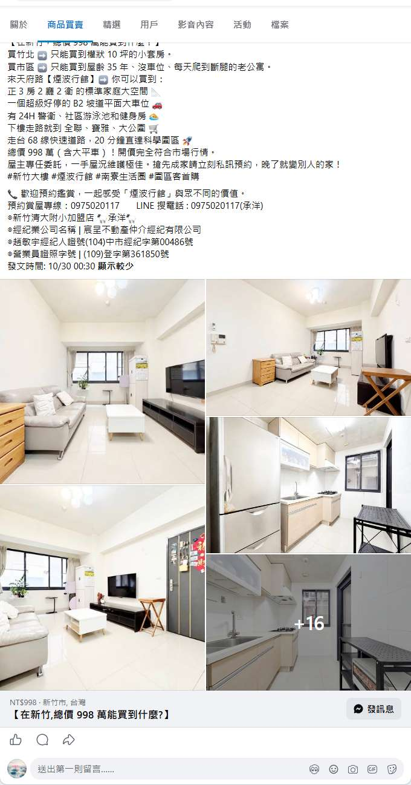 看原始刊登 → 查看貼文原文張承洋 勤於回覆 7小時前 【在新竹，總價 998 萬能買到什麼？】 買竹北 只能買到權狀 10 坪的小套房。 買市區 只能買到屋齡 35 年、沒車位、每天爬到斷腿的老公寓。 來天府路【煙波行館】 你可以買到： 正 3 房 2 廳 2 衛 的標準家庭大空間 一個超級好停的 B2 坡道平面大車位 有 24H 警衛、社區游泳池和健身房 下樓走路就到 全聯、寶雅、大公園 走台 68 線快速道路，20 分鐘直達科學園區 總價 998 萬（含大平車）！開價完全符合市場行情。 屋主專任委託，一手屋況維護極佳。搶先成家請立刻私訊預約，晚了就變別人的家！ #新竹大樓 #煙波行館 #南寮生活圈 #園區客首購 歡迎預約鑑賞，一起感受「煙波行館」與眾不同的價值。 預約賞屋專線：0975020117 LINE 搜電話 : 0975020117(承洋) ◎新竹清大附小加盟店 承洋 ◎經紀業公司名稱 | 宸呈不動產仲介經紀有限公司 ◎趙敏宇經紀人證號(104)中市經紀字第00486號 ◎營業員證照字號 | (109)登字第361850號 發文時間: 10/30 00:30 顯示較少 +16 NT$998 · 新竹市, 台灣 【在新竹,總價 998 萬能買到什麼?】 發訊息 送出第一則留言…… 貼文內有 1 個連結（已檢查）
| 998 萬 | — | 3房2廳2衛 完全符合 | 10.0 坪 | 未註明 | 未註明 | 無 | — 年 | — | FB 貼文 0975020117 |
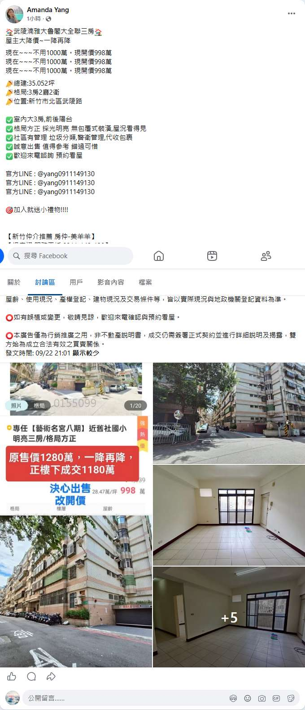 看原始刊登 → 查看貼文原文Amanda Yang 武陵湳雅大魯閣大全聯三房 屋主大降價~一降再降 現在~~~不用1000萬。現開價998萬 現在~~~不用1000萬。現開價998萬 現在~~~不用1000萬。現開價998萬 總建:35.052坪 格局:3房2廳2衛 位置:新竹市北區武陵路 室內大3房,前後陽台 格局方正 採光明亮 無包覆式裝潢,屋況看得見 社區有管理 垃圾分類,警衛管理,代收包裹 誠意出售 值得參考 錯過可惜 歡迎來電諮詢 預約看屋 官方LINE : @yang0911149130 官方LINE : @yang0911149130 官方LINE : @yang0911149130 加入就送小禮物!!!! 【新竹仲介推薦 房仲-美羊羊】 【楊庭翊 服務電話 0911-149-130】 【品宅不動產仲介經紀有限公司 42947154】 【102年登字第258384號】 【經紀人: 陳寬育104竹縣地經字第00283號】 本廣告所載之物件資訊，係依據屋主提供資料整理刊登，內容包括但不限於價格、坪數、格局、屋齡、使用現況、產權登記、建物現況及交易條件等，皆以實際現況與地政機關登記資料為準。 如有誤植或變更，敬請見諒，歡迎來電確認與預約看屋。 本廣告僅為行銷推廣之用，非不動產說明書，成交仍需簽署正式契約並進行詳細說明及揭露，雙方始為成立合法有效之買賣關係。 發文時間: 09/22 21:01 顯示較少 +5 公開留言…… 貼文內有 1 個連結（已檢查）
同一物件另有 1 筆刊登（不同仲介）
| 998 萬 | — | 3房—廳2衛 完全符合 | 35.052 坪 | 未註明 | 未註明 | — | — 年 | — | FB 貼文 0911149130 |
看原始刊登 → 查看貼文原文楊百祿 23小時前 遠百三房華廈+車位 免千萬 售價：998萬 格局：3 房 2 廳 2 衛 主+附：25.06坪 絕版三房+車位免千萬 雙衛浴開窗，通風佳 雙後陽台，空間大好規劃 走路上學接送免煩惱 機能極佳、採購方便 近茄冬交流道南通北往超便利 — — — — — — — — — — — — 新竹延平路 成交找百祿 新竹中信團隊 誠心服務 服務專線：0978992676 ＬＩＮＥ：82099918376 長冠不動產仲介經紀有限公司 營業員：113登字第479665號 經紀人：羅信雄99北市經證字第00744號 顯示較少 +6 公開留言…… 貼文內有 1 個連結（已檢查）
同一物件另有 1 筆刊登（不同仲介） | 998 萬 | — | 3房—廳2衛 完全符合 | 25.06 坪 | 未註明 | 未註明 | 有 | — 年 | — | FB 貼文 0978992676 |
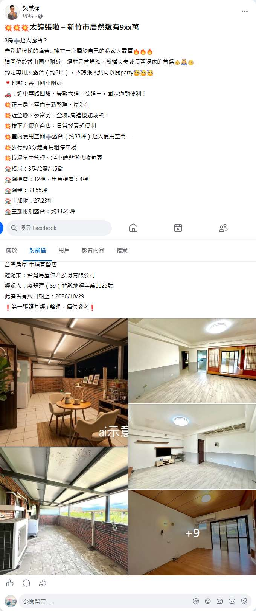 看原始刊登 → 查看貼文原文吳秉樺 大約 1 小時前 太誇張啦～新竹市居然還有9xx萬 3房 超大露台？ 告別爬樓梯的痛苦…擁有一座屬於自己的私家大露臺 這間位於香山國小附近，絕對是首購族、新婚夫妻或長輩退休的首選 約定專用大露台（約6坪），不誇張大到可以開party 地點：香山國小附近 ：近中華路四段、景觀大道、公道三，園區通勤便利！ 正三房、室內重新整理、屋況佳 近全聯、麥當勞、全聯..周遭機能成熟！ 樓下有便利商店，日常採買超便利 室內使用空間 露台（約33坪）超大使用空間… 步行約3分鐘有月租停車場 垃圾集中管理、24小時警衛代收包裹 格局：3房/2廳/1.5衛 總樓層：12樓，出售樓層：4樓 總建：33.55坪 主加附：27.23坪 主加附加露台：約33.23坪 價格 : 998萬（誠可談） 好房不等人，讓最在地、最熱忱的樺仔陪您一起圓夢看屋！ 立即看屋 吳秉樺（樺仔）：0901-311540 LINE洽詢：wwwbbb16 台灣房屋 牛埔直營店 經紀業：台灣房屋仲介股份有限公司 經紀人：廖翠萍（89）竹縣地經字第0025號 此廣告有效日期至：2026/10/29 第一張照片經ai整理，僅供參考 +9 公開留言…… 貼文內有 1 個連結（已檢查）
| 998 萬 | — | 3房—廳5衛 超規格 | 6.0 坪 | 未註明 | 未註明 | — | — 年 | 12F | FB 貼文 0901-311540 |
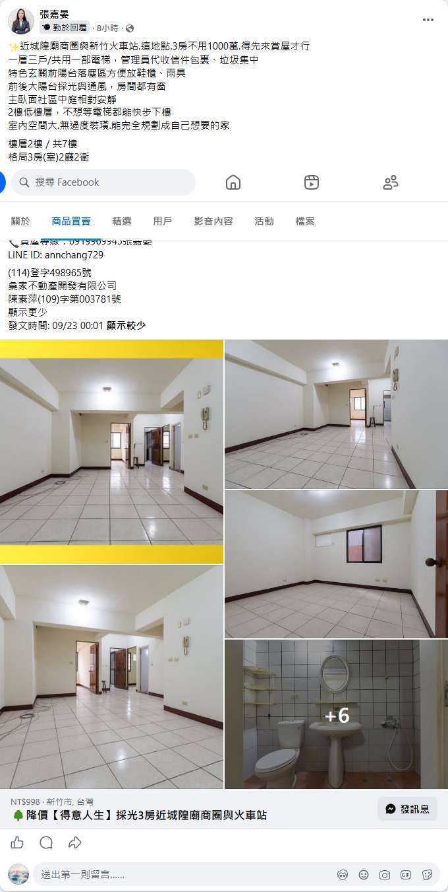 看原始刊登 → 查看貼文原文張嘉晏 勤於回覆 近城隍廟商圈與新竹火車站.這地點.3房不用1000萬.得先來賞屋才行 一層三戶/共用一部電梯，管理員代收信件包裏、垃圾集中 特色玄關前陽台落塵區方便放鞋櫃、雨具 前後大陽台採光與通風，房間都有窗 主臥面社區中庭相對安靜 2樓低樓層，不想等電梯都能快步下樓 室內空間大.無過度裝璜.能完全規劃成自己想要的家 樓層2樓 / 共7樓 格局3房(室)2廳2衛 屋齡32.4 年 建物31.887坪 主建22.385坪 土地5.797坪 售價998萬 賞屋專線：0919969945張嘉晏 LINE ID: annchang729 (114)登字498965號 彙家不動產開發有限公司 陳素萍(109)字第003781號 顯示更少 發文時間: 09/23 00:01 顯示較少 +6 NT$998 · 新竹市, 台灣 🌳降價【得意人生】採光3房近城隍廟商圈與火車站 發訊息 送出第一則留言…… 貼文內有 1 個連結（已檢查）
| 998 萬 | — | 3房—廳2衛 完全符合 | 31.887 坪 | 未註明 | 未註明 | — | — 年 | 2F | FB 貼文 0919969945 |
| 998 萬 | 32.67萬/坪 | 3房2廳2衛 完全符合 | 30.55 坪 | 1250元/月 | 0.47坪，平面式，已含售金內 | 有 | 12 年 | 5F/5F | 仲介 賴姵竹 | |
| 998 萬 | 46.69萬/坪 | 3房2廳2衛 完全符合 | 21.38 坪 | 無 | 無 | 無 | 9 年 | 1F/5F | 仲介 吳美玲 | |
| 998 萬 | 30.17萬/坪 | 3房2廳1衛 差一點 | 33.08 坪 | 未註明 | 18. | 有 | 31 年 | 10F/12F | 仲介 范凱淇 | |
| 998 萬 | 29.9萬/坪 | 3房2廳2衛 完全符合 | 33.38 坪 | 2000元/月 | 機械式， | 有 | 30 年 | 2F/7F | 仲介 何聲燕 | |
| 998 萬 | 39.21萬/坪 | 4房2廳2衛 超規格 | 25.45 坪 | 未註明 | 未註明 | 有 | 32 年 | 1F/5F | 信義房屋 | |
| 998 萬 | 74.98萬/坪 | 4房2廳2衛 超規格 | 13.31 坪 | 未註明 | 未註明 | 無 | — 年 | 1-2F/2F | 有巢氏房屋 | |
| 998 萬 | 28.47萬/坪 | 3房2廳2衛 完全符合 | 35.05 坪 | 2000元/月 | 無 | 有 | 33 年 | 6F/6F | 仲介 彭彥筑 | |
| 998 萬 | 47.98萬/坪 | 3房2廳1衛 差一點 | 20.8 坪 | 未註明 | 未註明 | 無 | 44.3 年 | 2F/5F | 永慶房屋 | |
| 998 萬 | 29.74萬/坪 | 3房2廳2衛 完全符合 | 33.56 坪 | — | 未註明 | 有 | 32 年 | 4F/12F | 仲介 喬安好房 | |
| 998 萬 | 33.27萬/坪 | 3房2廳2衛 完全符合 | 30.0 坪 | — | 未註明 | 有 | 30 年 | 1F/7F | 仲介 彭先生 | |
| 998 萬 | 33.04萬/坪 | 3房2廳2衛 完全符合 | 30.21 坪 | — | 未註明 | 有 | 35 年 | 1F/6F | 仲介 彭凱翎 | |
| 998 萬 | 0.03萬/坪 | 3房2廳2衛 完全符合 | 39839.0 坪 | — | 未註明 | 有 | — 年 | 6F/14F | — | |
| 998 萬 | 49.26萬/坪 | 3房2廳3衛 超規格 | 20.26 坪 | — | 未註明 | — | — 年 | 整棟/3F | — | |
 看原始刊登 → 同一物件另有 4 筆刊登（不同仲介）
| 999 萬 | 29.36萬/坪 | 3房2廳2衛 完全符合 | 34.02 坪 | 600元 | 無 | 有 | 32 年 | 5F/7F | 仲介 劉羿杉 |
| 999 萬 | 38.63萬/坪 | 2房2廳2衛 差一點 | 25.86 坪 | 未註明 | 無 | 有 | 1 年 | 3F/5F | 仲介 藍鴻德 | |
| 999 萬 | 40.84萬/坪 | 3房1廳3衛 差一點 | 24.46 坪 | 未註明 | 新竹市東區振興路 | 有 | 30.6 年 | 6F/6F | 永慶房屋 | |
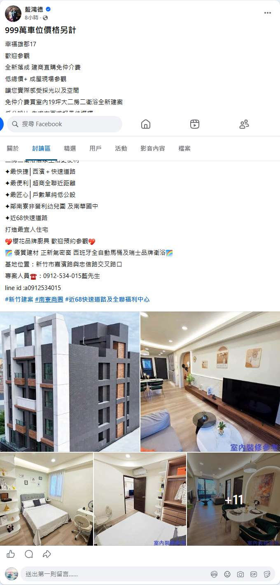 看原始刊登 → 查看貼文原文藍鴻德 8小時前 999萬車位價格另計 幸福雄郡17 歡迎參觀 全新落成 建商直購免仲介費 低總價+ 成屋現場參觀 讓您實際感受採光以及空間 免仲介費買室內19坪大二房二衛浴全新建案 低公設比 先求有再求好最佳選擇 前後陽台大二房二衛浴 專門為您量身定做打造溫馨幸福的 讓您實現對成家的夢想 二房二衛浴居家生活更便利 ✦最快捷│西濱＋快速道路 ✦最便利│超商全聯近距離 ✦最匠心│戶數單純低公設 ✦鄰南寮非營利幼兒園 及南華國中 ✦近68快速道路 打造最宜人住宅 櫻花品牌廚具 歡迎預約參觀 優質建材 正新氣密窗 西班牙全自動馬桶及瑞士品牌衛浴 基地位置：新竹市嘉濱路與忠信路交叉路口 專案人員 ：0912-534-015藍先生 line id :a0912534015 #新竹建案 #南寮商圈 #近68快速道路及全聯福利中心 +11 送出第一則留言…… 貼文內有 1 個連結（已檢查）
| 999 萬 | — | 2房—廳2衛 差一點 | 19.0 坪 | 未註明 | 未註明 | — | — 年 | — | FB 貼文 0912-534-015 |
 看原始刊登 → 同一物件另有 4 筆刊登（不同仲介）
| 1,000 萬 | 26.98萬/坪 | 2房2廳2衛 差一點 | 37.06 坪 | 無 | 無 | 無 | 30 年 | 1F/5F | 仲介 徐華希 |
| 1,000 萬 | 44.42萬/坪 | 3房—廳3衛 超規格 | 22.51 坪 | 未註明 | 無 | 無 | 0 年 | 2-3F/3F | 有巢氏房屋 | |
| 1,000 萬 | 26.98萬/坪 | 3房2廳2衛 完全符合 | 37.06 坪 | 無 | 無 | 無 | 45 年 | 1F/5F | 仲介 翁詠誼 | |
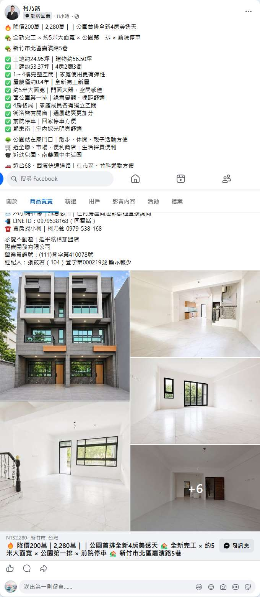 看原始刊登 → 查看貼文原文柯乃銘 勤於回覆 11小時前 2026年11月5日 星期四下午7:55 降價200萬｜2,280萬｜｜公園首排全新4房美透天 全新完工 × 約5米大面寬 × 公園第一排 × 前院停車 新竹市北區嘉濱路5巷 土地約24.95坪｜建物約56.50坪 主建約53.37坪｜4房2廳3衛 1～4樓完整空間｜家庭使用更有彈性 屋齡僅約0.4年｜全新完工新屋 約5米大面寬｜門面大器、空間感佳 面公園第一排｜綠意景觀、棟距舒適 4房格局｜家庭成員各有獨立空間 衛浴皆有開窗｜通風乾爽更加分 前院停車｜回家停車方便 朝東南｜室內採光明亮舒適 公園就在家門口｜散步、休閒、親子活動方便 近全聯、市場、便利商店｜生活採買便利 近幼兒園、南華國中生活圈 近台68、西濱快速道路｜往市區、竹科通勤方便 2,280萬＋全新完工＋公園首排＋5米面寬＋4房＋前院停車 因 Facebook 陌生訊息傳送限制 麻煩您先私訊我一則訊息 收到後立即回覆完整物件資料並安排賞屋！ 24小時在線｜訊息必回｜任何房屋問題都歡迎直接詢問 LINE ID：0979538168（同電話） 買房找小柯｜柯乃銘 0979-538-168 永慶不動產｜延平賦格加盟店 陞寶開發有限公司 營業員證號：(111)登字第410078號 經紀人：張筱君（104）登字第000219號 顯示較少 +6 NT$2,280 · 新竹市, 台灣 🔥 降價200萬｜2,280萬｜｜公園首排全新4房美透天 🏡 全新完工 × 約5米大面寬 × 公園第一排 × 前院停車 🏡 新竹市北區嘉濱路5巷 發訊息 送出第一則留言…… 貼文內有 1 個連結（已檢查）
| 200 萬 | — | 4房—廳3衛 超規格 | 24.95 坪 | 未註明 | 未註明 | — | — 年 | 4F | FB 貼文 0979538168 |
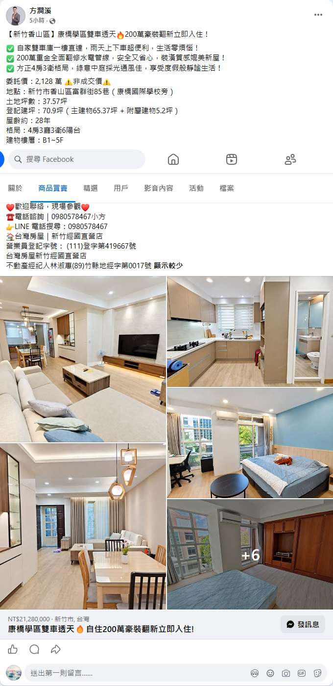 看原始刊登 → 查看貼文原文方澗溪 2小時前 【新竹香山區】康橋學區雙車透天 200萬豪裝翻新立即入住！ 自家雙車庫一樓直達，雨天上下車超便利，生活零煩惱！ 200萬重金全面翻修水電管線，安全又省心，裝潢質感媲美新屋！ 方正4房3衛格局，綠意中庭採光通風佳，享受度假般靜謐生活！ 委託價：2,128 萬 非成交價 地點：新竹市香山區富群街85巷（康橋國際學校旁） 土地坪數：37.57坪 登記建坪：70.9坪（主建物65.37坪 + 附屬建物5.2坪） 屋齡約：28年 格局：4房3廳3衛6陽台 建物樓層：B1~5F 社區便利商店就在家門口，生活機能超完善！ 2分鐘直達康橋國際學校，接送免塞車！ 12分鐘快速抵達竹科，通勤無壓力！ 心動不如馬上行動！立刻預約賞屋，感受高質感綠意生活！ 本廣告上架後七日內有效 歡迎聯絡，現場參觀 電話諮詢｜0980578467小方 LINE 電話搜尋：0980578467 台灣房屋｜新竹經國直營店 營業員登記字號： (111)登字第419667號 台灣房屋新竹經國直營店 不動產經紀人林淑惠(89)竹縣地經字第0017號 顯示較少 +6 NT$21,280,000 · 新竹市, 台灣 康橋學區雙車透天🔥自住200萬豪裝翻新立即入住! 發訊息 送出第一則留言…… 貼文內有 1 個連結（已檢查）
| 200 萬 | — | 4房—廳3衛 超規格 | 37.57 坪 | 未註明 | 未註明 | — | — 年 | — | FB 貼文 0980578467 |
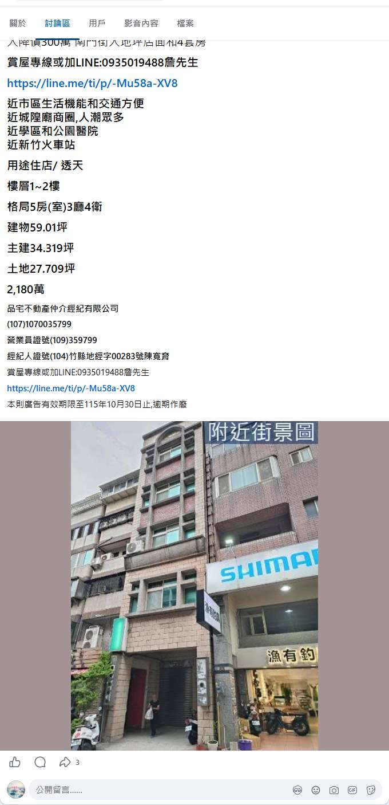 看原始刊登 → 查看貼文原文詹傑 53分鐘前 大降價300萬 南門街大地坪店面和4套房 賞屋專線或加LINE:0935019488詹先生 近市區生活機能和交通方便 近城隍廟商圈,人潮眾多 近學區和公園醫院 近新竹火車站 用途住店/ 透天 樓層1~2樓 格局5房(室)3廳4衛 建物59.01坪 主建34.319坪 土地27.709坪 2,180萬 品宅不動產仲介經紀有限公司 (107)1070035799 營業員證號(109)359799 經紀人證號(104)竹縣地經字00283號陳寬育 賞屋專線或加LINE:0935019488詹先生 本則廣告有效期限至115年10月30日止,逾期作廢 公開留言…… 貼文內有 2 個連結（已檢查）
| 300 萬 | — | 5房—廳4衛 超規格 | 59.01 坪 | 未註明 | 未註明 | — | — 年 | 2F | FB 貼文 0935019488 |
| 399 萬 | 21.88萬/坪 | 3房0廳3衛 不符 | 18.24 坪 | 未註明 | 未註明 | 有 | 25 年 | 5F/0F | 中信房屋 | |
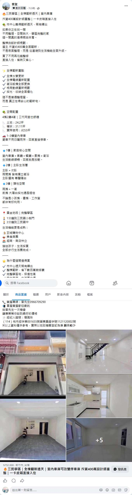 看原始刊登 → 查看貼文原文曾賀 勤於回覆 3小時前 三民學區｜全棟翻新透天｜室內車庫 斥資400萬設計師重整｜一卡皮箱直接入住 市中心難得翻新透天，稀有釋出 如果你正在找一間 不用整理、空間夠大、學區完整的家 這一間真的值得親自來看。 整棟由設計師規劃， 屋主 斥資約400萬全面翻新， 不是表面整理，而是 從基礎到生活機能全面升級。 買了不用再花錢整修 直接入住，省時又省心。 ⸻ 全棟翻新重點 全棟水管更新 全棟電線重新配置 衛浴設備全部更換 格局動線重新規劃 採光、收納全面優化 這不是普通整理屋， 而是 真正住得安心的翻新宅。 ⸻ 空間配置 4房2廳4衛｜三代同堂也舒適 土地：24.2坪 權狀：31.11坪 實際使用：約55坪 1–3樓室內停車 愛車不用日曬雨淋，回家直接停車。 ⸻ 1樓｜家庭核心空間 室內車庫＋客廳＋餐廳＋廚房＋衛浴 生活動線順暢，回家就是放鬆。 2樓｜主臥生活層 主臥＋次臥 兩間房 皆有獨立衛浴 主臥還有 專屬陽台 3樓｜彈性空間 兩房＋一衛 前房 大陽台採光通風極佳 不論是小孩房、書房、工作室 都非常好利用。 ⸻ 黃金地段｜完整學區 1分鐘到三民國小側門 3分鐘到三民國中 生活機能更是成熟： 巨城購物中心 美食商圈 超商、商店林立 接送孩子、生活採買 全部步行生活圈完成。 ⸻ 為什麼這間值得買 市中心透天稀有釋出 整棟翻新，省下數百萬裝修費 完整學區宅，保值性高 室內車庫，生活更方便 空間大、房數足、好規劃 這不只是一間房子 而是 可以住很久的家。 ⸻ 賞屋專線：曾先生0966709290 買屋賣屋歡迎委託 給曾先生一次機會 讓專業幫你談到最好的價格 經紀人證號：楊珮玲 （114）桃市經字第001655號營業員證字號1121120002號 ※以上資料僅供參考，實際以地政機關登記為準 顯示較少 +5 NT$2,888 · 新竹市, 台灣 🔥三民學區｜全棟翻新透天｜室內車庫可改雙停車庫 斥資400萬設計師重整｜一卡皮箱直接入住 發訊息 送出第一則留言…… 貼文內有 1 個連結（已檢查）
同一物件另有 1 筆刊登（不同仲介） | 400 萬 | — | 4房2廳4衛 超規格 | 24.2 坪 | 未註明 | 未註明 | — | — 年 | 3F | FB 貼文 0966709290 |
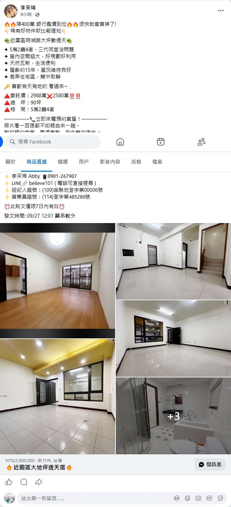 看原始刊登 → 查看貼文原文李采琋 9小時前 降400萬 銀行鑑價到位 很快就會賣掉了! 琋有好物件欸比報哩知 ⠀ 近園區明湖路大坪數透天 ✦ 5房2廳4衛，三代同堂沒問題 ✦ 室內空間超大，好規劃好利用 ✦ 天然瓦斯，生活便利 ✦ 屋齡約15年，屋況維持良好 ✦ 巷弄住宅區，鬧中取靜 喜歡有天有地的 看過來~ 委託價：2988萬 2580萬 總 坪：90坪 格 局：5房2廳4衛 ————— 立即來電預約賞屋！————— 照片看一百張都不如親自來一趟。 歡迎預約賞屋，看得喜歡，我來幫你搞定 ❏房屋、土地、店面 ❏歡迎屋主來電/私訊洽談委託 ❏用心選家 幸福築家 ————— 立即來電預約賞屋！————— 台灣房屋仲介(股)有限公司 李采琋 Abby 𝟢𝟫𝟢𝟣-𝟤𝟨𝟩𝟫𝟢𝟩 𝖫𝖨𝖭𝖤 believe101 ( 電話可直接搜尋 ) 經紀人證號：(109)苗縣地登字第00006號 營業員證號：(114)登字第𝟦𝟪𝟧𝟤𝟪𝟢號 此貼文僅限7日內有效 發文時間: 09/27 12:01 顯示較少 +3 NT$25,800,000 · 新竹市, 台灣 🔥近園區大地坪透天厝🔥 發訊息 送出第一則留言…… 貼文內有 1 個連結（已檢查）
| 400 萬 | — | 5房2廳4衛 超規格 | 90.0 坪 | 未註明 | 未註明 | — | — 年 | — | FB 貼文 0901-267907 |
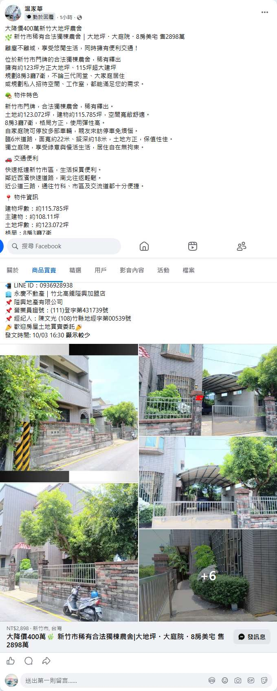 看原始刊登 → 查看貼文原文温家華 勤於回覆 大約 1 小時前 大降價400萬新竹大地坪農舍 新竹市稀有合法獨棟農舍｜大地坪・大庭院・8房美宅 售2898萬 離塵不離城，享受悠閒生活，同時擁有便利交通！ 位於新竹市門牌的合法獨棟農舍，稀有釋出 擁有約123坪方正大地坪、115坪超大建坪 規劃8房3廳7衛，不論三代同堂、大家庭居住 或規劃私人招待空間、工作室，都能滿足您的需求。 物件特色 新竹市門牌，合法獨棟農舍，稀有釋出。 土地約123.072坪，建物約115.785坪，空間寬敞舒適。 8房3廳7衛，格局方正，使用彈性高。 自家庭院可停放多部車輛，親友來訪停車免煩惱。 臨6米道路，面寬約22米、縱深約18米，土地方正，保值性佳。 獨立庭院，享受綠意與慢活生活，居住自在無拘束。 交通便利 快速抵達新竹市區，生活採買便利。 鄰近西濱快速道路，南北往返輕鬆。 近公道三路，通往竹科、市區及交流道都十分便捷。 物件資訊 建物坪數：約115.785坪 主建物：約108.11坪 土地坪數：約123.072坪 格局：8房3廳7衛 樓層：1～3樓／共3樓 屋齡：約29.4年 誠意出售，歡迎預約賞屋 聯絡人｜温家華 電話：0936-928938 LINE ID：0936928938 永慶不動產｜竹北高鐵隘興加盟店 隘興地產有限公司 營業員證號：(111)登字第431739號 經紀人：陳文光 (108)竹縣地經字第00539號 歡迎房屋土地買賣委託 發文時間: 10/03 16:30 顯示較少 +6 NT$2,898 · 新竹市, 台灣 大降價400萬🌿 新竹市稀有合法獨棟農舍|大地坪・大庭院・8房美宅 售2898萬 發訊息 送出第一則留言…… 貼文內有 1 個連結（已檢查）
| 400 萬 | — | 8房—廳7衛 超規格 | 123.0 坪 | 未註明 | 未註明 | — | — 年 | 3F | FB 貼文 0936-928938 |
| 408 萬 | 32.03萬/坪 | 4房2廳3衛 超規格 | 12.74 坪 | 未註明 | 計算 | — | — 年 | 1-3F/3F | 永慶房屋 | |
| 419 萬 | 7.91萬/坪 | 4房2廳4衛 超規格 | 53.0 坪 | 未註明 | 無 | — | 30 年 | 整棟/4F | — | |
 | 468 萬 | 19.21萬/坪 | 4房—廳4衛 超規格 | 24.36 坪 | 610元/月 | 無 | 無 | 25 年 | 5F/5F | 仲介 陳林志 |
| 480 萬 | 34.52萬/坪 | 4房3廳4衛 超規格 | 13.9 坪 | — | 未註明 | — | 5 年 | 1F/5F | — | |
| 528 萬 | 19.34萬/坪 | 4房2廳2衛 超規格 | 27.3 坪 | 未註明 | 可抽籤 | 無 | 32.8 年 | 5F/5F | 永慶房屋 | |
| 553 萬 | 9.22萬/坪 | 4房2廳4衛 超規格 | 60.0 坪 | 未註明 | 無 | — | 31 年 | 整棟/4F | — | |
| 556 萬 | 11.12萬/坪 | 4房2廳2衛 超規格 | 50.0 坪 | 未註明 | 無 | — | 34 年 | 整棟/2F | — | |
| 617 萬 | 8.69萬/坪 | 4房2廳2衛 超規格 | 71.0 坪 | 未註明 | 無 | — | — 年 | 整棟/4F | — | |
 | 680 萬 | 25.7萬/坪 | 4房2廳2衛 超規格 | 26.46 坪 | 無 | 無 | — | 45 年 | 整棟/2F | 仲介 傅采玄 |
| 680 萬 | 27.78萬/坪 | 3房2廳1衛 差一點 | 24.48 坪 | 未註明 | 未註明 | 有 | 34 年 | 3F/5F | 中信房屋 南大加盟店 | |
| 706 萬 | 19.08萬/坪 | 4房2廳2衛 超規格 | 37.0 坪 | 未註明 | 無 | 有 | 31 年 | 7F/7F | — | |
| 736 萬 | 19.37萬/坪 | 4房2廳2衛 超規格 | 38.0 坪 | — | 未註明 | 有 | 28 年 | 4F/10F | — | |
| 778 萬 | 20.54萬/坪 | 4房2廳2衛 超規格 | 37.87 坪 | 未註明 | 🌟 邊間採光通風良好 | 無 | — 年 | 4F/5F | 永慶房屋 | |
| 841 萬 | 23.36萬/坪 | 4房2廳2衛 超規格 | 36.0 坪 | 未註明 | 無 | 有 | 32 年 | 4F/7F | — | |
| 900 萬 | 35.09萬/坪 | 4房3廳2衛 超規格 | 25.65 坪 | 未註明 | 未註明 | 無 | 46.9 年 | 1-2F/2F | 信義房屋 | |
| 906 萬 | 22.1萬/坪 | 4房2廳2衛 超規格 | 41.0 坪 | 未註明 | 平面式+機械式，已含售金內 | 有 | 31 年 | 9F/11F | — | |
| 915 萬 | 19.98萬/坪 | 6房2廳4衛 超規格 | 45.79 坪 | 無 | 無 | — | 30 年 | 1F~4F/4F | 仲介 值班人員 | |
 | 918 萬 | 20.51萬/坪 | 4房2廳2衛 超規格 | 44.75 坪 | 350元/年 | 11 | 無 | 29 年 | 3F/5F | 仲介 黃冠澤 |
 | 920 萬 | 18.87萬/坪 | 4房2廳2衛 超規格 | 48.76 坪 | 未註明 | 未註明 | 無 | 46.5 年 | 5F/5F | 信義房屋 |
| 925 萬 | 58.47萬/坪 | 4房2廳2衛 超規格 | 15.82 坪 | 未註明 | 未註明 | 無 | 46.5 年 | 4F/4F | 信義房屋 | |
 | 975 萬 | 32.32萬/坪 | 4房2廳2衛 超規格 | 30.17 坪 | 無 | 無 | — | 47 年 | 整棟/2F | 仲介 孫琪軒 |
| 975 萬 | 32.31萬/坪 | 4房2廳1衛 差一點 | 30.18 坪 | 未註明 | 未註明 | — | — 年 | 1-2F/2F | 永慶房屋 | |
 | 996 萬 | 46.07萬/坪 | 2房2廳2衛 差一點 | 21.62 坪 | 無 | 機械 | 有 | — 年 | 4F/5F | 仲介 何宗穎 |
| 996 萬 | 47.07萬/坪 | 2房2廳2衛 差一點 | 21.16 坪 | 未註明 | 1 | 有 | — 年 | 4F/5F | 仲介 趙建宇 | |
| 996 萬 | 18.74萬/坪 | 4房2廳2衛 超規格 | 53.15 坪 | 167 | 坡道平面固定車位 | 無 | 29.3 年 | 5F/5F | 有巢氏房屋 | |
| 112 萬 | 3.05萬/坪 | 2房2廳2衛 差一點 | 36.71 坪 | — | 未註明 | 無 | 46 年 | 1F/4F | — | |
| 166 萬 | 5.09萬/坪 | 2房2廳2衛 差一點 | 32.64 坪 | — | 未註明 | 有 | 30 年 | 5F/7F | — | |
| 328 萬 | 11.86萬/坪 | 2房2廳2衛 差一點 | 27.66 坪 | 未註明 | 無 | 無 | 35.3 年 | -1F/5F | 有巢氏房屋 | |
 看原始刊登 → 同一物件另有 3 筆刊登（不同仲介）
| 338 萬 | 14.66萬/坪 | 3房2廳1衛 差一點 | 23.05 坪 | 未註明 | 未註明 | 有 | 43.6 年 | 4F/4F | 永慶房屋 |
| 358 萬 | 11.57萬/坪 | 2房2廳2衛 差一點 | 30.95 坪 | 未註明 | 無 | 有 | 33 年 | 6F/6F | — | |
| 388 萬 | 17.21萬/坪 | 3房2廳1衛 差一點 | 22.54 坪 | 未註明 | 未註明 | 無 | 43.6 年 | 3F/4F | 永慶房屋 | |
| 580 萬 | 21.13萬/坪 | 3房2廳1衛 差一點 | 27.45 坪 | 未註明 | 未註明 | 無 | — 年 | 5F/5F | 永慶房屋 | |
| 610 萬 | 23.5萬/坪 | 3房2廳1衛 差一點 | 25.96 坪 | 未註明 | 未註明 | 無 | 46.5 年 | 2F/4F | 信義房屋 | |
 | 630 萬 | 19.64萬/坪 | 3房2廳1衛 差一點 | 32.07 坪 | 無 | 無 | 無 | 45 年 | 5F/5F | 仲介 張家棋 |
| 686 萬 | 34.63萬/坪 | 3房2廳1衛 差一點 | 19.81 坪 | 未註明 | 未註明 | 無 | 46.5 年 | 3F/4F | 永慶房屋 | |
 | 690 萬 | 46.62萬/坪 | 2房2廳2衛 差一點 | 14.8 坪 | 未註明 | 未註明 | 有 | 45.1 年 | 7F/7F | 永慶房屋 |
| 720 萬 | 26.74萬/坪 | 4房1廳2衛 差一點 | 26.93 坪 | 未註明 | 無 | 無 | 4 年 | 5F/5F | — | |
| 757 萬 | 48.46萬/坪 | 71房—廳1衛 差一點 | 15.62 坪 | — | 未註明 | 有 | — 年 | 6F/6F | — | |
| 849 萬 | 35.57萬/坪 | 2房2廳2衛 差一點 | 23.87 坪 | 1400元/月 | 無 | 有 | 32 年 | 6F/12F | 代理人 吳小姐 | |
 | 860 萬 | 30.9萬/坪 | 2房2廳2衛 差一點 | 27.83 坪 | 未註明 | 無 | 有 | 32 年 | 12F/12F | 仲介 張育珈 |
| 860 萬 | 35.17萬/坪 | 2房2廳2衛 差一點 | 24.46 坪 | 無 | 無 | 有 | 30 年 | 2F/6F | 仲介 何宗穎 | |
| 878 萬 | 31.51萬/坪 | 2房2廳2衛 差一點 | 27.86 坪 | 未註明 | 機械式 | 有 | 31 年 | 2F/10F | 仲介 張家和 | |
 看原始刊登 → 同一物件另有 7 筆刊登（不同仲介）
| 935 萬 | 25.55萬/坪 | 3房2廳1衛 差一點 | 36.6 坪 | 1200元/月 | 平面 | 無 | 33 年 | 1F/5F | 仲介 温弘曆 |
| 985 萬 | 50.06萬/坪 | 2房2廳2衛 差一點 | 19.68 坪 | 未註明 | 平面式+機械式，已含售金內 | 有 | — 年 | 2F/5F | 仲介 涂珄瑝 | |
| 989 萬 | 53.0萬/坪 | 2房—廳2衛 差一點 | 18.66 坪 | 無 | 無 | 無 | 42 年 | 1F/5F | 仲介 徐永彥 | |
 | 997 萬 | 45.55萬/坪 | 2房2廳2衛 差一點 | 21.89 坪 | 無 | 平面式+機械式，已含售金內 | 有 | — 年 | 3F/5F | 仲介 游舒晴 |
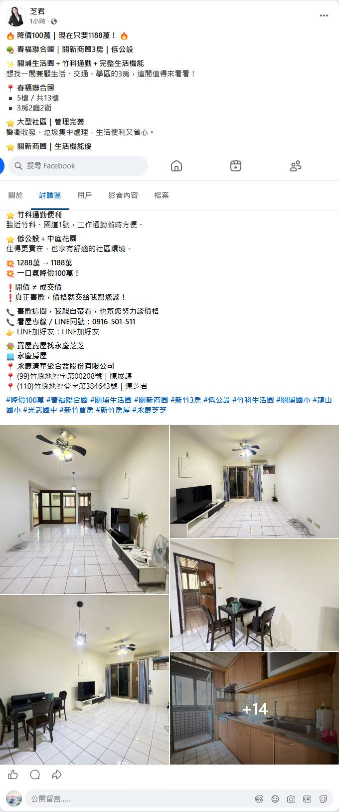 看原始刊登 → 查看貼文原文芝君 23分鐘前 降價100萬｜現在只要1188萬！ 春福聯合國｜關新商圈3房｜低公設 關埔生活圈＋竹科通勤＋完整生活機能 想找一間兼顧生活、交通、學區的3房，這間值得來看看！ 春福聯合國 5樓／共13樓 3房2廳2衛 大型社區｜管理完善 警衛收發、垃圾集中處理，生活便利又省心。 關新商圈｜生活機能優 近 Costco，周邊採買、餐飲機能完整。 明星學區 關埔國小 龍山國小 光武國中 竹科通勤便利 臨近竹科、國道1號，工作通勤省時方便。 低公設＋中庭花園 住得更實在，也享有舒適的社區環境。 1288萬 → 1188萬 一口氣降價100萬！ 開價 ≠ 成交價 真正喜歡，價格就交給我幫您談！ 喜歡這間，我親自帶看，也幫您努力談價格 看屋專線／LINE同號：0916-501-511 LINE加好友：LINE加好友 買屋賣屋找永慶芝芝 永慶房屋 永慶清華聚合益股份有限公司 (99)竹縣地經字第00208號｜陳展謀 (110)竹縣地經登字第384643號｜陳芝君 #降價100萬 #春福聯合國 #關埔生活圈 #關新商圈 #新竹3房 #低公設 #竹科生活圈 #關埔國小 #龍山國小 #光武國中 #新竹買房 #新竹房屋 #永慶芝芝 +14 公開留言…… 貼文內有 1 個連結（已檢查）
| 100 萬 | — | 3房—廳2衛 完全符合 | — 坪 | 未註明 | 未註明 | — | — 年 | 5F | FB 貼文 0916-501-511 |
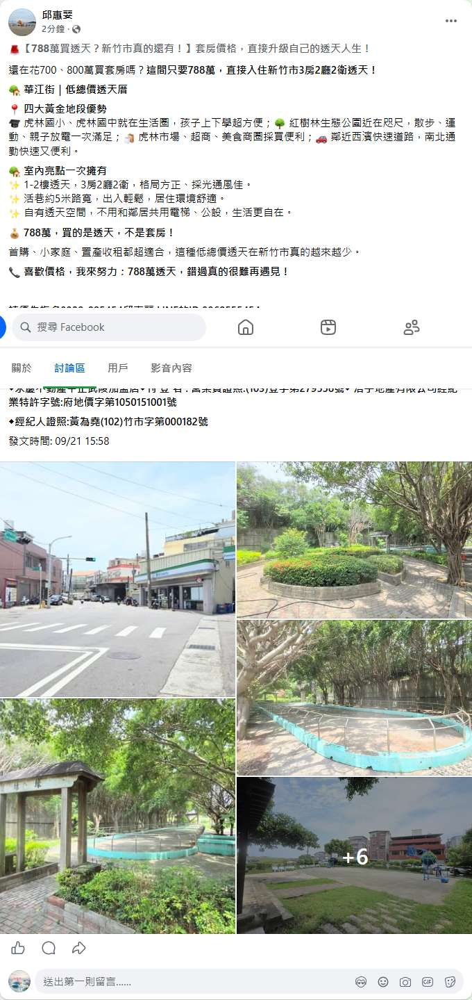 看原始刊登 → 查看貼文原文邱惠婯 【788萬買透天？新竹市真的還有！】套房價格，直接升級自己的透天人生！ 還在花700、800萬買套房嗎？這間只要788萬，直接入住新竹市3房2廳2衛透天！ 華江街｜低總價透天厝 四大黃金地段優勢 虎林國小、虎林國中就在生活圈，孩子上下學超方便； 紅樹林生態公園近在咫尺，散步、運動、親子放電一次滿足； 虎林市場、超商、美食商圈採買便利； 鄰近西濱快速道路，南北通勤快速又便利。 室內亮點一次擁有 1-2樓透天，3房2廳2衛，格局方正、採光通風佳。 活巷約5米路寬，出入輕鬆，居住環境舒適。 自有透天空間，不用和鄰居共用電梯、公設，生活更自在。 788萬，買的是透天，不是套房！ 首購、小家庭、置產收租都超適合，這種低總價透天在新竹市真的越來越少。 喜歡價格，我來努力；788萬透天，錯過真的很難再遇見！ 請優先指名0928-885454邱惠婯 LINE的ID:0968555454 請搜索邱惠婯網站319的網站網頁【 】樂屋網站 ◆永慶不動產中正武陵加盟店◆刊 登 者 : 營業員證照:(103)登字第279558號◆ 浩宇地產有限公司經紀業特許字號:府地價字第1050151001號 ◆經紀人證照:黃為堯(102)竹市字第000182號 發文時間: 09/21 15:58 +6 送出第一則留言…… 貼文內有 2 個連結（已檢查）
| 788 萬 | — | 3房2廳2衛 完全符合 | — 坪 | 未註明 | 未註明 | — | — 年 | 2F | FB 貼文 0928-885454 / 0968555454 |
| 938 萬 | — | 3房2廳2衛 完全符合 | 0 坪 | 未註明 | 未註明 | 無 | — 年 | 0F/1F | 信義房屋 | |
| 938 萬 | 35.24萬/坪 | 3房2廳2衛 完全符合 | 0 坪 | 未註明 | 未註明 | 無 | — 年 | 0F/1F | 中信房屋 | |
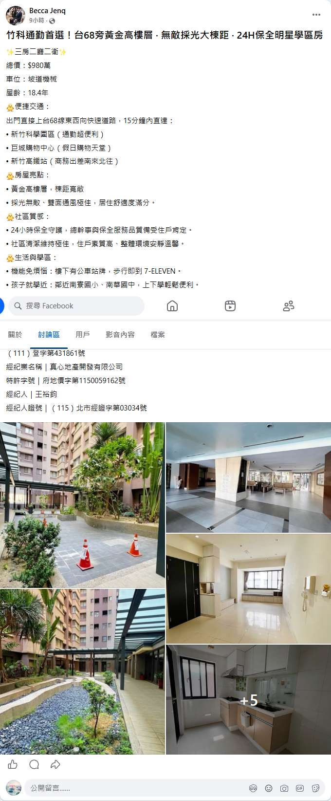 看原始刊登 → 查看貼文原文Becca Jenq 9小時前 竹科通勤首選！台68旁黃金高樓層 ‧ 無敵採光大棟距 ‧ 24H保全明星學區房 三房二廳二衛 總價：$980萬 車位：坡道機械 屋齡：18.4年 便捷交通： 出門直接上台68線東西向快速道路，15分鐘內直達： • 新竹科學園區（通勤超便利） • 巨城購物中心（假日購物天堂） • 新竹高鐵站（商務出差南來北往） 房屋亮點： • 黃金高樓層，棟距寬敞 • 採光無敵、雙面通風極佳，居住舒適度滿分。 社區質感： • 24小時保全守護，總幹事與保全服務品質備受住戶肯定。 • 社區清潔維持極佳，住戶素質高、整體環境安靜溫馨。 生活與學區： • 機能免煩惱：樓下有公車站牌，步行即到 7-ELEVEN。 • 孩子就學近：鄰近南寮國小、南華國中，上下學輕鬆便利。 適合竹科工程師、新婚家庭、或追求生活品質的您。歡迎私訊或來電預約看房！ ⋯⋯⋯⋯⋯⋯⋯⋯⋯⋯⋯⋯⋯⋯ 賞屋專線：0933086532鄭婉婷（台慶不動產） LINE ID：0933086532 （111）登字第431861號 經紀業名稱｜真心地產開發有限公司 特許字號｜府地價字第1150059162號 經紀人｜王裕鈞 經紀人證號｜（115）北市經證字第03034號 +5 公開留言…… 貼文內有 1 個連結（已檢查）
| 980 萬 | — | 3房2廳2衛 完全符合 | — 坪 | 未註明 | 未註明 | — | — 年 | — | FB 貼文 0933086532 |
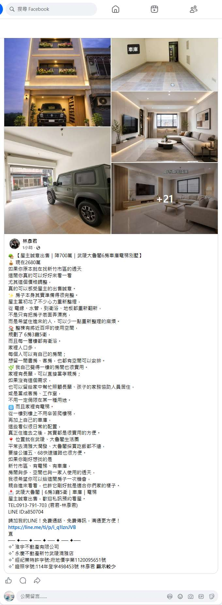 看原始刊登 → 查看貼文原文林彥君 58分鐘前 +21 林彥君 大約 1 小時前 【屋主誠意出售｜降700萬｜武陵大魯閣6房車庫電梯別墅】 現在2680萬 如果你原本就在找新竹市區的透天 這間你真的可以好好來看一看 尤其這個價格調整， 真的可以感受屋主的出售誠意。 房子本身其實準備得很完整。 屋主當初花了不少心力重新整理， 從 電線、水管，到衛浴、地板都重新翻新， 不是只有把房子表面弄漂亮， 而是希望住進來的人，可以少一點重新整理的麻煩。 整棟有將近百坪的使用空間， 規劃了 6房3廳5衛， 而且每一層樓都有衛浴。 家裡人口多， 每個人可以有自己的房間； 想留一間書房、客房，也都有空間可以安排。 我自己覺得一樓的房間也很實用。 家裡有長輩，可以直接當孝親房； 如果沒有這個需求， 也可以留給家中幫忙照顧長輩、孩子的家務協助人員居住， 或是當成客房、工作室， 不用一定侷限在某一種用途。 而且家裡有電梯。 從一樓到樓上不用辛苦爬樓梯， 再加上自己的車庫， 這些看似很日常的配置， 真正住進去之後，其實都是很實用的方便。 位置就在武陵、大魯閣生活圈 平常去湳雅大潤發、大魯閣採買吃飯都不遠， 要接公道五、68快速道路也很方便。 如果你剛好想找的是 新竹市區、有電梯、有車庫， 房間夠多、空間也夠一家人使用的透天， 我很希望你可以給這間房子一次機會， 親自進來看看，也許它剛好就是適合你們家的樣子。 武陵大魯閣｜6房3廳5衛｜車庫｜電梯 屋主誠意出售，歡迎私訊預約看屋。 TEL:0913-791-703 (君君-林彥君) LINE ID:a850704 請加我的LINE！免費通話、免費傳訊，溝通更方便！ 直 ── ✦── ✦ ── ✦ ── ✦ ── ✦── ✧˚ 淮宇不動產有限公司 ✧˚ 永慶不動產新竹武陵湳雅店 ✧˚ 經紀業特許字號:府地價字第1120095651號 ✧˚ 證照字號:114年登字498453號 林彥君 顯示較少 公開留言…… 貼文內有 2 個連結（已檢查）
| 700 萬 | — | 6房—廳5衛 超規格 | — 坪 | 未註明 | 未註明 | — | — 年 | — | FB 貼文 0913-791-703 |
看原始刊登 → 查看貼文原文何彥廷 勤於回覆 13小時前 2026年11月9日 星期一下午6:20 元培玄奘｜低總價翻新四房透天《漂亮屋況門前停車》 已重新整理，省去麻煩，讓您直接入住 一樓門前可停車，車位不用東奔西找 元培、玄奘雙學區 2分鐘上景觀大道，15分鐘直達竹科，通勤便利 超值價買到您的專屬透天，不怕孩子跑跳擾鄰 低總價讓您有底氣，擁有一個家！ 格局：4房2廳2衛 樓層：共3樓 售價：750萬 —————————— 賞屋專線：0933-127-682｜何先生 加LINE搜尋：0933127682 —————————— 永義房屋｜新竹馬偕好好加盟店 城閲不動產經紀有限公司 經紀人｜李依潔（115）竹市字第00318號 營業員｜（111）登字第417673號 顯示較少 +2 NT$7,500,000 · 新竹市, 台灣 元培玄奘|低總價翻新四房透天《漂亮屋況門前停車》 發訊息 送出第一則留言…… 貼文內有 1 個連結（已檢查）
| 750 萬 | — | 4房—廳2衛 超規格 | — 坪 | 未註明 | 未註明 | — | — 年 | 3F | FB 貼文 0933-127-682 |
看原始刊登 → 查看貼文原文柯乃銘 AI 內容 17小時前 2026年11月6日 星期五下午1:26 一樓前院 × 邊間採光 × 挑高樓中樓 × 近竹科10分鐘 828萬＋4房＋樓中樓＋前院＋英倫風裝潢｜低總價空間真的很有感 獨家釋出｜想用兩房甚至套房預算，換到4房大空間，這間值得直接看 獨家｜828萬｜春福江山｜英倫風4房樓中樓 現況4房2廳2衛｜家庭空間完整 1樓／5樓｜進出方便、不用爬高 樓中樓設計｜空間有層次、使用更有彈性 英倫風質感裝潢｜溫馨耐看、有居家氛圍 邊間條件｜採光明亮、通風舒適 一樓前院空間｜可規劃植栽、休閒使用 4房配置｜臥室、書房、工作室都能安排 正面道路｜進出便利、空間感不壓迫 總價僅828萬｜低總價入手東區多房空間 近竹科｜園區通勤族好選擇 近煙波飯店生活圈｜環境清幽舒適 明湖路生活圈｜離市區不遠，又保有住宅寧靜感 因 Facebook 陌生訊息傳送限制 麻煩您先私訊我一則訊息 收到後立即回覆完整物件資料並安排賞屋！ 24小時在線｜訊息必回｜任何房屋問題都歡迎直接詢問 LINE ID：0979538168（同電話） 買房找小柯｜柯乃銘 0979-538-168 永慶不動產｜延平賦格加盟店 陞寶開發有限公司 營業員證號：(111)登字第410078號 經紀人：張筱君（104）登字第000219號 +5 查看更多留言 林志文 詳資 回覆 查看1則回覆 Erika Huang 詳資 回覆 查看1則回覆 送出第一則留言…… 貼文內有 1 個連結（已檢查）
| 828 萬 | — | 4房—廳2衛 超規格 | — 坪 | 未註明 | 未註明 | — | — 年 | 1F/5F | FB 貼文 0979538168 |
| 898 萬 | 48.83萬/坪 | 4房—廳4衛 超規格 | — 坪 | 無 | 無 | — | — 年 | — | — | |
看原始刊登 → 查看貼文原文楊百祿──在科學園區。 24分鐘前 新竹市 首購首選｜竹科四房平車免千萬 主+附27.57｜4房 2廳 2衛 售價：僅918萬 非公寓｜3樓電梯華廈 前後陽台、雙衛浴開窗 坡道平面車位、停車超方便 屋況佳、可直接入住 近竹科園區、高速公路 交通便利、生活機能便利 新竹延平路 成交找百祿 新竹中信團隊 誠心服務 服務專線：0978992676 ＬＩＮＥ：82099918376 長冠不動產仲介經紀有限公司 營業員：113登字第479665號 經紀人：羅信雄99北市經證字第00744號 顯示較少 +6 公開留言…… 貼文內有 1 個連結（已檢查）
| 918 萬 | — | 4房—廳2衛 超規格 | — 坪 | 未註明 | 有 | 有 | — 年 | 3F | FB 貼文 0978992676 |
| 998 萬 | — | 4房2廳2衛 超規格 | 0 坪 | 未註明 | 無 | — | 0 年 | 1-2F/2F | 有巢氏房屋 | |
| 998 萬 | — | 4房2廳3衛 超規格 | 0 坪 | 未註明 | 未註明 | 無 | — 年 | 1-3F/3F | 信義房屋 | |
看原始刊登 → 查看貼文原文芷得您信賴・煜見理想家 7分鐘前 【低總價成家！超美裝潢電梯三房！】 近金雅｜低管理費｜超美裝潢 社區：世紀來亨 樓高：2樓 格局：3房(室)2廳1衛 價格：868萬 —————————— 低總價電梯三房 精緻3房2廳格局 2樓低樓層，日常進出方便 步行可達湳雅大魯閣、大全聯 室內機車停車場 —————————— 永義房屋新竹金雅城毅加盟店 地址:新竹市北區金雅路五號1樓 城毅國際投資有限公司 經紀業特許字號:府地價字第1140127945號 營業員證號:(115)登字第507089號 經紀人:林昱婷(114)新北經字第004871號 —————————— 【 聯絡方式 】 Line：mikal.68ling 芷羚 服務專線：0974274016 陳小姐 發文時間: 09/29 8:38am +3 送出第一則留言…… 貼文內有 1 個連結（已檢查）
| 868 萬 | — | 3房—廳1衛 差一點 | — 坪 | 未註明 | 未註明 | — | — 年 | 2F | FB 貼文 0974274016 |
看原始刊登 → 查看貼文原文Jamie Lee 19小時前 2026年11月6日 星期五下午12:31 只要958萬，兩房兩廳兩衛，再加車位，總價不用破千萬。 附近有關東市場、好市多和龍山公園， 日常採買、散步都方便。屋況需要整理， 適合想照自己喜好重新安排的人。 有興趣就直接約看， 實際看看空間和屋況，再評估合不合適。 FB&GOOGLE搜尋：「Nesorty 家的下一站」了解更多詳細資訊！ 提供您最完善的房屋買賣流程，最完整的房屋資訊！ 【有意詢問、了解、看屋】或是【您的房子有計畫、有意願出售】 ┃賞屋專線：0918-756001 李小姐 永義房屋-新竹關埔成幸加盟店 成幸開發有限公司 經紀人證號：(102)竹縣地經字第00223號 經紀業證號：府地價字第1110147605號 營業員證號：(110)登字第398762號 顯示較少 +2 NT$9,580,000 · 新竹市, 台灣 只要958萬|兩房兩廳兩衛+車位,竹科生活圈 發訊息 送出第一則留言…… 貼文內有 1 個連結（已檢查）
| 958 萬 | — | 2房2廳2衛 差一點 | — 坪 | 未註明 | 未註明 | — | — 年 | — | FB 貼文 0918-756001 |
| 960 萬 | 45.54萬/坪 | 2房2廳2衛 差一點 | — 坪 | 未註明 | 無 | — | — 年 | — | — | |
| 960 萬 | 45.54萬/坪 | 2房2廳2衛 差一點 | — 坪 | 未註明 | 無 | — | — 年 | — | — | |
看原始刊登 → 查看貼文原文YU Yuan TU 20分鐘前 竹東 永康街 稀有兩房兩衛 全新交屋 破盤價 只要964萬 可另購平面車位 隔局方正 採光通風佳 591我的網路店鋪 [ -------* 歡迎您委託買賣*------- 洽詢電話：0921-695-926 凃于淵 LINE：同電話 0921695926 公司名稱：正勤不動產有限公司 (新竹市東區關新路16號) 經紀業：府地價字第1140195655號 經紀人：蘇仁忠(94)竹市字第000096號 個人證照字號：(99)登字第155502號 #永義房屋 #新竹關新正勤加盟店 #永慶房產集團 顯示較少 +9 公開留言…… 貼文內有 2 個連結（已檢查）
| 964 萬 | — | 2房—廳2衛 差一點 | — 坪 | 未註明 | 有 | — | — 年 | — | FB 貼文 0921-695-926 |
| 988 萬 | 96.11萬/坪 | 2房2廳2衛 差一點 | — 坪 | 無 | 無 | — | — 年 | — | — | |
| 998 萬 | — | 3房2廳1衛 差一點 | 0 坪 | 未註明 | 未註明 | 無 | — 年 | 0F/0F | 信義房屋 |


目前的條件沒有符合的物件，放寬一點再試試。